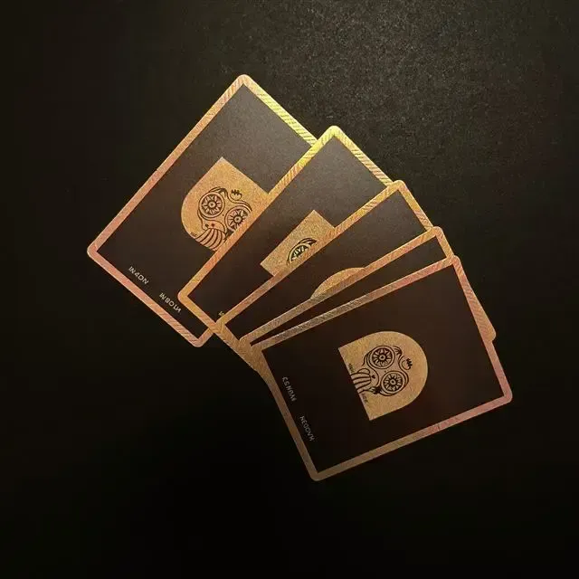
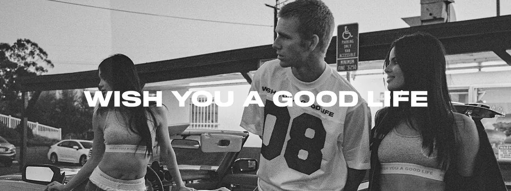
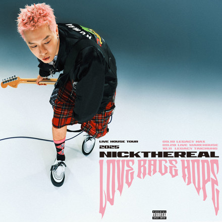

Cards, data viz & page sections
卡片、資料視覺化與頁面區塊
One of the Pillar 4 pages. Classification and the full inventory are on the Pillar 4 overview.
Pillar 4 的其中一頁。元件分類與完整總表在 Pillar 4 總覽。
4.33 Card
🟡 molecule.ztor-card is not used on product pages — kept for reference/display only. Product-page section wrappers use 4.33b Section card (.card) instead.⚠ .ztor-card 產品頁未使用，僅展示保留。產品頁的區段外框請用 4.33b Section card（.card）。Purpose
用途
Canonical elevated-card reference: standalone content container with title / meta / body slots, plus clickable / muted / frame modifiers. This is the design-system's documented "generic card" shell.
canonical 的浮起卡片參考：獨立內容容器，含標題／meta／內文槽，另有 clickable／muted／frame 修飾子。這是設計系統文件化的「通用內容卡」殼。
Relationships
元件關係
Rendered preview (standalone card examples)
視覺展示 (獨立卡範例)
| default | :hover | :focus-visible | |
|---|---|---|---|
.ztor-card |
Project |
Project |
Project |
--muted |
Nested |
Nested |
Nested |
--frame |
Framed |
Framed |
Framed |
Do & Don't
該做與別做
- Use
.ztor-card--mutedfor nested sub-blocks. - 巢狀子區塊用
.ztor-card--muted。
- Add
--clickablelift to non-interactive cards. - 別給非互動的卡片加
--clickable上浮。 - Use this for a product-page section wrapper — use
.card(Section card) instead. - 別拿它當產品頁區段外框 — 改用
.card（Section card）。
For developers — classes · tokens · code給工程師 — class · token · 程式碼
Behavior details
行為細節
| State狀態 | Selector選擇器 | Change變化 |
|---|---|---|
| default預設 | — | --card bg, 1px --border, --radius (Q3 2026-07-13: flat border, no shadow at rest)--card 底、1px --border、--radius（Q3 2026-07-13：靜置改純邊框，不用陰影） |
| hoverhover | .ztor-card--clickable:hover | translateY(var(--clickable-card-lift)) (−4px) + background: var(--clickable-card-hover-bg); border and shadow unchanged (2026-10-20, site-wide clickable-card standard — see §5.3)translateY(var(--clickable-card-lift))（−4px）＋ background: var(--clickable-card-hover-bg)；邊框與陰影不變（2026-10-20，全站可點卡片標準，見 §5.3） |
| focusfocus | .ztor-card--clickable:focus-visible | 2px solid var(--ring) outline, 2px offset2px solid var(--ring) 外框，2px offset |
Class API (CSS classes — Props/API N/A, static prototype)
Class API（樣式類別） （CSS classes — 無 Props/API，靜態原型）
| Class / modifierClass／修飾子 | Effect效果 |
|---|---|
.ztor-card (+ --clickable/--muted/--frame) | Bordered container, 24px pad; modifiers add lift/mute/frame邊框容器，24px 內距；修飾子加上 上浮／淡化／frame |
.ztor-card__title/__meta/__body | 18px title / 13px subtle meta / 14px body18px 標題 / 13px 弱化 meta / 14px 內文 |
Token usage (→ Pillar 2 Role)
Token 使用 （→ Pillar 2 Role）
--card,--muted— bg--card、--muted— 底色--foreground,--foreground-muted,--muted-foreground— title / body / meta--foreground、--foreground-muted、--muted-foreground— 標題／內文／meta--border— 1px default edge (Q3);--radius-md,--radius-lg— default vs frame--border— 1px 預設邊緣（Q3）；--radius-md、--radius-lg— 預設 對 frame--clickable-card-lift,--clickable-card-hover-bg— clickable hover (2026-10-20);--ring— focus outline--clickable-card-lift、--clickable-card-hover-bg— 可點卡片 hover（2026-10-20）；--ring— focus 外框--font-ui,--font-body--font-ui、--font-body
<div class="ztor-card ztor-card--clickable"> <div class="ztor-card__title">Project</div> <div class="ztor-card__meta">2h ago</div> </div>
ds-components/card.css
4.33b Section card
🟡 moleculePurpose
用途
The product-page section wrapper: a titled outline with an optional head-row action link, used for every card-shaped section across the app (dashboard tiles, earnings panels, detail-page blocks). Boundary vs. 4.33 Card: .card = section wrapper (this entry), .ztor-card = generic standalone content card (docs-only reference, unused on product pages).
產品頁的區段外框：帶標題的外框，head 列可選擇加動作連結，用於全站所有「卡片形狀」的區段（dashboard 磚、earnings 面板、細節頁區塊）。與 4.33 Card 的界線：.card＝區段外框（本條目），.ztor-card＝通用獨立內容卡（僅文件參考，產品頁未使用）。
Relationships
元件關係
.card__link, not the Button atom)自成一體 — 裝載任意區段內容的外框(head 用 .card__link,非 Button atom)Rendered preview (head: title + hint + action link, body: content slot, then note and pinned foot)
視覺展示 (head：標題＋hint＋動作連結，body：內容槽，之後是註腳與釘底的動作區)
Section body — list, KPI row, or table.
Counted in people, not plays — the sentence that states the figures' basis or limitation.
card__head with the wrap modifier: one sentence on the left, buttons on the right; on a narrow screen the buttons drop to the next line.
Section body.
Do & Don't
該做與別做
- Put the section action in
.card__head .card__linkso it auto-renders the trailing chevron. - 把區段動作放進
.card__head .card__link，這樣會自動渲染尾端 chevron。 - Use
.card--mutedfor nested sub-sections. - 巢狀子區段用
.card--muted。 - Rely on the 1px
--borderfor the section edge — no shadow by default (Q3 2026-07-13). - 區段邊緣靠 1px
--border— 預設不用陰影（Q3 2026-07-13）。
- Use this for a standalone info block outside a page section — use
.ztor-cardinstead. - 別拿它裝獨立的頁外資訊區塊 — 改用
.ztor-card。
For developers — classes · tokens · code給工程師 — class · token · 程式碼
Behavior details
行為細節
| State狀態 | Selector選擇器 | Change變化 |
|---|---|---|
| default預設 | — | --card bg, 1px --border, --radius-md (Q3 2026-07-13: flat border, no shadow)--card 底、1px --border、--radius-md（Q3 2026-07-13：純邊框、不用陰影） |
| link hover連結 hover | .card__head .card__link:hover | Link color → --foreground連結顏色 → --foreground |
Class API (CSS classes — Props/API N/A, static prototype)
Class API（樣式類別） （CSS classes — 無 Props/API，靜態原型）
| Class / modifierClass／修飾子 | Effect效果 |
|---|---|
.card (+ --muted) | Product section wrapper, 20px pad產品區段外框，20px 內距 |
.card__head / __title / __hint / __link | Head row: title + non-actionable hint + action link (trailing chevron in head)Head 列：標題 + 不可操作的提示 + 動作連結（head 內帶尾端 chevron） |
.card__head--wrap | Head with one sentence <p> plus a button group or filter row: wraps and centers vertically; the sentence takes flex: 1 1 var(--w-300), so on a narrow screen the buttons drop to the next line instead of squeezing the card (2026-11-02, promoted from Platform loyalty settings)卡頭放「一句說明 <p>＋按鈕群或篩選列」時用：可換行、垂直置中；說明句 flex: 1 1 var(--w-300)，窄螢幕時按鈕群換到下一行，不撐破卡寬（2026-11-02，自平台忠誠點數設定 promote） |
.card__foot | Action area pinned to the card's bottom edge — margin-top:auto + 16px top padding (.card is a flex column, so the leftover height all goes to the body). Why: cards in the same row differ in content length, so actions that follow the content sit at different heights; pinning aligns them on one line. Nest a .stack or .flex-row inside for two or more buttons — this part only owns the placement (2026-08-18)卡底動作區——margin-top:auto ＋ 16px 上內距，把動作釘在卡的下緣（.card 本身是 flex column，多出來的高度全留給內容）。用它的理由：同一排的卡內容長短不一，動作若貼著內容走，兩張卡的按鈕會一高一低；釘底之後對齊成同一條線。要排兩顆以上時在裡面再包 .stack 或 .flex-row，本區只管落點（2026-08-18） |
.card__note | 12px footnote after the body — states the figures' basis, denominator or limitation. Boundary vs .card__hint: hint is one short inline phrase in the head; note is a paragraph, so it carries --sp-12 top margin and --lh-normal (2026-08-06 promoted from fan-analytics' page-local .aud-note)卡片內容之後的 12px 註腳——講這些數字的口徑、分母或限制。與 .card__hint 的界線：hint 是 head 列裡一句短的行內提示，note 是一整段，所以帶 --sp-12 上間距與 --lh-normal 行高（2026-08-06 自 fan-analytics 頁內的 .aud-note promote） |
Token usage (→ Pillar 2 Role)
Token 使用 （→ Pillar 2 Role）
- 2026-08-28 ztorUI reskin —
.cardfill--ztu-glass-bg+backdrop-filter: blur(var(--ztu-blur-glass))(was solid--card), border restored to1px solid var(--border)(was removed 2026-07-26 Q23-C);.card--mutednested membrane--ztu-film(was--nest-surface); inside a popover/glass-card ancestor it retreats to--ztu-film+ no blur (see §3.2) - 2026-08-28 ztorUI 換裝 —
.card底色改--ztu-glass-bg＋backdrop-filter: blur(var(--ztu-blur-glass))（原實色--card），邊框**回歸**1px solid var(--border)（2026-07-26 Q23-C 曾去邊框，現已恢復）；.card--muted巢狀薄膜改--ztu-film（原--nest-surface）；坐在浮層或另一張玻璃卡裡時退回--ztu-film＋關模糊（見 §3.2） --card,--muted— bg--card、--muted— 底色--foreground,--foreground-muted,--muted-foreground— title / hint--foreground、--foreground-muted、--muted-foreground— 標題／hint--radius-md— corner radius--radius-md— 圓角--font-ui,--font-body--font-ui、--font-body
<section class="card">
<div class="card__head">
<h3 class="card__title">Recent earnings</h3>
<a class="card__link" href="earnings.html">View all</a>
</div>
...
</section>
ds-components/card.css
Evidence / usage: e-shop, earnings, event-detail, auction-detail, bundle-detail, my-ip, fan-detail, create-campaign, create-event, create-project. .card__note: fan-analytics, index.
Evidence／使用頁：e-shop、earnings、event-detail、auction-detail、bundle-detail、my-ip、fan-detail、create-campaign、create-event、create-project。.card__note：fan-analytics、index。
4.133 Card group
🔵 atomPurpose
用途
The three-piece toolkit for grouping information inside one card (Q71 定案 2026-08-25). When a card holds more than one cluster of information, the question is "how independent does this cluster need to be" — three levels, weakest to strongest: Level 1 (default, this component) — a sub-heading or a divider line, no new fill layer. Level 2 — a 1px-bordered box, reuse Control row's .control-group, not redefined here. Level 3 — a whole new fill layer, reuse Nest, not redefined here. This component only owns Level 1 plus the whole-card heading one rung above it (.card-head).
卡片裡面分組的三件組（Q71 定案 2026-08-25）。一張卡裡有多組資訊時，判準是「這塊需要多強的獨立性」，由弱到強三級：第 1 級（預設，本元件）——次級標題或分隔線，不加填色層。第 2 級——1px 線框圈起來，沿用 Control row 的 .control-group，本元件不重複定義。第 3 級——整層新填色，沿用 Nest，本元件不重複定義。本元件只負責第 1 級，以及比子組再高一階、服務整張卡的大標（.card-head）。
Relationships
元件關係
.card — reads --card-pad from the parent to bleed its divider to the card's outer edge住在 Section card .card 裡——讀母卡的 --card-pad 把分隔線出血到卡緣Rendered preview
視覺展示
Pricing
How this product is sold across regions.
Do & Don't
該做與別做
- Start with a title or divider (Level 1) before reaching for a border or a fill.
- 先試小標或分隔線（第 1 級），再考慮線框或填色。
- Use
.card-headonly for the whole card's own heading, not for a sub-group inside it. .card-head只給整張卡自己的大標用，不是給卡內某個子組用。
- Don't invent a fourth grouping level or a grey "down" fill — Level 3's fill direction is fixed to Nest's "always up" rule (Q66).
- 別自創第四種分組級別或往暗的灰填色——第 3 級的填色方向固定跟 Nest 的「只往亮疊」規則（Q66）。
- Don't stack
.group-dividerand a Level-2 border on the same boundary — pick one strength per boundary. - 同一條界線別同時疊
.group-divider與第 2 級線框——一條界線只選一種強度。
Specification
規格
| Source | card-group.css |
| Anatomy | .card/.ztor-card (parent, supplies --card-pad) > .group-title (+ optional .group-desc) > one group's content (.control-group/.radio-list/.segmented/.kv…) > .group-divider > next group. Whole-card heading variant: .card.card-head > .card-head__title (+ .card-head__desc) > .card-head__rule. Standalone row helpers: .attr-value / .attr-link. |
| Behavior / usage | Spacing ladder (2026-08-25 定案，two rounds of "make the gap bigger"): row-to-row inside one group 14+14 (each content type's own rhythm); sub-heading → content 32px combined (heading gives 18px, content types with their own 14px top-margin merge to 32; content with none or a different top-margin overrides with the direct-sibling selector); group-divider 32px above and below (64 total + a line); card-head 24px above the title, 32px below the rule. The line and the plain whitespace are deliberately on different tracks — a line signals "new group", whitespace is pure breathing room, they don't stack. .group-divider and .card-head__rule bleed to the parent's outer edge via margin: … calc(-1 * var(--card-pad, var(--sp-20))), falling back to 20px if the parent never set --card-pad. |
| Token usage | --sp-4/--sp-18/--sp-24/--sp-32, --border, --fs-12/--fs-13/--fs-16, --foreground/--foreground-muted/--muted-foreground. |
| Classes | .group-title · .group-desc · .group-divider · .card-head · .card-head__title · .card-head__desc · .card-head__rule · .attr-value · .attr-link |
| Evidence / usage | demo-eshop-styles.html only as of 2026-08-25 (Q71 promoted this round) — 待套用, no consuming product page yet. |
4.34 KPI
🟡 moleculePurpose
用途
Flat metric tile: one uppercase label, one big display value, and a semantic delta or neutral meta line. Use for dashboard summary rows, earnings tabs, and page-header metric strips where one number per tile is the point. Avoid when the value needs a trend chart — use the Chart organism.
扁平的指標 tile：一個大寫 label、一個大型 display 數值，加上一條帶語意的 delta 或中性的 meta 行。用於 dashboard 摘要列、earnings tab、頁首指標帶等「每個 tile 一個數字」的情境。數值需要趨勢圖時別用 — 改用 Chart organism。
.kpi[hidden] explicitly resets display — the component is flex, which beats the UA default for [hidden]. Added 2026-07-30; before that, anywhere setting el.hidden on a KPI failed to hide it (e.g. event detail hiding metrics that do not apply to the event type).
.kpi[hidden] 已顯式歸零 display——元件本身是 flex，會蓋過瀏覽器對 [hidden] 的預設。2026-07-30 補上；在此之前凡是用 el.hidden 收 KPI 的地方都藏不掉（例如活動詳情要收起不適用於該活動類型的指標）。
Relationships
元件關係
Rendered preview (metric examples)
視覺展示 (數字卡範例)
__delta (+) | __delta--neg | __meta | __link | |
|---|---|---|---|---|
| kpi | Gross revenue $24,830 +18.4% MoM |
Voids $1,204 -4.2% MoM |
Active licenses 37 |
|
| delta + link Dashboard F2 |
Total revenue $24,830 +12.6% vs last week |
|||
Dashboard F2 total-revenue tile pairs a week-over-week .kpi__delta (freshness in the meta line) with a deep-link into Earnings — delta and a linked .kpi__meta coexist on one tile.
儀表板 F2 總收入卡同時用週環比 .kpi__delta（更新時間放 meta 行）與深連結 Earnings — 同一張卡 delta 與帶連結的 .kpi__meta 並存。
Unit suffix (.kpi__unit — 2026-09-11: a small count unit after the number, baseline-aligned, subtle ink; for pieces / people, not money)
單位小字 (.kpi__unit——2026-09-11：跟在數字後面的計數單位「件／人」，對齊基線、輔助色；金額不用，貨幣符號在前面。首個消費者：商品詳情商品庫存分頁的四塊磚)
Tile as a link + clipped footnote (a.kpi--tappable — 2026-09-11: the whole tile links out, chevron top-right, replacing an in-tile .kpi__link; .kpi__meta--clip keeps the footnote to one line)
整塊連結＋單行註腳 (a.kpi--tappable——2026-09-11：整塊磚連出去、箭頭在右上，取代磚內 .kpi__link 文字連結；.kpi__meta--clip 註腳限一行)
--compact variant (no min-height, tighter padding — side-column / summary tiles, e.g. Product detail Sales summary)
--compact 變體 (去 min-height、內距收小——側欄／摘要卡，如商品細節頁 Sales summary)
--success / --warning / --destructive variants (tint the value when the whole number carries a status, not just its delta — e.g. event-detail.html's check-in snapshot)
--success / --warning / --destructive 變體 (整個數值帶狀態語意時染色，非只靠 delta——如活動詳情頁的報到快照)
Do & Don't
該做與別做
- Use
.kpi__delta--negfor declines so red signals direction. - 下降時用
.kpi__delta--neg，讓紅色標示方向。 - Choose
.kpi__metawhen the footnote is informational, not a change. - 當註腳是資訊性、而非變化時，選用
.kpi__meta。
- Fill the tile orange — orange is reserved for the primary CTA; a selected metric is shown by position, not color.
- 別把 tile 填橘 — 橘色保留給主要 CTA；被選取的指標靠位置呈現，不靠顏色。
- Put more than one value in a single tile.
- 別在單一 tile 放超過一個數值。
For developers — classes · tokens · code給工程師 — class · token · 程式碼
Behavior details
行為細節
| State狀態 | Selector選擇器 | Change變化 |
|---|---|---|
| default預設 | — | --card bg (2026-07-26, reverted 2026-07-20 Q21's --input-surface — most KPI tiles sit directly on the page, not inside a card), no border, --shadow-card + --shadow-edge-top (Q23 decision C), value in display font--card 底（2026-07-26，還原 2026-07-20 Q21 的 --input-surface——多數 KPI 直接放在頁面上、沒有卡包著）、無邊框、--shadow-card＋--shadow-edge-top（Q23 決 C）、數值用 display 字體 |
| nested in card疊在卡內 | .card .kpi, .form-section--outlined .kpi, .ip-hero .kpi | bg reverts to --input-surface (scoped, avoids blending with the card it sits inside)底色改回 --input-surface（scoped，避免跟外層卡糊色） |
| (delta sign)（delta 正負） | .kpi__delta--neg | Delta color --status-success → --destructiveDelta 顏色 --status-success → --destructive |
| link hover連結 hover | .kpi__link:hover | --muted-foreground → --foreground--muted-foreground → --foreground |
The tile itself is static; only the optional .kpi__link is interactive.
tile 本身靜態；只有選配的 .kpi__link 可互動。
Class API (CSS classes — Props/API N/A, static prototype)
Class API（樣式類別） （CSS classes — 無 Props/API，靜態原型）
| Class / modifierClass／修飾子 | Effect效果 |
|---|---|
.kpi | Tile container — column, 6px gap, shadow-card + edge-top (no border)Tile 容器 — 直欄、6px 間距、陰影浮起（無邊框） |
.kpi__label | Uppercase 12px / 0.4px tracking, subtle大寫 12px / 0.4px 字距，弱化 |
.kpi__value | Display font 28px / 500Display 字體 28px / 500 |
.kpi__delta / --neg | 12px; success (positive) / error (negative)12px；success（正向）／error（負向） |
.kpi__meta | 12px subtle neutral footnote (alternative to delta)12px 弱化的中性註腳（delta 的替代） |
.kpi__link | Optional quiet "view more →" link pinned to tile bottom (subtle → foreground on hover); pairs with data-tab-jump選配的低調「view more →」連結，固定在 tile 底部（hover 由 subtle 轉 foreground）；搭配 data-tab-jump |
.kpi--success | Tints __value --status-success把 __value 染成 --status-success |
.kpi--warning | Tints __value color-mix(in srgb, var(--status-warning) 60%, var(--foreground))把 __value 染成 color-mix(in srgb, var(--status-warning) 60%, var(--foreground)) |
.kpi--destructive | Tints __value --destructive把 __value 染成 --destructive |
Token usage (→ Pillar 2 Role)
Token 使用 （→ Pillar 2 Role）
- 2026-08-28 ztorUI reskin — bg
--ztu-glass-bg+backdrop-filter: blur(var(--ztu-blur-glass))+ added1px solid var(--border)(was solid--card, no border); nested-in-card retreats to--ztu-film(was--input-surface;.ip-heroremoved from that ancestor list — it now stays glass);.kpi__valuetype:font-weight500→300,letter-spacing-0.6px→-0.02em, addedline-height: var(--lh-tight);--shadow-card,--shadow-edge-top— edge;--radius-xl - 2026-08-28 ztorUI 換裝 — 底色
--ztu-glass-bg＋backdrop-filter: blur(var(--ztu-blur-glass))＋**新增**1px solid var(--border)（原實色--card、無邊框）；巢狀退成--ztu-film（原--input-surface；.ip-hero已移出祖先清單，現維持玻璃）；.kpi__value排版：font-weight500→300、letter-spacing-0.6px→-0.02em、新增line-height: var(--lh-tight)；--shadow-card、--shadow-edge-top— 邊界；--radius-xl --muted-foreground— label, meta--muted-foreground— label、meta--status-success/--destructive— positive / negative delta,--success/--destructivevalue tint--status-success/--destructive— 正向／負向 delta，以及--success/--destructive數值染色--status-warning(color-mixed) —--warningvalue tint--status-warning（color-mix）—--warning數值染色--font-ui,--font-display--font-ui、--font-display
<div class="kpi"> <div class="kpi__label">Gross revenue</div> <div class="kpi__value">$24,830</div> <div class="kpi__delta">+18.4% MoM</div> </div>
ds-components/kpi.css
4.35 Meta cell
🟢 atomPurpose
用途
Small label/value stack for dense commercial facts such as owner, royalty, price, stock, and dates.
密集商務資訊的小型 label/value 組，例如 owner、royalty、price、stock、date。
Rendered preview
視覺展示
Specification
規格
| Source | shared.css |
| Anatomy | Compact label + value stack. |
| Behavior / usage | Default; emphasis is handled by the parent panel. |
| Token usage | --font-ui, --muted-foreground, --foreground. |
| Classes | .meta-cell · __label · __value |
| Evidence / usage | IP hero · Rental card · product/detail panels. |
4.38 Bento grid
🟠 organismPurpose
用途
12-column dashboard/page layout utility; children default to full-row span and opt into N columns via --span-N modifiers. Use for dashboard / page section layout (KPI rows, paired panels, settings grids); avoid for the divider-list interior of a panel (use .data-list) or table column alignment (use .ztor-table).
12 欄的 dashboard／頁面 layout utility；子元素預設佔滿整列，透過 --span-N 修飾子選擇佔 N 欄。用於 dashboard／頁面分區 layout（KPI 列、成對 panel、設定 grid）；panel 內部的分隔線列表別用（改用 .data-list），表格欄對齊也別用（改用 .ztor-table）。
Relationships
元件關係
Rendered preview (layout grid examples)
視覺展示 (版面 grid 範例)
Container modifiers (--top · left = default stretch, right = natural heights)
容器修飾子 （--top：左為預設拉齊，右為各自保留自然高度）
Default — both children stretch to the taller card.
預設 — 兩張子卡都被拉到較高那張的高度。
·
·
·
.bento--top — each child keeps its natural height.
.bento--top — 每張子卡保留自己的自然高度。
·
·
·
Stacked column (__stack — two short cards share one grid column so both columns end level)
疊欄 （__stack — 兩張矮卡共用一個 grid 欄位，兩欄高度才收得齊）
·
·
·
·
·
·
Do & Don't
該做與別做
- Place span modifiers on direct children (e.g.
.kpi.bento--span-3). - 把 span 修飾子放在直接子元素上（例如
.kpi.bento--span-3）。 - Keep span numbers summing to 12 per row.
- 讓每列的 span 數字加總為 12。
- Add
--topwhen two cards in a row differ a lot in content length. - 一排裡兩張卡內容量差很多時，加上
--top。 - Try
__stackfirst — levelling the two columns beats leaving a gap. - 先想能不能用
__stack疊欄 — 高度收齊比留白好。
- Expect modifiers below 900px — they collapse to one column.
- 期待修飾子在 900px 以下生效 — 它們會收成單欄。
- Use span values outside the active set.
- 使用啟用範圍外的 span 值。
- Make
--topthe default — equal heights read tidier for same-weight cards. - 把
--top當預設 — 同量級的卡等高比較整齊。
For developers — classes · tokens · code給工程師 — class · token · 程式碼
Behavior details
行為細節
| State狀態 | Selector選擇器 | Change變化 |
|---|---|---|
| default預設 | .bento > * | Each child spans 12每個子元素佔 12 欄 |
| ≥900px≥900px | @media (min-width: 900px) | --span-N takes effect--span-N 生效 |
| <900px<900px | (no match)（不命中） | All fall back to span 12 — mobile single column全部回退為佔 12 欄 — mobile 單欄 |
<1440px + --stack-lg<1440px ＋ --stack-lg | @media (max-width: 1439.98px) | That row's children all return to span 12 — for rows holding tables該排子元素一律回到 span 12 — 給裝表格的卡用 |
≥900px + --fill≥900px ＋ --fill | @media (min-width: 900px) | Children ignore span; visible cards share the row equally子元素不吃 span，看得到的卡平分整列 |
<1200px + --stack-md<1200px ＋ --stack-md | @media (max-width: 1199.98px) | Same, threshold 1200px — for non-table rows that still need width同上，門檻 1200px — 給不是表格但仍需寬度的排 |
Class API (CSS classes — Props/API N/A, static prototype)
Class API（樣式類別） （CSS classes — 無 Props/API，靜態原型）
| Class / modifierClass／修飾子 | Effect效果 |
|---|---|
.bento | Grid container; repeat(12, 1fr), gap 16Grid 容器；repeat(12, 1fr)、gap 16 |
.bento > * | Default grid-column: span 12預設 grid-column: span 12 |
.bento--span-3 … -9, -12 | At ≥900px, span that many of 12 columns在 ≥900px 時，佔 12 欄中的對應欄數 |
.bento--top | Container align-items: start — a short card is not stretched into empty space容器改 align-items: start — 矮的卡不被拉長成空白 |
.bento--stack-lg | Span modifiers deferred to ≥1440px; single column belowspan 修飾子延後到 ≥1440px 生效，以下一律單欄 |
.bento--stack-md | Same, threshold 1200px同上，門檻 1200px |
.bento--fill | At ≥900px the visible cards in the row share its full width equally; a hidden card takes no column, so the rest fill the gap. Single column below 900px.≥900px 時，這一排看得到的卡平分整列寬；被隱藏的卡不佔欄，其餘自動補滿。900px 以下單欄。 |
.bento__stack | Container for one grid cell holding several stacked cards; takes --span-N itself, flex column inside, same gap as .bento一個 grid 欄位裡直向疊多張卡的容器；自己吃 --span-N，內部 flex column、gap 與 .bento 同值 |
.bento__stack--fill | The stack itself fills the row height (height:100%), but the cards inside keep their natural heights — leftover space stays at the bottom. The earlier rule that gave the last card flex:1 to absorb that space was removed on 2026-08-31: the card it stretched holds one label, one number and a footnote, and pulling it taller opens a void between the number and the footnote that reads as content failing to load rather than as a bigger card. Mutually exclusive with --top, which lets each column keep its natural height.這一疊本身佔滿整列高度（height:100%），但疊裡的卡各自維持自然高度，多出來的空間留在最下面。原本「讓最後一張卡吃掉剩餘高度」（flex:1）那條已於 2026-08-31 撤掉：被撐開的那張卡只有一個標籤、一個數字與一行註腳，拉高之後數字與註腳中間空出一大片，讀起來像內容沒載完，而不是「這張卡比較大」。與 --top 互斥，那條讓每欄各自保留自然高度。 |
Token usage (→ Pillar 2 Role)
Token 使用 （→ Pillar 2 Role）
- No design tokens — pure layout utility (12-track grid + 16px gap + 900px breakpoint)
- 無 design token — 純 layout utility（12 軌 grid + 16px gap + 900px breakpoint）
<div class="bento"> <div class="kpi bento--span-3">…</div> <div class="kpi bento--span-3">…</div> </div>
ds-components/bento.css
4.39 New product post
🟠 organismPattern: instance of Modal shell (post after creating a product) → Pattern：Modal shell 的實例（建立商品後發文） → 5.1.8 彈窗類型
Purpose
用途
Composer popup that opens on the E-Shop list right after a product is created (spec 5.1.5.7 / D068) to announce the new product to fans. It reuses the Broadcast composer (audience · title ≤120 · body ≤2000 · personalization tokens · schedule, message-modal.css) inside the .payout-dialog shell — the sending system is the same as 群發訊息 and is not redefined. This file adds only the F2 attached-product card + the Skip path. Title / close live on the popup frame (no page header, D067).
建立商品後在電子商店清單彈出的撰寫彈窗（規格 5.1.5.7 / D068），把新品發成貼文通知粉絲。重用群發撰寫器（受眾·標題≤120·內文≤2000·個人化 token·排程，message-modal.css）置於 .payout-dialog 外殼——發送機制與群發訊息相同、不重定義；本檔只加 F2 商品附件卡與略過路徑。標題／關閉由彈窗外框承擔（無頁面頁首，D067）。
Rendered preview (F2 attached-product card)
視覺展示 (F2 商品附件卡)
For developers — classes · code給工程師 — class · 程式碼
.npp-product (__thumb / __info / __name / __meta / __price / __link) + .npp-intro · composes .payout-dialog shell + .msg-compose / .msg-field / .msg-tokens / .msg-schedule (message-modal.css) + .field__counter. Markup in partials/product-post-modal.js; opened by e-shop.html on ?posted=1 (after create-product). 非約束呈現參考。
ds-components/product-post-modal.css · partials/product-post-modal.js · reuses payout-modal.css + message-modal.css
4.71 Chart
🟠 organismPurpose
用途
SVG-based visualization family with five sub-patterns (line chart, bar chart, stacked bar, source-list legend, rank bars) plus a .chart-card composition shell and a JS-driven tooltip/cursor layer. Use .linechart for trends, .barchart for discrete values, .stacked-bar + .source-list for a proportion breakdown, .rank-bars for ranked rows, and .chart-card to wrap with head + footer; avoid for exact tabular figures — use .ztor-table.
以 SVG 為基礎的視覺化家族，含五種 sub-pattern（line chart、bar chart、stacked bar、source-list legend、rank bars），外加一個 .chart-card 組合外殼與 JS 驅動的 tooltip／cursor 層。趨勢用 .linechart，離散值用 .barchart，比例拆解用 .stacked-bar + .source-list，排名列用 .rank-bars，要包 head + footer 用 .chart-card；要精確的表格數字別用 — 改用 .ztor-table。
Relationships
元件關係
Rendered preview (data display — Line / Bars toggle)
視覺展示 (資料顯示 — Line／Bars 切換)
Earnings
A foot with only the caption right-aligns it (> span:only-child gets margin-left:auto). With a trailing actions group it stays space-between. Without this, a lone caption sits left and reads as if the actions group went missing.
只有說明文字的 foot 會靠右對齊（> span:only-child 補 margin-left:auto）；帶右側操作群時仍是 space-between。沒有這條的話，單獨一段說明在 space-between 下等同靠左，看起來像右邊那組漏掉了。
.linechart--mini — compact --axes variant for a KPI tile: 72px plot, head/tail y-ticks only, first/last x-labels.
.linechart--mini — KPI 磚裡的小折線：繪圖區 72px，縱軸只留最大值與 0，橫軸只留起訖。畫法與大圖共用 js/linechart.js。
.rank-bars--barline — the proportion moves out from under the label into its own .project-bar row. Project detail only — two answers coexist on purpose, see STYLE-DECISIONS Q100.
.rank-bars--barline — 比例條從標籤底下搬出來，自成一列的 .project-bar。只用於項目詳情——站上刻意留著兩種畫法，見 STYLE-DECISIONS Q100。
.rank-bar--amount — name · % · amount (adds a value column)
.rank-bar--amount — 名稱 · % · 金額（多一個數值欄）
.rank-bar--stats / --stats3 / --head — table-shaped: plan · sold · raised · share. Pre-orders have no raised amount, so --stats3 drops that column instead of filling it with an em dash.
.rank-bar--stats／--stats3／--head — 表格形態：方案 · 售出 · 累積金額 · 佔比。預購沒有募得金額，--stats3 是整欄拿掉、不是填一個「—」。
The segmented D/W/M toggle below is part of the same chart visual preview.
下方 D/W/M segmented 切換併在同一組 chart 視覺展示中。
| default | :hover | --active | |
|---|---|---|---|
__item |
Donut (.donut — two-segment proportion ring + centered result; legend reuses .source-list)
比例圓環 (.donut——兩段式比例圓環＋中央結果數字；圖例沿用 .source-list)
Pie (.pie ＋ .pie-figure — N-segment solid pie with the legend alongside; use when there are 3+ segments and no single result number to centre)
比例圓餅 (.pie ＋ .pie-figure——N 段實心圓餅，圖例並排在旁；三段以上、又沒有單一結果數字要放中央時用這支)
Hollow pie, stacked (.pie--hollow ＋ .pie-figure--stack, 2026-08-09 — N segments with the centre punched out (.donut only takes two), legend below instead of beside)
中空圓餅・直排 (.pie--hollow ＋ .pie-figure--stack，2026-08-09——N 段而中間挖空（.donut 只吃兩段），圖例改放下方而非右側)
Do & Don't
該做與別做
- Give
.piearia-hidden="true"— the legend beside it carries every number. - 給
.pie加aria-hidden="true"——數字全在旁邊的圖例上。 - Write
--pie-stopssegment bounds as cumulative percentages, each starting at0. --pie-stops的段界寫累計百分比，每段起點一律寫0。- Set stacked-bar segment widths + palette inline.
- stacked-bar 的 segment 寬度 + 配色用 inline 設定。
- Scale
.rank-bar__fillso the largest value reads 100%. - 縮放
.rank-bar__fill，讓最大值讀作 100%。 - Override
--donut-holewhen the donut sits on a surface other than--card. - 圓環放在非
--card底色上時，一併覆寫--donut-hole。
- Apply
.linechart__areato multi-series charts. - 把
.linechart__area套到多 series 的圖上。 - Rely on hover tooltip/cursor for essential values (JS-driven, pointer-only).
- 關鍵數值靠 hover 的 tooltip／cursor（JS 驅動、僅限 pointer）。
- Force 3+ segments into
.donut— use.pie,.stacked-baror.rank-barinstead. - 把三段以上的比例硬塞進
.donut——改用.pie、.stacked-bar或.rank-bar。 - Reach for
.pieto rank things — a pie answers "how was this whole split", a bar answers "which is bigger". - 用
.pie比大小——圓餅回答「這一整塊是怎麼被分掉的」，長條才回答「誰比誰長」。
For developers — classes · tokens · code給工程師 — class · token · 程式碼
Behavior details
行為細節
| State狀態 | Selector選擇器 | Change變化 |
|---|---|---|
| active segmented啟用的 segmented | .segmented__btn--active | --card bg + --foreground + --shadow-hairline--card 背景 + --foreground + --shadow-hairline |
| icon-btn hovericon-btn hover | .chart-card__icon-btn:hover | --muted bg--muted 背景 |
| line / bar viewline／bar 檢視 | [data-chart-view] | Hides .barchart-wrap / non-bar .linechart隱藏 .barchart-wrap／非 bar 的 .linechart |
| surface表面 | .card.chart-card | .chart-card has no surface of its own — it zeroes the padding and lets head/body/foot restore it. Used alone it renders as a transparent chart lying on the canvas while the cards beside it have a fill, radius and shadow. Always pair it with .card..chart-card 沒有自己的表面——它只把 padding 歸零、交給 head／body／foot 各自補回。單獨用會是一張透明的圖直接躺在畫布上，旁邊的卡片卻有底色、圓角與陰影。一律跟 .card 一起用。 |
| tooltip / cursor (JS)tooltip／cursor（JS） | .chart-tip--show etc. | Floating value card / cursor shown顯示浮動的數值卡／cursor |
Class API (CSS classes — Props/API N/A, static prototype)
Class API（樣式類別） （CSS classes — 無 Props/API，靜態原型）
| Class / modifierClass／修飾子 | Effect效果 |
|---|---|
.linechart__line / --prev / --s1…s5 / __area / __dot | Trend / comparison / series / fill / markers趨勢／比較／series／填色／標記點 |
.barchart / __bar / --s1…s5 | Discrete-value bar view (toggled by [data-chart-view="bar"])離散值長條檢視(由 [data-chart-view="bar"] 切換) |
.stacked-bar / __seg | Proportion pill; width + color inline比例 pill；width + 顏色用 inline |
.chart-tip / .chart-cursor / .chart-bar-cursor (+ --show) | JS-driven hover tooltip + crosshair cursor layerJS 驅動的 hover tooltip + 十字游標層 |
.source-list / .source-row | Color-keyed legend rows以顏色對應的圖例列 |
.donut / __center / __label / __value | Two-segment proportion ring + centered result. Vars: --donut-p (first segment %, 0–100), --donut-a / --donut-b (colors, default --chart-3 / --chart-5), --donut-size (220px), --donut-thickness (28px), --donut-hole (--card). 3+ segments → use stacked-bar / rank-bar兩段式比例圓環＋中央結果數字。變數：--donut-p（第一段 %，0–100）、--donut-a／--donut-b（色，預設 --chart-3／--chart-5）、--donut-size（220px）、--donut-thickness（28px）、--donut-hole（--card）。三段以上改用 stacked-bar／rank-bar |
.rank-bars / .rank-bar / --amount (__amt) | Ranked proportional list; fill scaled to max=100%. --amount adds a value column (name · % · amount)排名比例列表；fill 以最大值=100% 為基準縮放。--amount 多一個金額欄（名稱 · % · 金額） |
.chart-card / .segmented / __icon-btn | Composition shell + D/W/M toggle + action btn組合外殼 + D/W/M toggle + action btn |
Token usage (→ Pillar 2 Role)
Token 使用 （→ Pillar 2 Role）
--primary— line, area, accent dot, s1 series--primary— line、area、accent dot、s1 series--status-success/-info/-error+--muted-foreground— s2–s5 series--status-success/-info/-error+--muted-foreground— s2–s5 series--border— grid;--card/--muted— cards, tracks--border— grid；--card/--muted— 卡片、track--foreground/--muted-foreground— text, ticks--foreground/--muted-foreground— 文字、刻度--radius/--radius-pill·--shadow-card·--font-ui--radius/--radius-pill·--shadow-card·--font-ui
<section class="card chart-card" data-chart-view="line"> <div class="chart-card__head">…<div class="segmented" role="tablist">…</div></div> <div class="chart-card__body"><div class="linechart"><svg class="linechart__svg">…</svg></div></div> </section>
ds-components/chart.css
4.72 Earnings waterfall
🟡 moleculePurpose
用途
A statement-style vertical ledger (spec §5.1.8 F12) that walks gross revenue down to distributable profit and its Creator / NFT split. Reads like a P&L — milestones (income / subtotal / pool / distribution) carry a running-balance bar; deductions are plain indented name … −amount rows with no bar, so it doesn't become a wall of bars. Figures follow §7.3 (only settled income counts). Used on the Earnings · Breakdown tab and reused for the F11 per-project ladder and the F7 transaction mini-ladder.
報表式垂直帳本（spec §5.1.8 F12），把總收入一路走到可分配淨利與 Creator／NFT 分配。讀起來像損益表——里程碑（income／subtotal／pool／distribution）帶 running-balance 條；扣項是純文字縮排 名稱 … −金額 列、不帶條，避免變成一面 bar 牆。數字口徑依 §7.3（僅計已結算收入）。用於 Earnings · Breakdown 分頁，並重用於 F11 單一項目階梯與 F7 交易小階梯。
Relationships
元件關係
Rendered preview
視覺展示
Do & Don't
該做與別做
- Set each
__fillwidth to the running balance as a % of gross — the descending staircase is the point. - 把每條
__fill寬度設為「該階後的 running balance ÷ 總收入」%——下降的階梯就是重點。 - Mark milestones with
--subtotal/--pooland allocations with--distribution. - 里程碑用
--subtotal／--pool，分配列用--distribution標示。
- Don't render $0 rows to fake a full waterfall — use
.waterfall__emptywhen there is no settled income. - 別用 $0 列假裝完整瀑布——沒有已結算收入時改用
.waterfall__empty。 - Don't put unsettled / disputed amounts into distributable profit.
- 別把未結算／爭議中金額算進可分配淨利。
For developers — classes · tokens · code給工程師 — class · token · 程式碼
Class API (CSS classes — Props/API N/A, static prototype)
Class API（樣式類別） （CSS classes — 無 Props/API，靜態原型）
| Class / modifierClass／修飾子 | Effect效果 |
|---|---|
.waterfall / .waterfall__row / __head / __name / __meta / __amt | Ledger column; each row = label + meta + right amount + full-width bar帳本欄；每列＝標籤＋說明＋右側金額＋滿寬條 |
.waterfall__bar / .waterfall__fill | Muted track + fill; set width inline to the running balance %淺底 track＋fill；width 行內設為 running balance % |
--income / --deduct / --subtotal / --pool / --distribution | Row types: source / a cut (grey bar, − amount) / milestone (rule + bold) / distributable profit (orange fill) / indented allocation列型：來源／扣項（灰條、−金額）／里程碑（分隔線＋粗體）／可分配淨利（橘色 fill）／縮排分配 |
--pool.waterfall__row--negative | Distributable-profit-negative warning: error-tinted bar + amount (distribution paused, §7.3)可分配淨利為負示警：error 色條＋金額（分配暫停，§7.3） |
.waterfall__empty | Empty state — no settled income this period (don't fake $0)空狀態——本期間無已結算收入（不假裝 $0） |
Token usage (→ Pillar 2 Role)
Token 使用 （→ Pillar 2 Role）
- fills
--foreground(income/subtotal) /--muted-foreground(deduct) /--primary(pool) /color-mix(--primary 58%, --card)(distribution) · track--muted+--border· rules--foreground/--border-soft· text--foreground/--foreground-muted/--muted-foreground· warn--destructive· radius--radius-pill/--radius-md·--font-ui·--duration/--easing - fill
--foreground（income/subtotal）／--muted-foreground（deduct）／--primary（pool）／color-mix(--primary 58%, --card)（distribution）· track--muted＋--border· 分隔線--foreground／--border-soft· 文字--foreground／--foreground-muted／--muted-foreground· 示警--destructive· 圓角--radius-pill／--radius-md·--font-ui·--duration／--easing
<div class="waterfall">
<div class="waterfall__row waterfall__row--income">
<div class="waterfall__head"><span class="waterfall__name">Gross revenue</span><span class="waterfall__meta">212 settled events</span></div>
<span class="waterfall__amt">$24,830</span>
<div class="waterfall__bar"><span class="waterfall__fill" style="width:100%"></span></div>
</div>
<!-- --deduct / --subtotal / --pool / --distribution rows … -->
</div>
ds-components/waterfall.css
4.73 Chart card
🟠 organismPurpose
用途
Chart surface that owns header, controls, export/action icons, and chart body. It composes Chart, Segmented control, Button, and Icon.
圖表 surface，負責標題、控制列、匯出／動作 icon 與圖表內容。它組合 Chart、Segmented control、Button 與 Icon。
Relationships
元件關係
Rendered preview
視覺展示
Revenue trend
Specification
規格
| Source | chart.css |
| Anatomy | Header + controls + chart body + export/action icons. |
| Behavior / usage | Line / bar view; loading and empty states are owned by the host data flow. |
| Token usage | --card, --shadow-card, chart palette roles. |
| Classes | .chart-card · __head · __controls · __body |
| Evidence / usage | Dashboard · Earnings overview. |
4.74 Rank bars / source breakdown
🟡 moleculePurpose
用途
Ranked horizontal bars and revenue-source breakdown rows. Use for relative comparison inside chart surfaces; avoid for exact ledger data, which belongs in Table.
排名水平長條與收入來源分布列。用於 chart surface 中的相對比較；精確 ledger 資料應放 Table。
Relationships
元件關係
Rendered preview
視覺展示
Specification
規格
| Source | chart.css |
| Anatomy | Label/value row + horizontal bar; source-breakdown uses dot + label + amount. |
| Behavior / usage | Ranked / source breakdown; empty state is delegated to Chart card. |
| Token usage | Chart color roles, --foreground-muted, --muted. |
| Classes | .rank-bar · .barchart · .source-row |
| Evidence / usage | Dashboard source breakdown · Fans CRM · Earnings overview. |
4.134 Sparkline
🟢 atomPurpose
用途
A number's footnote, not a chart. It answers "which way has this been going" and nothing else — no gridlines, no data points, no hover. Promoted 2026-08-28 from the dashboard KPI row. When a reader needs to pull a value off the curve, that is the Chart organism's job; enlarging this one is the wrong fix.
數字的附註，不是圖表。它只回答「最近是往上還往下」，不回答「哪一天是多少」——沒有格線、沒有資料點、沒有 hover。2026-08-28 自儀表板 KPI 列 promote。要能從曲線讀出某一點的值時該用 Chart organism，把這支放大是錯的解法。
Rendered preview
視覺展示
Anatomy
結構
.sparkline__plot>.sparkline__main— plot row: the plot column and the y-axis sit side by side (not stacked), so long tick labels take width from the plot instead of covering the line. The x-axis lives inside__mainso it is exactly as wide as the canvas — put it one level up and the last tick lands under the y-axis labels rather than at the end of the line (fixed 2026-08-28).繪圖列：繪圖欄與縱軸並排（不是疊上去），刻度變長時是繪圖區讓寬度，不會蓋住折線。橫軸放在__main裡面，才會跟畫布同寬——放到上一層就會連縱軸那一欄一起撐開，最後一個刻度落在縱軸標籤底下而不是折線的終點（2026-08-28 修）。.sparkline__axis-y/.sparkline__axis-x— optional. Two ticks each: max/min, start/end. Tick strings arrive with their units already attached ($25k, 12 wks ago) — the renderer never formats numbers, so currency and locale stay with the data.兩條軸都是選配，各只標兩個刻度：最大／最小、起點／終點。刻度字串自帶單位（$25k、12 週前）——渲染器不做數字格式化，幣別與語系寫法留在資料端。--spark-ink— the one colour hook. Defaults to--muted-foregroundand stays there across cards: colour belongs to the number and the delta pill, and a coloured line would imply one card outranks another (user directive 2026-08-28).唯一的顏色鉤子，預設--muted-foreground且各卡一致：顏色留給數字與 delta 膠囊，某一條線染色會暗示那張卡比較重要（2026-08-28 使用者裁示）。.sparkline__grid/.sparkline__target— both dashed, separated by weight and lightness rather than colour: gridlines are the faintest layer, the target line one step firmer. Gridlines are drawn at the y-ticks that carry a value, so the curve lines up with the ticks instead of floating against them.兩者都是虛線，靠粗細與明度分階、不靠顏色：格線最淡，目標線稍實。格線畫在「有帶值」的縱軸刻度上，折線才跟刻度對得起來。.sparkline__band+.sparkline__seg— a marked stretch: a shaded column behind, the same points redrawn on top. The band carries lightness only; the segment carries the meaning, via--up/--down— the same status colours as the delta pill, because what it marks is a growth rate, not a brand emphasis. Drawing the segment over the main line means the main line never has to be cut into pieces. Endpoint dots were dropped 2026-08-28: the band's own edges already state where the stretch begins and ends.標記區間兩件套：底下一塊直立色塊、上面把區間內那幾點重畫一次。色塊只承擔明度，語意由線段的--up／--down承擔——與 delta 膠囊同一套狀態色，因為它標的是成長率而不是品牌強調。線段疊在主線之上，所以主線不必被切成好幾段。端點圓點已於 2026-08-28 撤除：區間的起訖由色塊的左右邊界講清楚了。.sparkline__mark— the band's readout (e.g. the week-over-week +12.6%), placed over the plot as HTML rather than SVG text —preserveAspectRatio="none"stretches x only, so text inside the SVG comes out squashed. Centred on the band, or right-aligned once the band's midpoint passes 60% so it cannot spill past the canvas.區間的數值標籤（例如上週到本週的 +12.6%），用 HTML 疊在繪圖區上而非 SVG 文字——preserveAspectRatio="none"只拉伸 x，SVG 裡的文字會被壓扁。標籤對齊區間中點；中點超過 60% 時改靠右對齊，才不會溢出畫布。.sparkline--detail— raises the plot to 76px. Four or five y-ticks collide inside 30px, and a dense series flattens into a band when the plot is too short. Use the bare.sparklinewhen direction is all that matters.把繪圖區加高到 76px。四五段縱軸刻度擠在 30px 裡會疊字，密集折線在太矮的區域裡也會糊成一條帶子。只要看方向時用裸的.sparkline就好。aria-hidden— always. The exact value is already announced by.kpi__value; reading out twelve points again is noise. Magnitude and period are carried by the two tick strings.一律加。精確值.kpi__value已經唸過，再唸十二個點只是噪音；量級與期間由兩組刻度字串負責。
ds-components/sparkline.css
4.199 Split bar
🟡 moleculePurpose
用途
One total plus what it is made of: a segmented bar and a legend. First used in the presentation layout's left rail for revenue mix and fan tiers. A horizontal bar rather than a donut because that rail is 300px wide — a donut costs a whole square while a large total is already competing for the same space, and what the reader actually needs here is "which slice is bigger, by how much", which the bar answers in one line. Built 2026-08-31.
一個總數，加上它是由哪幾塊組成的：一條分段長條 ＋ 一份圖例。首個消費情境是展示版左欄的收入分布與粉絲等級分布。用橫條不用圓餅：那條欄只有 300px 寬，圓餅要佔掉一個正方形，而它旁邊還有一個必須夠大的總數；而讀者在這裡真正要的是「哪一塊比較大、差多少」，橫條吃一行的高度就講完。2026-08-31 建。
Rendered preview
視覺展示
Anatomy
結構
.split-bar__seg— segments are separated by a 2pxgap, not a border: a border counts into the width and the proportions stop being true. Without any gap, two adjacent segments of similar lightness read as one.min-widthkeeps a tiny slice visible, otherwise the legend carries a row that points at nothing.分段之間用 2px 的gap隔開，不用邊框：邊框會算進寬度，各段的比例就不再準確；完全不留縫時，相鄰兩段若明度接近會讀成一整條。min-width讓佔比極小的那一塊仍看得見，否則圖例上會有一列對不到條。.split-bar__dot/.split-bar__label— solid 7px dots and white labels (2026-08-31, the user's call; the dot came down from 9px once it went solid — at the same diameter a filled dot carries much more weight than a ring, and a column of five gets read as five dots before five names, with the row gap tightened 8 → 6 to keep each dot attached to its label; both started the other way — hollow dots so the legend read as an index rather than a second set of quantities, and a muted label so the name sat below the figure). The reason for flipping is where this block actually lives: it lies on a photograph. A 9px hollow ring is two pixels of line, and its colour — the only thing tying that row to its segment on the bar — disappears against a busy image; a muted label goes the same way. The percentage on the right was already white, so the name matching it makes the row read as one thing rather than a grey half and a white half.實心點（7px）、白色標籤（2026-08-31 使用者裁示；改成實心後直徑由 9 收到 7——同樣的直徑，實心比空心圈重得多，一排五顆會先被看成五個點、再被看成五個名稱；列內間距同時 8 → 6，點愈小那段空白看起來就愈寬，色點會與它要標示的名稱脫鉤。兩者原本都是相反的做法——空心點是為了讓圖例讀成索引而不是第二組數量，灰標籤是為了讓名稱低於數字一階）。翻過來的理由是這一格實際上躺在哪裡：它躺在照片上。9px 的空心圈只剩一圈 2px 的線，而它的顏色正是這一列與條上那一段對應起來的唯一線索，在花的底圖上會直接消失；灰標籤同理。右邊的百分比本來就是白的，名稱跟著它同色，一列讀起來是一件事，不是「灰的一半」加「白的一半」。- Two columns only, no amount or headcount in the middle. Multiplying a percentage back by the total produces a figure that looks concrete but may mix periods — the revenue percentages come from the earnings overview while the total is this week's. Better one column short than one invented number.只有兩欄，中間沒有金額或人數。把佔比乘回總數會得到一個「看起來很具體」的數字，但那兩個數字未必來自同一個期間——收入的百分比取自收入總覽頁、總額是本週。寧可少一欄，不要多一個編出來的數字。
4.200 Donut mix
🟡 moleculePurpose
用途
One total broken into parts, drawn as a ring with gaps between the arcs and the total in the middle. Built 2026-08-31 from a reference the user supplied; first used by the fan mix slide of the presentation rail. Three rings now coexist and none replaces another: .donut takes exactly two segments, .pie is a conic-gradient with no gaps and no round ends, and this one is multi-segment with both. The difference is not decoration — a pie reads as "a whole, cut up", while gaps make each arc a separate entry.
一個總數拆成幾塊，畫成弧與弧之間留縫的圓環，總數收在環心。2026-08-31 依使用者提供的參考圖建立，首個消費情境是展示版左欄的粉絲分布。站上現在有三支圓環、互不取代：.donut 只吃兩段，.pie 是沒有縫也沒有圓端的 conic-gradient，這一支是多段、有縫、有圓端。差別不在裝飾——圓餅讀的是「切開的整體」，有縫的環讓每一段成為獨立的一筆。
Rendered preview
視覺展示
.donut-mix__legend--stats — legend rows that carry numbers as well (project detail · plan breakdown, 2026-09-01)
.donut-mix__legend--stats — 圖例列還要帶數字（項目詳情 · 方案統計，2026-09-01）
Plan breakdown
方案統計
Anatomy
結構
.donut-mix__legend--stats— the legend row carries numbers too (sold · raised · share), so the 190px cap is lifted and the column takes the width it needs. Replaced a four-column.rank-bars--barlinetable in project detail on 2026-09-01 at the user's call: once the ring encodes the proportion, a bar under every row says the same thing twice. Numbers never shrink (flex: none, tabular figures) — only the plan name compresses..donut-mix--stackfolds ring and legend into a column below 767px.圖例列還要帶數字（售出／累積金額／佔比），所以解掉 190px 上限、讓這一欄吃它需要的寬度。2026-09-01 依使用者裁示取代項目詳情原本的四欄.rank-bars--barline表：環一旦承擔了比例，每列底下再放一條長條就是同一件事講兩遍。數字欄一律不縮（flex: none、等寬數字），只有方案名會被壓縮。.donut-mix--stack在 767px 以下讓環與圖例上下疊。- Geometry is shared in
js/donut.js(ZtorDonut.segsHTML/ringHTML), the same move asjs/linechart.js. ⚠donutMix()injs/components.jsis still a second copy of the same arc maths — switch it to the shared file next round.幾何抽在js/donut.js（ZtorDonut.segsHTML／ringHTML），與js/linechart.js同一個做法。⚠js/components.js的donutMix()仍是同一份弧長計算的第二份副本，下一輪要改成呼叫共用檔。 .donut-mix__seg— each arc is astroke-dasharraycircle with a round cap, and the gap subtracts one whole stroke width on top of its own size: a round cap adds half a stroke at each end, so without that subtraction the arcs touch and the gap disappears (measured: a 12px stroke eats a 12px gap whole). The SVG is rotated -90° so the first segment starts at twelve o\'clock, since SVG\'s own 0° is at three.每一段弧是一顆stroke-dasharray的圓，端點是圓的；縫除了自己的寬度還要多扣一整個線寬——圓端會在每一端各多畫半個線寬，不扣的話段與段會黏在一起、縫等於沒有（實測 12px 線寬把 12px 的縫整個吃掉）。整個 SVG 轉 -90°，第一段才從十二點鐘開始（SVG 自己的 0° 在三點鐘）。- Ring size and stroke環的大小與線寬 — 150px across with a 9px stroke (2026-08-31, up from 116 / 12 at the user's call). The stroke width is the same fact as
WindonutMix(): the gap between segments subtracts a whole stroke width (each round cap eats half), so if the two drift apart the gaps come out uneven. The legend beside it is capped at 190px — its label isflex: 1, so the wider the column the further right the percentage is pushed, and four rows start reading as four unrelated sentences. The legend as a block sits flush with the section's right edge (justify-content: space-between), which makes the gap between ring and legend a consequence of how wide the block is rather than a hard-coded number, and puts the percentages on the same line as everything else right-aligned in that block — the two arrows in its heading (measured: both at 432px).環 150px、描邊 9px（2026-08-31 使用者裁示，原本 116 ／ 12）。描邊寬與donutMix()裡的W是同一件事：段間的縫要扣掉一整個描邊寬（兩個圓端各吃半個），兩邊對不上縫就會忽寬忽窄。旁邊的圖例收在 190px——名稱是flex: 1撐開的，欄位愈寬百分比被推得愈遠，四行會讀成四段各自為政的句子。圖例整組貼著整段的右緣（justify-content: space-between）：環與圖例之間的空白因此是「這一格有多寬」的結果，不是寫死的間距；百分比也與這一格其他靠右的東西（標題列的兩顆箭頭）收在同一條線上（實測皆 432px）。 .donut-mix__center— the total lives in the hole, so the slide does not also carry the big number above it: the same figure twice on one card says nothing new. It is smaller than the rail\'s 56px headline because it has to fit an 80px hole — enlarging it means enlarging the ring, and a bigger ring leaves no width for the legend beside it.總數住在環心，所以這一張不再另外排上方那個大數字——同一個數字在同一張卡上出現兩次不多講任何事。它比左欄那個 56px 的標題數字小，因為它要裝進 80px 的洞：放大就得把環放大，而環一大，旁邊的圖例就沒有寬度了。- The legend borrows
.split-bar__legendand its rows: the same data has no reason to have two legend implementations. Ring versus bar is a trade of width for height — the ring folds the total into its middle and needs no separate headline row, the bar needs a row but almost no height.圖例借.split-bar__legend那一組列：同一份資料的圖例沒有理由有兩套寫法。環與長條的差別是「用寬度換高度」——環把總數收進中心、不必另排一行大數字，長條要那一行、但幾乎不吃高度。
ds-components/donut-mix.css
4.135 Issue panel
🟠 organismPurpose
用途
A directory of everything waiting on the creator, grouped by the module it came from and expandable one item at a time. Promoted 2026-08-28 when the dashboard's three outlets onto the same to-do data — a one-line strip, a "Pending actions" popup and a "View all" popup — were merged into one in-page panel. Grouping answers where do I go to fix this, the panel's single tally answers how many, and expanding one card answers what exactly is affected and what happens next. Reach for it when a page has to present a batch of open items that live in several places; a single standalone notice is still Alert's job.
把「還等著創作者處理的事」整批攤開的目錄：依來源模組分組，一次展開一則。2026-08-28 promote——當天把儀表板上同一份待辦資料的三個出口（一條摘要通知、「待處理事項」彈窗、「查看全部」彈窗）併成這一個頁內面板。分組回答「要去哪裡處理」，標題列那一個總數回答「有幾件」，展開一張卡回答「牽涉到哪些東西、下一步是什麼」。一頁要呈現散落在數個模組的一整批待辦時用它；單一則通知仍然是 Alert 的工作。
Rendered preview
視覺展示
Anatomy
結構
.card.issue-panel— the panel is a page-level surface, so it wears the standard glass recipe straight from.card. It adds nothing but layout. Give ittabindex="-1"when something elsewhere on the page scrolls to it — the KPI count tile does, and a scroll with no focus move leaves the keyboard behind.面板是頁面級表面，玻璃四件套直接由.card提供，本層只補排版。頁面上有東西會捲到它時要給tabindex="-1"——儀表板的計數 KPI 卡就是；只捲不移焦點的話，鍵盤使用者會被留在原地。.issue-panel__toggle/.issue-card__toggle— both levels collapse through a native<button aria-expanded>that points at its own body witharia-controls; CSS only rotates the chevron, thehiddenattribute does the hiding. The whole row is the button so the target is a row, not a 16px glyph, and nothing else competes with it: secondary controls moved out of the collapsed row entirely and now live in the expanded body's Next-step line — a button cannot contain a button, and a bare icon sitting beside the row could not say what it did anyway.兩層都用原生<button aria-expanded>，以aria-controls指向自己的內容區；CSS 只負責 chevron 旋轉，顯示與否交給hidden屬性。整列就是那顆按鈕，點擊目標才是一列而不是一顆 16px 的圖示，而且沒有別的東西跟它搶：次要控制鈕已整個移出收合列、改放展開後的「下一步」那一行——按鈕不能包按鈕，而放在旁邊的純圖示鈕本來也說不清楚自己在做什麼。.issue-group— the hover surface is the group, not the single row: one group is everything waiting inside one module, so lighting the whole block tells the reader which module they are standing in. Negative side margins let that tint reach the panel's content edge instead of hugging the text. The module name sits at the same size as an item title (--fs-14, no uppercase — that is micro-label vocabulary and reads as a competing heading once it is title-sized); the hierarchy is carried by colour instead, muted for the module, full--foregroundfor the item.滑過的回饋掛在整個群組上、不是單一列：一組＝一個模組底下等著處理的所有事，整塊一起亮，讀者才知道自己現在站在哪個模組裡。左右負邊距讓這片底色滿到面板的內容邊，而不是縮在文字寬度裡。模組名與事項標題同字級（--fs-14，不再全大寫——那是微標籤的語彙，字級升上來之後會變成第二個標題在搶第一眼）；層次改由顏色承擔，模組名 muted、事項標題--foreground。.issue-panel__n— the count lives inside the title sentence ("5 pending actions") rather than as a badge beside it, so the reader is not asked to join a number to a noun themselves. The number is its own span with tabular figures; the noun is translated, and each language keeps its own grammar — Chinese carries the measure word, English switches between singular and plural keys.筆數寫進標題那句話裡（「5 件待辦事項」），不是旁邊掛一顆徽章——徽章要讀者自己把數字跟名詞連起來。數字單獨一個 span、走等寬數字；名詞這半各自照自己的語法，中文帶量詞「件」，英文換單複數兩個鍵。.issue-card— collapsed, the row has no frame at all: it is one scannable line, and drawing a box around it would announce "this is a card" five times over until the panel's own edge stops reading. The frame is saved for the two moments that need a boundary — hover (this line opens) and expanded (several lines that belong together) — and both are just--ztu-film, no backdrop blur, since a nested blur only samples its own parent. Severity never touches the fill: five red cards read as "the whole studio is on fire" when what is actually there is five routine jobs with five next steps.收合時完全無框：一則事項在收合狀態只是一列可掃視的文字，畫框等於把「這是一張卡」宣告五次，面板自己的邊界反而讀不出來。框留給真正需要界定範圍的兩個時刻——滑過（這一列可以點）與展開（好幾行內容要收在一起）——兩者都只上--ztu-film、不上 backdrop 模糊（巢狀模糊只會取樣到自己的母面）。嚴重度絕不碰填色：五張紅底卡讀起來是「整個工作站在燒」，實際上那只是五件各自有下一步的例行事務。.issue-card__sev— a 6px dot, the row's only colour: severity, tinted from the same--status-*tokens the badges use. It replaced a counting badge whose number (sub-items) collided with the title's own count and with the group tally — three numbers in one row and no way to tell them apart.6px 圓點，是這一列唯一的顏色：嚴重度，色票沿用徽章那組--status-*。它取代了原本帶數字的徽章——那個數字是細項數，跟標題自己寫的數量、以及群組筆數撞成一列三個數字，讀者分不出誰是誰。.issue-detail— one affected item, marked as subordinate by a hairline down its left edge rather than an indent plus a bullet. A bullet would add a second meaning (a list, a checklist); all this needs to say is "these belong to the row above".一個受影響的細項，用左緣一條細直線表示從屬，而不是縮排加項目符號。符號會多帶一層語意（清單／待勾選），而這裡要說的只有「這幾項屬於上面那一則」。.issue-panel--compact— the presentation layout's rail carries three items, no grouping, and no card surface at all. It went through three versions in one day — framed card, then frameless frosted glass, then nothing — because the other two blocks in that rail are plain text sitting on the backdrop, and three lit panels in a dark area get read as three buttons before they get read as three tasks. It stays legible because the left third of the backdrop is under--scrim-mediaanyway, which is what lets the rail's text stand there in the first place; the boundary between items is carried by rhythm instead (row gap 8 → 16), and a film only appears on hover, as the answer to "this row is clickable". Each row is titled with the thing to do ("Add tax form"), not the situation ("Payouts on hold — tax form required") — the block is called To-do, so a row should read as a task. That wording is not new copy: it is the item's own CTA label, the same words as the button inside the popup. The module icon sits on a round film disc (2026-08-31): the earlier reason for no backing — the card is already a sheet of glass, do not stack a surface on a surface — stopped applying once the card surface went away; idle, the icon now lies straight on a photograph and a backing is what lets it hold. Round rather than square, because a square reads as a button, which is why the previous backing was removed; film rather than blurred glass, because on hover its parent is the card's own glass and blurring there only samples its own parent (the Q77 nesting rule). The coloured severity bar becomes a module icon, one mark carrying two things — shape says which module, colour says how severe (same__sevpalette, no new tokens); in this form it is white throughout. The full panel on the dashboard keeps the bar, the grouping and the situational title, where group headings already name the module and the reader has to judge what happened before acting. In the presentation rail the panel also takes 12px of horizontal padding and cancels it with a negative margin: the panel is the last block in the rail and carriesoverflow: hidden(there to clip a list that grows too long, not to trim styling), while each card pushes its hover surface past the text withmargin: 0 -12px— the two collide and 12px is sliced off each side of that surface, rounded corners included. With the padding in place the content has not moved and the overhang now happens inside the clip box. Hovering brings back a real glass panel with 8/12 padding — idle draws nothing on purpose, but the moment the pointer lands the row has to answer "this is a card you can open", and a 4% film does not register over a photograph. The row gap came back down to 8 once the padding did that work — the padding is drawing the boundary now, so the gap only has to keep two panels from touching; at 16 the third item was pushed out of the block (measured: clipped by 22px).展示版左欄的形態：三則、不分組，而且完全沒有卡面。一天之內走過三版（有框的卡 → 無框毛玻璃 → 連玻璃也交出去），因為這一欄的另外兩格本來就是直接壓在底圖上的字，三個亮塊排在暗處會先被讀成「三個方塊」、才被讀成三件待辦。讀得到是因為底圖左三分之一本來就壓著--scrim-media，那層壓底正是為了讓左欄的字站得住；界線改由節奏承擔（列距 8 → 16），薄膜只在 hover 時出現，作為「這一列可以點」的回應。每一列的標題寫的是要做的事（「補交稅務表單」），不是狀況（「提款已暫停 — 需補稅務表單」）——這一格叫待辦事項，每一列就該讀成一件事情本身。這句不是新編的文案：它就是這一則本來的 CTA 標籤，與彈窗裡那顆按鈕上的字完全相同。模組 icon 坐在一塊圓形薄膜上（2026-08-31）：當天稍早不給底色的理由是「卡本身已經是一片玻璃、面上不該再疊面」，卡面退場之後那個理由就不成立了——閒置時 icon 直接躺在照片上，一層底反而讓它站得住。圓形不是方形（方框會讀成一顆按鈕，那正是上一版被拿掉的原因）；用薄膜不上模糊（滑過時它的母面就是卡片自己的玻璃，糊了只會取樣到自己的母面，Q77 巢狀層規則）。前面的嚴重度色條換成模組 icon，一個標記講兩件事——形狀說模組、顏色說嚴重度（同一組__sev色，沒有新 token），在這個形態下一律白色。儀表板上的完整版維持色條、分組與狀況標題：那裡有群組標題在講模組，讀者也要先判斷「發生了什麼」再決定動不動手。展示版的左欄裡，面板本身也要吃 12px 的左右內距、再用負外距抵銷回去：面板是左欄的最後一格、帶著overflow: hidden（那是為了切掉過長的清單，不是為了裁樣式），而每一則卡片用margin: 0 -12px把 hover 的面撐到文字之外——兩者相撞，那塊面會被切掉左右各 12px、圓角一起削平。補上內距之後內容一格都沒動，外擴改在裁切邊之內發生。滑過時浮出的是一塊有厚度的玻璃面（內距 8/12）——閒置時什麼都不畫是刻意的，但滑鼠落下的那一刻，這一列必須答出「這是一張可以打開的卡」，而 4% 的薄膜在照片上根本看不見。內距接手之後列距由 16 收回 8——界線的事已經由內距在做，列距只要夠讓兩塊面不相黏；16 還會把第三則推出這一格（實測被切掉 22px）。.todo-dialog__desc/[data-todo]— in the compact form a row opens a popup instead of expanding in place (2026-08-31), and its chevron points right rather than down — down promises "this opens below", right promises "this takes you somewhere". Expanding in place is not an option here: the block lives in a layout that never scrolls and has room for exactly three rows, so the third would be pushed off screen, and what the expansion holds (the situation, the affected items, an action each) is not three lines' worth. The popup reuses the site's own.payout-dialog(narrow), and it carries the situational title the row gave up — the row says what to do, the popup says why. Its footer holds no primary action: every affected item already carries the same action, and with only one item the two buttons would sit one above the other and read as two different destinations.compact 形態下，一列點開的是彈窗、不是就地展開（2026-08-31），箭頭因此向右不向下——向下承諾「在下面打開」，向右承諾「帶你去別的地方」。就地展開在這裡不可行：這一格住在一個永不捲動的版型裡、高度只夠三列，展開會把第三列推出畫面，而展開後要看的東西（狀況、受影響的項目、每一項自己的動作）也不是三行放得下的。彈窗沿用站上既有的.payout-dialog（窄版），並接住那句被讓出來的狀況標題——列說「要做什麼」，彈窗說「為什麼要做」。底列不放主要動作：每一個受影響的項目自己就掛著同一個動作，只有一個細項時兩顆會上下相鄰、看起來像兩個不同的去處。.issue-detail__action/.issue-card__foot— every affected item carries its own action instead of the card sharing one "next step" link: "Low stock · 3 items" is three separate jobs, and one shared link folds them back into one. Label and destination both come from the alert's existingcta/ctaHref— deliberately not a recommendation, because this product has no recommendation engine (ASSUMPTIONS ISSUE-001). The button drops onto its own line below the name once the panel narrows past amin-widthfloor, so a narrow bento column never squeezes a product name into three lines. What is left at the card's foot renders only when there is something to say: the snooze button, or the note that a blocking item cannot be dismissed.每個受影響的項目自己帶一顆動作鈕，而不是整張卡共用一條「下一步」：「庫存過低 · 3 項商品」實際上是三件各自要做的事，共用一條連結等於把它們併回一件。文案與去處都取自該則告警既有的cta／ctaHref，刻意不是建議動作——站上沒有推薦引擎（ASSUMPTIONS ISSUE-001）。面板一旦窄過min-width門檻，鈕會掉到名稱下方自成一行，窄的 bento 欄因此不會把商品名擠成三行。卡底那一列只在真的有話要說時才出現：暫緩鈕，或「阻斷型無法暫緩」那句說明。- Counts exclude soft-closed (snoozed) items at every level, because the panel shares its title with the dashboard's Pending-actions KPI — one saying 4 and the other 5 leaves the reader guessing which one lies. A snoozed card still renders, dimmed and at the bottom of its group: it needs nothing today but must stay visible (spec 5.1.1 §F4).每一層的筆數都排除已軟關的項目——面板與儀表板那顆「待處理事項」KPI 掛的是同一個標題，一個說 4 一個說 5，讀者只能猜哪個在騙人。已軟關的卡照樣渲染，降階並沉到組底：它今天不需要處理，但仍要看得到（spec 5.1.1 §F4）。
ds-components/issue-panel.css
4.136 Work card
🟡 moleculePurpose
用途
A rail of cover tiles under two tabs. Active holds the creator's works that are still moving (live, scheduled) — each tile says which piece this is and where it has got to. Recent holds the dashboard's system events (spec 5.1.1 §F5) — what just happened across Projects, Fans CRM, My IP, Earnings, E-Shop and Events. The two used to be sibling views of the same works, which double-told the story: “帥到分手 MV published” as an event and the same MV shown as a tile marked Published are one fact, not two. Split this way the rail reads cleanly — left tab, what I am working on; right tab, what just happened — and finished works are still one click away under More. Promoted 2026-08-28 and revised four times the same day. Reach for it when a set of things needs to be recognised at a glance; when the reader needs to compare numbers field by field, that is a table's job.
兩個分頁下的封面磚列。進行中放創作者還在跑的作品（上線中、準備中），每張磚回答「這是哪一件、進行到哪」；近期放儀表板的系統事件（規格 5.1.1 §F5），也就是 Projects、Fans CRM、My IP、Earnings、E-Shop、Events 各模組剛剛發生的事。兩者原本都是同一批作品的不同切片，等於同一件事講兩次——「帥到分手 MV 上線」這則事件，與同一支 MV 狀態標成「已上線」的磚，本來就是一件事。分成這樣之後磚列的敘事乾淨：左分頁是我在做什麼、右分頁是剛剛發生了什麼；已結束的作品仍在右上「更多」一鍵可達。2026-08-28 promote，同日改了四版。一批東西要一眼認出來時用它；讀者要一欄一欄比數字時，那是表格的工作。
Rendered preview
視覺展示
Recent tab — the same tile carrying a §F5 system event. The eyebrow splits into two ends (event type ↔ source module); the state row carries status and time. The third tile shows the fallback: a source with no page to land on renders as a <div>, not a dead link.「近期」分頁——同一張磚裝 §F5 系統事件。眉標裂成兩端（事件類型 ↔ 來源模組），狀態列裝狀態與時間。第三張是退路示範：來源查不到落點頁時吐 <div>，不給一個會 404 的連結。


Anatomy
結構
.work-rail__tabs— the heading is the filter. An earlier version had a neutral title plus a pill tab group on the right, but both were answering the same question: which set is showing. Merging them removes a component and a glance. The unselected word stays legible rather than fading out — it is an entry point, not a footnote, and nobody clicks what they cannot see. This group shares no class with the F6 table's tabs below, so clicking one never moves the other.標題本身就是篩選。前一版是中性標題＋右側一組膠囊分頁，但兩者在回答同一個問題——現在顯示的是哪一批。合而為一就少一個元件、也少一次視線往返。未選中的那個詞維持可讀而不是淡到看不見：它是入口不是註腳，看不見就沒人會點。這組與下方 F6 表格的分頁不共用任何 class，點其中一邊不會帶動另一邊。.work-rail__more— the exit the pill group used to occupy. It is not a duplicate of the table below: the rail draws from the projects store (27 entries, 12 shown) while the F6 table shows its own set of six, so this is the only route from here to the full project list.膠囊分頁讓出來的位置改放出口。它不是下方表格的重複：磚列取自 projects store（27 筆、顯示 12），F6 表格看的是另一份 6 筆的資料，所以這是這一區唯一通往完整項目清單的路。.work-cards__wrap+.work-cards__nav— page buttons are positioned against the wrapper, not the rail: inside the scroller they would scroll away. One click moves by one viewport width, never a fixed pixel amount — how many tiles a page holds depends on the window. Left button hides at the start, right at the end; both recompute on resize, onload(lazy images settle the width late), and after a tab switch.翻頁鈕定位在外層而不是捲動區——放進捲動區會跟著捲走。一次捲一個可視寬度而非固定像素：每頁放得下幾張取決於視窗。到頭收左鈕、到底收右鈕；resize、load（圖 lazy 載入，寬度定案得晚）與切換分頁後都重算。.work-cards— a horizontalscroll-snaprail, not a wrapping grid; the half-tile at the right edge is the only affordance that more exist. No scrollbar is drawn — the native horizontal bar is invisible by default on macOS anyway.橫向scroll-snap捲動列，不是會換行的 grid；右緣露半張是「還有更多」的唯一提示。不畫捲軸，macOS 的原生橫捲軸預設本來就是隱形的。.work-card__cover+__bg+__img— 2:3 portrait holding square artwork without cropping it. Square inside a 2:3 frame underobject-fit: covercrops the sides, and it measurably ate the titles printed on the covers. Since that title is what the tile is for, cropping defeated the component. The real image iscontain-fitted over a backdrop that is the same image scaled 1.25× and blurred; both<img>share one src, so it downloads once.2:3 直式，完整裝下正方素材、不裁切。正方放進 2:3 用object-fit: cover會切掉左右，實測把封面上印的作品名切斷了；而那個名字正是這張磚的用途，切掉等於元件失效。真正的圖contain置中，底下墊同一張圖放大 1.25 倍並模糊；兩個<img>共用一個 src，只下載一次。- The text block, top to bottom文字塊由上而下 —
__kind/__name/__state/__bar. The order is the order the eye needs it.__kind(Song, Album, Movie…) is the faintest: the cover already half-says it — an album sleeve reads differently from a film poster — so this line only makes that hunch explicit.__nameowns a line by itself and is the strongest landing point.__stateputs the project mechanism (Pre-order / Co-create / Release) on the left and the single most actionable number on the right, justified apart rather than joined by a “·” — Chinese and English differ so much in length (預購 vs Pre-order) that joining them overflows in English, whereas justification lets the gap absorb the difference.__baris drawn only when a percentage genuinely exists, so a tile without one leaves no empty track to be misread as zero progress.順序就是眼睛需要它的順序。__kind（音樂／專輯／電影…）最淡：封面其實已經講了一半——專輯封面與電影海報一眼可辨——這行只是把那個直覺變成明確的字。__name獨佔一行，是整張磚最強的落點。__state左邊放項目機制（預購／共創／上線）、右邊放最可行動的那一個值，兩端對齊而不用「·」串接——中英文長度差太大（預購 vs Pre-order），串接在英文會爆行，兩端對齊時中間的空白會自己吸收差額。__bar只有真的有百分比時才畫，沒有的磚不會留下一條空軌道被讀成「進度是 0」。 .work-card__kind--split+__kind-text+__source— the two-ended eyebrow, used by the Recent tab's event tiles. Spec §F5 asks every entry to carry five things, and the tile takes them in this order: event type and source module at the two ends of the eyebrow, event name on its own line, status and time at the two ends of the state row. The eyebrow deliberately uses the same justification as the state row below it — two rows aligned the same way read as one block instead of four loose fragments. Event type is lifted from the first segment of the row's existingmetastring; when that string has no separator the segment is left empty and only the source shows. No new taxonomy is invented to fill the slot.兩段式眉標，「近期」分頁的事件磚在用。規格 §F5 要求每一筆都帶五項，磚上的落位是：事件類型與來源模組在眉標兩端、事件名稱獨佔一行、狀態與時間在狀態列兩端。眉標刻意與下方狀態列用同一種兩端對齊——兩行同一種對齊會被讀成一組，不是四段各自為政。事件類型取自該筆既有meta字串的第一段；字串裡沒有分隔號時這一段就留空、只顯示來源。不為了填滿格子發明新的分類。.work-card--static— a tile with nowhere to go is not a link. Work tiles land on project-detail; event tiles land on the page of the module that raised them, looked up in a table that lives with the data (Projects → projects.html, Fans CRM → fans-crm.html, and so on) rather than hard-coded in the component — where a source is routed is a product fact, not a drawing decision. A source with no entry renders as a<div>: no href, no place in the tab order, and the hover lift is switched off, since something that moves under the cursor promises a click.沒有落點的磚就不是連結。作品磚落在 project-detail，事件磚落在觸發它的模組頁；對照表放在資料端（Projects → projects.html、Fans CRM → fans-crm.html…）而不是寫死在元件裡——某個來源該連去哪，是產品的路由事實，不是磚要怎麼畫。查不到對照就吐<div>：沒有 href、不進 Tab 鍵序，hover 的抬升也一併關掉，因為會跟著游標動的東西等於承諾了一次點擊。- The status dot was removed狀態點已撤除 — an earlier version put a coloured dot before the name. It failed the simplest test: the designer looked at it and asked what it was. Colour alone with no legend gives a sighted reader nothing, while only a screen reader got the actual word. It was also redundant — the rail's own Ongoing / Recent tabs already filter by status, and the value on the right (a date, days left, a percentage) states the situation far better than a hue. The status word survives as visually-hidden text.早一版在名稱前放了一顆彩色圓點。它沒通過最簡單的測試——設計師看著它問「這是什麼」。純顏色又沒有圖例，看得見的人得不到資訊，反而只有讀屏拿得到真正的狀態詞。它也是多餘的：磚列自己的「進行中／最近發生」分頁已經在篩狀態，而右側那個值（日期、剩餘天數、百分比）把處境講得比一個色相清楚得多。狀態詞以視覺隱藏文字保留。
ds-components/work-card.css
4.137 Earnings feed
🟡 moleculePurpose
用途
The dashboard’s Recent earnings column, with one settled transaction per box. It is the narrow-column answer to the same data the earnings table shows wide: a table is built for reading a whole column at once and comparing line against line, which needs room the third column of the first screen does not have — 259px at 1440, 219px at 1280. Each box instead carries one small complete sentence, top to bottom: what this was, how much came in, where from and when. A timer swaps the visible window every ten seconds so the column reads as money still arriving; nothing new is invented — the same eight settled rows rotate. Reach for it when income needs to feel live in a column too narrow for a table; when the reader has come to compare and total, send them to Earnings.
儀表板第一屏右欄的「近期收入」，一筆已結算交易就是一個框。同一份資料在寬欄裡是表格，在窄欄裡則要換一種講法：表格是為「一次掃完一整欄、一列一列比」而生，而第一屏的第三欄只有 259px（1440）與 219px（1280），它要的寬度這裡給不起。改成逐筆成框之後，一個框就是一句完整的小敘述，由上而下：這是什麼、收了多少、從哪裡來、什麼時候。計時器每 10 秒換一批，讓這一欄讀起來像錢還在進來——但沒有編任何新交易，輪的是既有的八筆。窄欄裡要讓收入有即時感時用它；讀者是來比對與加總的，那就請他去 Earnings。
Rendered preview
視覺展示
Anatomy
結構
.earnings-feed__item— a nested surface, so it takes the film, not the glass. Q77:--ztu-film(8.5% white) plus a 1px--nest-line, and deliberately nobackdrop-filter— the parent card is already glass, and blurring a child of it only samples the parent. The face is never tinted: a positive or negative amount changes the text colour only. Five tinted boxes stacked in one column stop reading as five things and start reading as one block of colour.它是巢狀層，所以用薄膜、不用玻璃。照 Q77：--ztu-film（8.5% 白）⊕ 1px--nest-line，且刻意不上backdrop-filter——母卡已經是玻璃，子層再模糊只會取樣到母卡自己。面永遠不染色：金額正負只換文字色。一欄疊五個染底的框，讀起來不再是五件事，而是一塊色塊。- Three lines, in this order三行，順序固定 —
__name/__amount/__meta. The amount carries its weight through type (--fs-18,--font-numeric, tabular figures) and does not need the first line as well. Putting the name first means a whole column reads “what this was / what this was / …” from top to bottom, which is what scanning wants. Lead with the amount instead and five numbers fuse into a stripe while every name drops to a footnote.金額靠字面（--fs-18、--font-numeric、等寬數字）承擔權重，不必連第一行也一併拿走。名稱放最上面，一整欄由上而下就是「這是什麼／這是什麼／…」，正是掃視想要的。反過來把金額擺第一行，五個數字黏成一條帶，每個名稱都變成註腳。 .earnings-feed__meta— source and time share one line, justified apart rather than joined by a “·”: joined, English overflows (Story world licensing · Nov 20), justified, the gap absorbs the difference between the two languages. The time never truncates (flex: none+nowrap) — it is one or two words, and clipping it leaves nothing. Name and source may ellipsize; at 1280 the longer English sources do.來源與時間同一行兩端對齊，不用「·」串接：串接在英文會爆行（Story world licensing · Nov 20），兩端對齊時中間的空白自己吸收兩個語言的長度差。時間永遠不截斷（flex: none⊕nowrap）——它只有一兩個詞，截掉就什麼也不剩。名稱與來源可以 ellipsis；1280 下較長的英文來源確實會截。- Every line is single-line三行全部單行截斷 — wrapping would leave the boxes at different heights, and this column swaps its contents every ten seconds; a height that jumps makes the whole column twitch.折行會讓框高低不一，而這一欄每 10 秒換一次內容；高度一跳，整欄就在抖。
.earnings-feed__item--enter— only the box that has just arrived at the top gets it: 6px of downward travel and a fade, nothing else, so it reads as one row pushed in rather than the column repainting. Underprefers-reduced-motion: reducethe animation is off but the rotation continues — the swap is information, the movement was decoration.只給剛推到頂端的那一框：6px 向下位移加淡入，就這樣，讀起來才是「上面推進來一筆」而不是整欄重畫。prefers-reduced-motion: reduce時動畫不播、輪替照跑——換內容是資訊，位移才是裝飾。- The ten-second swap invents nothing10 秒輪替不編新資料 — the same eight settled rows rotate through a window of five (
offsetsteps back one each tick, so a “newer” row appears on top and the rest are pushed down). It is a prototype effect standing in for a live feed; the product has no push channel (ASSUMPTIONS FEED-001). The timer stops itself onvisibilitychangeandpagehide, andstart()always callsstop()first, so no two intervals can ever coexist.既有的八筆已結算資料在一個五筆的視窗裡環狀輪替（offset每次往回退一格，頂端因此出現「更新的一筆」、其餘往下推）。這是原型層的模擬，產品沒有即時推播（ASSUMPTIONS FEED-001）。計時器在visibilitychange與pagehide自己停，且start()一律先stop()，永遠不可能同時存在兩個計時器。 - It does not replace the transaction list它不取代 transaction list — Earnings still renders the same rows through
transaction-list, which was left untouched. Two renderers, two premises: a table for comparing down a column, these boxes for one narrow column of complete little statements.Earnings 等頁仍然用transaction-list畫同一批列，那支一個位元組未改。兩支渲染、兩種前提：表格為了逐欄比對，這些框為了窄欄裡一筆一句完整的話。
ds-components/earnings-feed.css
4.94 Brand card
🟡 molecule用途
品牌合作目錄卡，創作者挑選聯名對象用；強制區分「Ztor↔品牌的商業條款（唯讀、鎖住）」與「創作者自己搭建的活動（可編輯）」——條款一律放進凹陷底＋鎖頭圖示的面板，讀起來像引用合約，不是表單。
ztorUI 換裝（2026-08-28 Wave 3 B 級巡檢補修，配方抄 .card 黃金基準／Q77 裁決）：卡面改玻璃四件套——--ztu-glass-bg ＋ backdrop-filter: blur(var(--ztu-blur-glass)) ＋ 1px --border ＋ --shadow-card/--shadow-edge-top，hover 陰影升級為 --shadow-card-hover；取代原本用 inset 邊框模擬、靜態無陰影的舊配方。巢狀的唯讀條款面板 .brand-deal 改吃 --ztu-film 薄膜（不上模糊），取代原本的 --muted 實色底。已在 brand-campaigns.html 實測可讀、無破版。
視覺展示 (第二張示範無真實 logo 素材時的字母 monogram 後備)
聯名周邊與快閃店合作，品牌自帶素材與規範。
尚無真實素材時，以品牌名稱字母 monogram 佔位。
實際由 js/brand-campaigns.js 生成，消費頁：brand-campaign-detail.html、brand-campaigns.html。.brand-card__mark 的白字（#fff）為刻意裸值——monogram 疊在品牌自訂底色上，必須維持不隨主題翻轉。
樣式來源：ds-components/brand-card.css。
4.226 Demand focus
🟠 organismPurpose
用途
The focus panel beside the market table (D360, 5.1.5.16 F3/F4.1/F4.2). Click a market and this card turns into that market: days to sell out and size gap (the two summary metrics that only make sense for one focus), then a per-size table where you fill “market + size” planned quantities and pick a size to narrow the focus. It lives beside the table, not in the summary row, so clicking a row never pushes the row you’re looking at down the page. When a metric can’t be computed yet the value reads “—” and the line under it says what’s missing. Below 1440px the row stacks and the panel sits under the table.
市場需求表旁的選定對象面板（D360，5.1.5.16 F3／F4.1／F4.2）。點一個市場，這張卡就換成那個市場：先是預測售罄天數與尺寸差距（摘要指標裡只對選定對象有意義的兩項），再來是各尺寸表——在這裡填「市場＋尺寸層」的計畫生產量、點一個尺寸把選定對象收窄到那個尺寸。放在表格旁而不是頁首摘要列：點列時不會把正在看的那一列往下推。指標還算不出來時數值寫「—」、底下一行寫缺什麼。視窗 < 1440px 時這一排改單欄，面板落到表格下方。
Relationships
元件關係
Rendered preview — nothing selected · Bangkok with size XS selected
視覺展示 — 未選定 · 選定曼谷並選了 XS
Select a market in the table to see each size’s suggested quantity and fill in what you plan to make. Select a size too for the size gap.點選市場需求表的一列，查看該市場各尺寸的建議生產量並填寫計畫生產量；再選一個尺寸可看尺寸差距。
Thailand · Bangkok · XS泰國 · Bangkok · XS
For developers — classes · code給工程師 — class · 程式碼
.card.demand-focus（flex column，gap --sp-16，Q103）> .demand-focus__head（__titles > __kicker ＋ __title；右側 .btn--ghost.btn--sm 取消選定）＋ .demand-focus__empty 或 .stat-row.demand-focus__stats ＋ .demand-focus__note（徽章）＋ .variant-table-wrap > .variant-table.variant-table--demand-sizes（五欄可壓縮、min-width:0；選定尺寸 .demand-size--focus）。
由 window.ztorDemandView.create(root, cfg) 的 [data-dv="focus"] 插槽產生（js/demand-board.js）；view.state.focus／focusSize 是目前的選定對象。消費頁：demand-board.html（F4 右側常駐欄，.bento__aside）。
4.228 Venue map
🟡 moleculePurpose
用途
The event’s location map, made from its full address (D369 decision 2, 2026-10-07). There is no map field and the pin can’t be dragged — the same address always gives the same place, whether the event was imported from bookyay or created here. This prototype is self-contained and doesn’t call a map service, so the map is a static stand-in: a drawn street tile (one of four layouts picked from the address text), a centre pin, the address, and an “Open in Maps” link that searches the address text (a plain link — nothing is embedded). When the real map lands, only the canvas content changes.
活動的地點地圖，依完整地址產生（D369 決定二，2026-10-07）。地圖不另設欄位、定位針不能拖——同一個地址就是同一個位置，bookyay 帶入或自建都一樣。原型自給自足、不接地圖服務，所以畫面是靜態示意：自繪街道底圖（依地址文字挑四種擺法之一）、中央定位針、地址一行，以及用地址文字搜尋的「在地圖中開啟」連結（只是一般連結，不嵌入任何外部內容）。正式接上真地圖時只換畫布內容。
Relationships
元件關係
--vm-* role variables: site tokens by default, the front-end tokens when it sits inside the fan event page mirror (.fep-shop) — the mirror file itself gets no new rules.顏色走元件自己的 --vm-* 角色變數：預設接站上 token，放進粉絲活動頁鏡像（.fep-shop）時改接前台 token——鏡像檔本身不加規則。Rendered preview — fan event page block (16:9) and the form preview strip (3:1, link only)
視覺展示 — 粉絲活動頁區塊（16:9）與表單裡的扁長預覽（3:1，只留連結）
For developers — classes · code給工程師 — class · 程式碼
figure.venue-map[data-venue-map]（flex column，gap --sp-8；.venue-map--strip＝3:1 表單預覽）> .venue-map__canvas（role="img"，16:9，--radius-md）> svg.venue-map__streets（__water／__park／__minor／__road）＋ .venue-map__pin（尖端在正中央）；figcaption.venue-map__caption > .venue-map__address（strip 時不畫）＋ a.venue-map__open（target=_blank）。markup 一律由 window.ztorVenueMap.html({ address, strip }) 產生，地址空白回空字串。
ds-components/venue-map.css · partials/venue-map.js · 消費：js/fan-event-page.js（「活動地點」一節）、create-event.html（第 3 步 renderVenueMap）
4.231 Vault access 📄
🟡 molecule📄 Page-only — use only on: 📄 頁面專用，只在這些頁使用：media-vault.html、media-vault-popup.html
Purpose
用途
The Access tab of a vault (2026-10-09). It reads in the order a creator thinks: how many fans can get in right now, then the two roads in — Open by conditions (the spec’s ways in, F2) and Direct access (keys, F4) — and last, the vault’s share link (F9, D475, 2026-10-22: a public link that only brings fans to the vault page and never lets them in — not a key; it replaced the faded share-page row). Condition chips, the add-condition menu and the key drawer stay with Media vault and Vault share; this component owns the new layout around them.
庫房的「存取權限」分頁（2026-10-09）。讀法照創作者的旅程：先看現在多少人進得來，再看兩條路——「條件開放」（規格 F2 的進庫方法）與「直接開放」（F4 的鑰匙）——最後是庫房的分享連結（F9，D475，2026-10-22：只帶粉絲到庫房頁、不給進庫權限的公開連結，不是鑰匙；取代原本淡色的分享頁面列）。條件晶片、新增條件選單與發鑰匙抽屜仍屬 Media vault 與 Vault share；本元件管的是它們周圍新長出來的版面。
2026-11-02: Media Vault was redesigned (4.245–4.248) and no longer links this stylesheet or renders the Access tab; kept for now, retirement is decided in a component audit.
2026-11-02：媒體庫改版（4.245–4.248）後，這頁不再連結本支 CSS、也不再渲染存取權限分頁；暫留，是否退場待元件巡檢決定。
Relationships
元件關係
Live reach line and two ways in
即時人數條與兩種方法
Right now 129 fans can open it: 128 by condition, 1 by key (overlap counted once)
Meet any one way and a fan gets in.
No condition yet — keys exist
還沒設定條件 — 但有鑰匙
Direct access — entry points and issued keys; share link
直接開放 — 入口與已發鑰匙清單；分享連結
Direct access
Share link
This link brings fans to the vault — it doesn’t let them in. They still need to meet a condition or hold a key.
Draft or unlisted vault (D477) — keys can’t be claimed yet, the link can’t be shared
草稿或已下架（D477）— 鑰匙還不能領、連結不能分享
Share link
Drafts can’t be shared — fans can’t see this vault yet. List it to share the link.
Rules. One card per way in, numbered “Way N”, each showing how many fans meet that way on its own (keys not included; an empty way shows no count). “Meet all of these” appears from two conditions up; “or” sits between ways. With no condition at all a warning row replaces the summary, and it says something different when keys exist — the spec needs “nobody set up” and “set up but nobody qualifies” to read apart. The two Direct-access buttons open the key drawer with that intent already picked. Revoking from the list runs the same revoke flow as the drawer (same confirm, naming how many fans lose access). The share link sits last, in its own card: one public link per vault, copied through Link field (“Copied” on the button, no toast). It only brings fans to the vault page — getting in still takes a way in or a key — so it is never called a key, and the key drawer’s button reads “Manage keys” so the two never share a name.
規則。一種進庫方法一張小卡，編號「方法 N」，各自寫出只看這一種方法有幾人符合（不含鑰匙；空的方法不寫人數）。兩條以上才出現「這些要一起達成」；方法之間是「或是」。一條條件都沒有時，警示列取代總結句，而且有鑰匙時改寫成另一句——規格要求「還沒設定」與「設了但沒人符合」分得出來。直接開放的兩顆按鈕會打開發鑰匙抽屜並預選那一種意圖。清單上的撤銷走與抽屜同一支撤銷流程（同一段確認，說出會失去幾人）。分享連結放最後、自成一張卡：每座庫房一條公開連結，複製沿用 Link field（「已複製」長在按鈕上、不跳 toast）。連結只帶粉絲到庫房頁，進庫仍要符合進庫方法或持有鑰匙，所以不叫鑰匙；發鑰匙抽屜的按鈕也改叫「管理鑰匙」，兩者不共用名字。
For developers — classes · code給工程師 — class · 程式碼
.vault-access ＞ p.vault-reachline（b.vault-reachline__big）、.vault-door ＞ .vault-door__col ＞ .vault-access__head（.vault-door__label＋.explain-btn）、.alert--row.alert--warning[hidden]、.vault-door__rules ＞ .vault-method（__head ＞ __name＋__count(--zero)；.vault-door__group）／.vault-door__sep／.vault-door__addgroup、p.vault-access__sum[hidden]；.card ＞ .vault-access__direct、.vault-keylist ＞ .vault-keyrow(--head|--revoked)；分享連結 .card[data-feat="S106"] ＞ .linkf[data-vault-sharelink]（Link field，網址由 renderAccessTab 依選中庫房寫入）。.vault-sharerow 已於 2026-10-22 退場。
ds-components/vault-access.css · 渲染 js/media-vault.js 的 doorGroupHtml（方法小卡）、renderAccessTab（人數條、總結、鑰匙清單，由 renderDoor 呼叫）、revokeKey（抽屜與清單共用）、openShare(intent, preset) · 文案 i18n vault.ac.* · 消費：media-vault.html · 功能標記 S93（分享連結 S106）
4.242 Media preview 📄
🟡 molecule📄 Page-only — use only on: 📄 頁面專用，只在這些頁使用：media-vault.html、media-vault-popup.html
Purpose
用途
Look at one media item itself, right where you edit it (Media Vault item settings, spec 5.1.7.3 F5, D475, 2026-10-22): a photo shown large and whole, a clip or an audio track you can play. View only — it changes no data, so there is nothing to save and no status to show, only play and pause.
在編輯的地方直接看這件內容本身（媒體庫單件設定，規格 5.1.7.3 F5，D475，2026-10-22）：照片整張放大看、影片與音檔可以播放。純檢視——不改任何資料，所以沒有儲存、沒有狀態，只有播放與暫停。
Prototype stand-in. The prototype has no real video or audio files: a clip shows its sample cover with play controls, audio shows a play bar, and pressing play only moves the progress bar along the listed length (ASSUMPTIONS UIA-295). Wiring real files swaps the stage for a <video> and has the bar read the media element — the look stays.
原型示意。原型沒有真的影音檔：影片用示範封面＋播放控制、音檔用播放條，按下播放只讓進度條照標示長度往前走（ASSUMPTIONS UIA-295）。接真檔時把影像區換成 <video>、播放條改讀媒體元素的進度即可，外觀不變。
Relationships
元件關係
Rendered preview — photo · clip (paused) · audio (playing)
視覺展示 — 照片・影片（暫停）・音檔（播放中）


Portrait frame — photo (2026-11-02, Media Vault item settings)
直式外框 — 照片（2026-11-02，媒體庫單件設定）

Portrait modifier. .mpreview--portrait makes the photo frame square and puts a 2:3 stage (--img-portrait, Q39) inside it, centred, up to 15rem wide, cover; a clip cover uses the same 2:3. Used by the item settings drawer so a vertical picture is not stretched taller by its own ratio.
直式修飾。.mpreview--portrait 讓照片外框變方形，裡面放 2:3 的影像區（--img-portrait，Q39）置中、最寬 15rem、cover；影片封面同樣 2:3。單件設定抽屜用它，直式圖不再被原圖比例撐高。
Rules. Photos use contain so the whole picture fits (up to 360px tall) — the point is to see the picture itself, not a crop. Clips fill a 16:9 cover with a centre play button that hides while playing; with no frame yet (a just-uploaded clip) the kind icon stands in. Audio is the bar alone. The round toggle turns primary while playing; time is current / length in tabular figures. Closing the drawer stops playback.
規則。照片用 contain 整張放得下（最高 360px）——要看的是這張圖本身，不是裁切。影片封面鋪滿 16:9，正中央大播放鈕在播放中隱藏；還沒有影格（剛上傳的影片）時放類型圖示。音檔只有播放條。圓形播放鈕播放中轉主色；時間寫「目前 / 長度」、等寬數字。關掉抽屜就停止播放。
For developers — classes · code給工程師 — class · 程式碼
.mpreview(--image|--clip|--audio)(.is-playing) ＞ .mpreview__stage（img／.mpreview__glyph、button.mpreview__bigplay）＋ .mpreview__bar（button.mpreview__toggle、.mpreview__track ＞ .mpreview__fill（寬度吃 --mp-progress）、.mpreview__time）。
ds-components/media-preview.css · 渲染 js/media-vault.js 的 previewHtml／togglePreview／stopPreview · 文案 i18n vault.item.preview.* · 消費：media-vault.html（單件設定抽屜頂端）· 功能標記 S106
4.200 Live item 📄
🟡 molecule📄 Page-only — use only on: 📄 頁面專用，只在這些頁使用：index.html、dashboard-classic.html
Purpose
用途
One thing that is currently running — a project raising funds, a pre-order taking orders, an event selling tickets — said in full beside a poster that takes most of the screen's height. The presentation page's second screen is a centred carousel: the current one in the middle, its neighbours peeking either side, a page button at each end. On a glass card, over its own poster: the screen's backdrop is the centred item's poster, blurred past recognition, and the card is what lifts the text off it. (The card was dropped for a while when the section had no backdrop, and came back with one at the user's call — blur is legitimate here under Q77's proviso: the layer underneath is a photograph.) Reach for it when the question is "how are the few things I have going doing"; when the question is "what do I have", the cover rail (work-card) answers that with a row of small covers. Built 2026-08-31.
一件正在跑的事——募資中的項目、正在收單的預購、正在賣票的活動——講在一張佔掉大半屏高度的海報旁邊。展示版第二屏是置中的輪播：中間那一件是現在在講的，左右各露出一截，翻頁鈕一左一右夾著它。玻璃卡面，躺在自己的海報上：這一屏的背景就是正中央那一件的海報、糊到認不出細節，卡面是把字從那張照片上撐起來的那一層。（中途曾拿掉卡面——那時這一屏還沒有背景圖；背景加上之後依使用者裁示把卡加回來。這裡的模糊合乎 Q77 的但書：下面真的是一張照片。）問題是「手上這幾件跑得怎麼樣」時用它；問題是「我有哪些作品」時，那是作品磚列（work-card）用一排小封面回答的事。2026-08-31 建。
Rendered preview
視覺展示
Anatomy
結構
.live-rail__view+.live-rail— the view takes everything the two page buttons leave (one on the left, one on the right) and hides its overflow; the track inside is moved bytransform, never scrolled. An item is sized by formula —(view − gap) ÷ 1.5— so the centred item shows about a quarter of each neighbour at any window width (measured at 1440: view 1134, item 729, poster 379×569). Both edges fade rather than ending on a hard line, and the mask sits on the view, not on the track — a mask on the moving element travels with it. The view also carries 90px of vertical padding cancelled by an equal negative margin: a card's shadow is0 24px 60px, reaching 84px past its own box, and with the view's box exactly as tall as a card the clip sliced that shadow into a hard horizontal edge on the backdrop (user-reported: "there's a strangely cut-off shadow behind this"). Left and right need no such room — the mask fades those sides anyway. The buttons sit in a three-column grid with both edge columns fixed and every child placed explicitly: the button at either end ishiddenwhen there is nothing that way, the site-wide law makes thatdisplay: none !important, and with automatic placement everything shifts a column left (measured — the view collapsed to 40px). The fade mask lives on the view, never on the scroller: with a mask on the scrolling element, programmatic smooth scrolling dies — the animation moved 33px and stopped, so the page button did nothing (measured; the same rail scrolled fine the moment the mask came off).可視區吃掉兩顆翻頁鈕（一左一右）以外的全部寬度、並把溢出藏起來；裡面那條軌道靠transform位移，不捲動。一件的寬度用算的——（可視區 − 縫）÷ 1.5——所以置中那一件的左右各露出約四分之一件，任何視窗寬度都成立（1440 實測：可視區 1134、一件 729、海報 379×569）。兩緣都用漸消而不是硬邊收尾；遮罩掛在可視區、不掛在軌道上——掛在會動的東西上，遮罩會跟著一起動。可視區另外吃 90px 的上下內距、再用等量的負外距抵銷：卡的陰影是0 24px 60px、往外伸 84px，而這一層的框剛好等於卡的高度，`overflow: hidden` 會把陰影切成一條硬邊落在背景上（使用者回報「這個後面有奇怪被切掉的陰影」）。左右不必補，那兩側本來就由遮罩漸消。兩顆鈕住在三欄格線的頭尾，兩側欄寬固定、而且每一個子元素都要指定欄位：到頭那顆會被設成hidden，站上的全域規則讓它display: none !important，靠自動配位的話後面的東西會整個往前遞補一格（實測可視區縮成 40px）。漸消的遮罩掛在可視區、絕不掛在捲動區身上：捲動區自己帶遮罩時，程式驅動的平滑捲動會死掉——動畫走了 33px 就停住，翻頁鈕按了完全沒反應（實測；同一支 rail 拿掉遮罩立刻正常）。- A centred, endless carousel置中的環狀輪播 — the middle item is the one being talked about, one turn at a time, and the list never ends: the renderer puts the last item first, so the item centred at the start is the first one and what peeks on the left is the last one. Turning is a transform, not a scroll: an endless list has no ends, native scrolling always has two, and faking the wrap means cloning nodes or jumping at the edges — both visible. After each transition the first item moves to the back (or the last to the front) and the transform resets, which is the turn. The base offset is (view − item) ÷ 2 − pitch, recomputed on resize, on language change and by a ResizeObserver, since it is a pixel value; clicks are ignored while a turn is running, or the base gets recomputed mid-flight and the row jumps. Two walls from the earlier native-scrolling version are worth remembering: a mask on the scrolling element kills programmatic smooth scrolling (the animation moved 33px and stopped), and
scroll-snap-type: mandatoryswallows a smooth page outright — the snap engine decides the nearest point is where it started and pulls it back (measured 0 → 26 → 0).中間那一件是現在在講的，一次轉一件，而且列沒有盡頭：渲染器把最後一件排在最前面，所以一開始置中的是第一件、左邊露出的是最後一件。轉動用 transform 不用捲動——環狀的列沒有端點，而原生捲動一定有兩個；要偽裝就得複製節點或在端點瞬間跳位，兩種都看得出來。每次動畫結束後把第一件搬到最後（往回就是把最後一件搬到最前）、位置歸零，那一步就是轉了一格。基準位移＝（可視區 − 一件）÷ 2 − 一件的間距，因為是像素值，所以改變視窗、換語言與 ResizeObserver 觸發時都要重算；動畫進行中不接受下一次點擊，否則會在半路上重算基準、跳一下。先前用原生捲動的那一版撞過兩面牆，值得記著：捲動區自己帶遮罩會讓程式驅動的平滑捲動死掉（動畫走 33px 就停），而scroll-snap-type: mandatory會把平滑翻頁整個吃掉——吸附引擎判定最近的吸附點是原地並把它拉回去（實測 0 → 26 → 0）。 .live-item__stage+__kind— the stage (Funding / Pre-order / On sale / Live) gets a pill, the work's own category stays a plain grey word. Two grey words side by side read as one string of labels; the pill says these are different kinds of fact — one is where this is in its life, the other is what it is. Every one of those words is an existing string from the dictionary (canvas.tab.*,status.*); the component invents no vocabulary of its own.階段（募資／預購／售票中／進行中）給一顆藥丸，作品自己的分類維持一個灰字。兩個灰字並排會讀成同一串標籤；藥丸說的是「這兩件事不同類」——一個是它現在走到哪，一個是它是什麼。這些詞全部沿用字典裡既有的字（canvas.tab.*、status.*），這支元件不自己造詞。- Identity at the top, status at the bottom身分在上、狀態在下 — the poster sets the height and the text column splits into two clusters with the gap between them left empty (
margin-top: autoon__status). Glue them together and the screen turns back into a small card; separated, the eye reads "which one is this" first and "how is it doing" last, which is the order the question comes in. The name wraps to two lines rather than ellipsing — this column has 500px of height it is not using, so there is no reason to spend a name on saving width. The numerator is white and large, denominator and units small and grey, and the percentage sits at the right end of the bar because it is that bar's reading, not a separate fact. "Open" is a secondary button in the bottom-right corner (2026-08-31 at the user's call; it was a line of grey text before, reading at the same level as "9 days left" above it, so nothing said which line was the action) — a<span>carrying the button classes, not a link: the whole card already is that link, and a second one only adds a tab stop to the same destination. The poster's height is tied to the viewport (min(50vh, 520px)) rather than to the item's width, because this screen is exactly one screen tall and the air above and below is whatever the block does not take (measured: 130px each side).海報決定高度，文字欄分成兩堆、中間那段空白就留著（__status吃margin-top: auto）。黏在一起這一屏就變回一張小卡；分開之後，眼睛先讀「這是哪一件」、最後讀「跑得怎麼樣」，正是問題到來的順序。名稱換行到兩行、不用省略號——這一欄有 500px 的高度沒在用，沒有理由拿名字去省寬度。分子白且大、分母與單位小且灰；百分比貼在長條的右端，因為它是那條長條的讀數，不是另一件事。「前往」是右下角的二級按鈕（2026-08-31 使用者裁示；先前是一行灰字，與上面的「剩 9 天」同一階，讀者分不出哪一行是動作）——它是掛著按鈕樣式的<span>、不是連結：整張卡本身就是那個連結，再放一個只是多一個 Tab 停留點、去同一個地方。海報的高度綁視窗（min(50vh, 520px)）而不是綁這一件的寬度：這一屏剛好一屏高，上下的呼吸就是這一塊沒吃掉的部分（實測各 130px）。 .live-bg— the screen's backdrop is the poster of whatever is centred, blurred to 16px and dimmed under a scrim: its job is to say "this is the one you are looking at" a second time, not to show the picture again — sharp, it would compete with the copy of it inside the card. It isfixedacross the whole window and painted behind everything — the same move the first screen's backdrop makes: an image has to reach the window's edges before it reads as ground, and one that stops at the content column reads as a picture pasted inside it. That means the node lives next to the first screen's backdrop rather than inside this section: inside, it would fall within that section's own stacking context and cover the sidebar (measured). It is only lit while this screen covers the middle of the window, or it would replace the ground on the screens above and below too. Swapping it preloads the image and fades through opacity, sincebackground-imagehas no in-between state to animate.這一屏的背景是正中央那一件的海報，糊到 16px 再壓一層暗紗：它的工作是把「你現在看的是這一件」再說一次，不是把那張圖再放一次——清楚的話會跟卡片裡那張互搶。它是fixed、鋪滿整個視窗、畫在所有東西的最後面——與第一屏的底圖同一種做法：圖要滿到視窗邊才讀得出「這張圖是地」，只鋪內容欄的話會讀成「內容欄裡放了一張圖」。因此這個節點與第一屏的底圖放在一起、不放在這一屏裡面：放在裡面它會落在那一屏自己的 z-index 之內，把側欄蓋掉（實測）。它只在這一屏蓋住視窗中線時亮起來，否則上下兩屏的地也會一起被換掉。換圖時先預載再用 opacity 帶過去，因為background-image沒有中間狀態可以補間。- The exit follows whatever is centred出口跟著正中央那一件走 — a project in the middle makes the button say "More projects" and land on the project list; an event makes it "More events" and land on the event list. The test is where the item's own link goes (
event-detail…), never a guess from its name. The label keeps itsdata-i18nso a language change is handled by i18n as usual, and the current language's string is written at the same time — otherwise the button would sit on the old wording until the next language apply.正中央是項目，按鈕就寫「查看更多項目」、落在項目清單；是活動就寫「查看更多活動」、落在活動清單。判準是那一件自己的落點（event-detail…），不從名稱猜。文字保留data-i18n，換語言時照常由 i18n 接手；同時把當下語言的字寫上去，否則按鈕會停在上一次的說法，直到下一次語言套用。 - Events here are only the ones on sale or running. The left rail's Events group also takes scheduled ones, because it asks "what is in this group"; this screen asks "how is it going", and a scheduled event has not opened sales, so its bar would be a row of zeros (measured: 31 items down to 22 once scheduled ones were dropped).這裡的活動只收售票中與進行中。左欄那一組還收「準備中」，因為它問的是「這一組裡有什麼」；這一屏問的是「跑得怎麼樣」，而準備中的活動連票都還沒開賣，進度條會是一整排的 0（實測 31 件降到 22 件）。
ds-components/live-item.css
4.197 KPI rotator 📄
🟡 molecule📄 Page-only — use only on: 📄 頁面專用，只在這些頁使用：index.html、dashboard-classic.html
Purpose
用途
One slot that takes turns saying two things — revenue and fan mix — in the presentation layout's left rail, 8 seconds apart. Side by side would squash both numbers below the size that carries any weight, and weight is the one thing the presentation layout exists to keep. Cross-fade rather than slide: a slide implies a direction and therefore a page you could turn yourself, and there is nothing to turn here. Slides sit in one grid cell so the frame's height is the tallest slide and never jumps. Only one thing on a screen may move on its own — this rail and the dashboard's earnings ticker never appear together. Built 2026-08-31.
展示版左欄的一格，輪流講收入與粉絲組成，每 8 秒換一次。並排會把兩個數字都壓到讀不出份量，而份量正是展示版唯一要保住的東西。用淡入淡出不用滑動：滑動帶方向，方向會被讀成「還有下一頁、可以自己翻」，這裡沒有可翻的東西。所有張放在同一個 grid 格裡，外框高度取最高的那一張、換張時不會抖。一個畫面上只能有一個東西自己在動——這一格與儀表板的收入輪替不會同時出現。2026-08-31 建。
4.52a-3 Next step 📄
🟡 molecule📄 Page-only — use only on: 📄 頁面專用，只在這些頁使用：project-detail.html、projects.html
The last band of a card: what the creator should do next at this stage, with the action right there. Split from .info-banner (explanation, no action) and .insight-row (a computed one-liner, no action) — this is the only one that carries a button. Test: is there something to press after the sentence? Then it is a next-step.
一張卡的最後一段：告訴創作者「這個階段最該做的那一件事」，並就地給出那個動作。與 .info-banner（純說明、沒有動作）、.insight-row（算出來的一句話結論、沒有動作）的分工：只有這一支帶動作。判斷句：這段字後面有沒有一顆要按的按鈕？有就是 next-step。
作品
《九龍夜行》· 影視 · 已成功
For developers — classes · code給工程師 — class · 程式碼
.next-step | Sentence + action in one row; wraps when narrow. Separated from the card above by a 1px top rule only — it never fills, so it is safe on both --card and --nest-surface.一句話＋動作橫排，窄了換行。只用一條 1px 上分隔線與所在卡分段、自己不填色，所以坐在 --card 與 --nest-surface 兩層都安全。 |
.next-step--lead | Standalone card: drops the top rule and top spacing because it is the only content in that card自成一卡：拿掉上分隔線與上間距（它是卡裡唯一的內容） |
.next-step__label | Optional prefix — only the standalone version needs to name itself "Next step"前綴標籤（選用）；自成一卡的版本才需要指名這是「下一步」 |
| empty沒有下一步 | The whole band is [hidden] — no empty shell (spec 5.1.2.2 §2.1.1)整段 [hidden]，不留空殼（規格 5.1.2.2 §2.1.1） |
Consumers採用頁: project-detail.html
ds-components/next-step.css
Documented 2026-08-18 from the component's own header; the component itself was written by a different work segment (project detail · overview rework).2026-08-18 依該元件自己的檔頭補寫；元件本體由另一段工作（項目詳情 · 總覽重排）產出，非本輪撰寫。
4.91 Funding panel 📄
🟡 molecule📄 Page-only — use only on: 📄 頁面專用，只在這些頁使用：project-detail.html、projects.html
Purpose
用途
One block that answers the whole funding question — raised, goal, backers, progress, time left, campaign window — instead of a row of meta cells plus a bare progress bar. Layout mirrors the public co-create project page so the back office reads the campaign the same way fans do.
一個區塊講完募資概況：已募、目標、支持人數、進度、剩餘時間、募資期間，取代原本「四格 meta-cell ＋ 裸進度條」的攤平寫法。版型比照 ztor 公開端共創計畫詳情頁，讓後台與粉絲端用同一種讀法看募資。坐在 .ip-hero 卡內＝L2 巢狀層，依 Q24 用 --nest-surface ＋ --shadow-nest-up 分層、不加邊框。
Rendered preview
視覺展示
Figures reference Earnings — not recomputed here.
Specification
規格
| Source | ds-components/funding-panel.css |
| Anatomy | Amount row (raised + backers) · goal line · bar row (.project-bar + pct pill) · status row (countdown + campaign window) · note. |
| Behavior / usage | Read-only summary. Figures are quoted from Earnings, never recomputed in the panel. |
| Token usage | --nest-surface, --shadow-nest-up, --radius-xl, --primary (pct pill, same role as the bar fill). |
| Classes | .funding-panel(--card) · __amount-row · __amount · __backers · __goal · __bar-row · __pct · __status-row · __countdown · __period · __note |
| Variants | .funding-panel--card — bordered standalone card (page-bg L1) instead of the nested surface. |
| Evidence / usage | project-detail.html — Overview tab, inside the stage panel. (It sat in the page hero until 2026-08-17, when D193 moved the operating summary into the Overview group.) |
4.37 Project card / grid / bar 📄
🟡 molecule📄 Page-only — use only on: 📄 頁面專用，只在這些頁使用：project-detail.html、projects.html
Purpose
用途
Card view counterpart of Project list: cover tile with icon + corner Badge, body with title / kind / meta and a slim progress bar (.project-bar) for live funding or pre-orders. Whole card is a link; lifts on hover. 2026-07-31 user: __cover turned portrait --img-portrait (was 16:9) — a landscape frame with a portrait source image only shows a cropped horizontal strip; at the 280px card-grid column width the portrait cover now runs ≈347px tall, reading as a poster wall. Events are unaffected — they don't use .project-card.
Project list的卡片視圖版本：cover 方塊（icon＋角落 Badge）＋卡身（標題／類型／meta）＋細進度條（.project-bar，募資或預購進行中）。整卡是連結，hover 上浮。2026-07-31 使用者：__cover 改直式 --img-portrait（原 16:9）——橫式框配直式原圖只能取中間一條橫帶；卡片格 280px 欄寬下直式封面約長 347px 高，讀法變成海報牆。活動不受影響——活動未使用 .project-card。
Relationships
元件關係
Rendered preview
視覺展示
Specification
規格
| Source | shared.css |
| Anatomy | .project-card (link) > __cover (real poster via __cover-img, or a lucide icon when the project has no artwork yet, + __badge) + __body (__head/__title/__kind/__desc/__meta) + .project-bar > __fill (--info/--success). |
| States | hover = lift --clickable-card-lift + fill --clickable-card-hover-bg (2026-10-20, no shadow change); focus-visible = 2px --ring outline. |
| Token usage | surfaces/borders/shadows tokens · bar fill --primary/--status-info/--status-success · --radius-pill (bar). |
| Classes | .project-card family（含 __cover-img） · .project-bar(__fill) |
| Evidence / usage | Projects card view（spec 5.1.2 F1）； grid renders from the same dataset as the list rows. |
4.36 Rental card 📄
🟡 molecule📄 Page-only — use only on: 📄 頁面專用，只在這些頁使用：ip-detail.html
Purpose
用途
Commercial action card for rental duration, exclusivity, price, and bidding/rental CTA. It belongs to IP detail, not generic Card.
租期、排他、價格與競標／租用 CTA 的商務動作卡。它屬於 IP detail，不是一般 Card。
Relationships
元件關係
Rendered preview
視覺展示
Specification
規格
| Source | shared.css |
| Anatomy | Price/meta stack + duration chips + exclusivity Switch + bidding/rental CTA. |
| Behavior / usage | Duration selected / exclusive on-off / bidding mode. |
| Token usage | --card, --border, --primary, money typography. |
| Classes | .rental-card · .duration-grid · .duration-chip |
| Evidence / usage | ip-detail.html. |
4.75b Rent block 📄
🟡 molecule📄 Page-only — use only on: 📄 頁面專用，只在這些頁使用：ip-detail.html
Purpose
用途
In-hero rental configurator on ip-detail: two stacked groups (term | exclusivity, then breakdown | checkout) that read left→right inside the hero's content column.
IP 詳情 hero 內的租用配置區：垂直兩組（組 1 租期｜獨家、組 2 費用明細｜結算），在 hero 內容欄由左而右讀完。2026-07-25（Q31）取代原本 280px 右側欄的 .rental-card。
Rendered preview
視覺展示
Specification
規格
| Source | ds-components/rent-block.css |
| Anatomy | .rent-block › __eyebrow · __group (×2, divider between) › __sub › __label / __terms / __total / __legal |
| Composes | duration-chip · settings-row · switch · rental-card__breakdown · btn |
| Layout | Groups stack vertically; each group splits 1.3fr 1fr so 租期/費用明細 and 獨家/結算 align across rows. Cells stack below 620px.兩組垂直堆疊；組內 1.3fr 1fr 分欄，讓兩組的左右欄上下對齊。620px 以下改單欄。 |
| Token usage | --border, --muted-foreground, --font-display, --sp-*, --fs-* |
| Evidence / usage | ip-detail.html (inside .ip-hero) |
4.52c Points QR card 📄
🟡 molecule📄 Page-only — use only on: 📄 頁面專用，只在這些頁使用：pickup-detail.html、event-detail.html、scanner.html
Purpose
用途
A centred card that shows one scannable QR, the QR name, "+N pts per scan", an optional claimed / total usage bar and a "Download QR" button. The creator prints or posts the QR on site; fans scan it to collect loyalty points. Used by the scan-to-collect session detail page only (since D503 the QR lives inside the session; the loyalty-points product pages are gone). The QR is the prototype's faux QR (window.ztorFauxQr); the download turns it into a black-on-white PNG named after the QR.
置中的一張卡：一個可掃的 QR、QR 名稱、「每次 +N 點」、可選的已領／總名額用量條、一顆「下載 QR」按鈕。創作者把 QR 印出來或貼在現場，粉絲掃了領忠誠點數。只有掃碼領點場次詳情頁在用（D503 起 QR 只存在於場次裡，忠誠點數商品頁已撤除）。QR 是原型的假 QR（window.ztorFauxQr）；下載會轉成黑碼白底的 PNG，檔名帶 QR 名稱。
Relationships
元件關係
Rendered preview (on a white card and on a grey layer; with usage bar, without, and fully claimed)
視覺展示 (白底卡與灰底各一；含用量條、不含用量條、名額已滿)
Do & Don't
該做與別做
- Mount it through
ztorPointsQr.mount()so copy, usage bar and re-render on language switch all come for free. - 用
ztorPointsQr.mount()掛上去，文案、用量條與切語言重畫都自動處理。 - Keep the download button even when fully claimed — the creator may still need the file.
- 名額已滿仍保留下載鈕——創作者可能還要存檔。
- Don't hand-write the card markup in a page or restyle the QR frame there.
- 別在頁面手寫這張卡的 markup，也別在頁面重畫 QR 外框。
- Don't decide "how many claims is full" in this component — the consumer passes
claimedandtotal; the component only compares them. - 別在元件裡決定「領到幾個算滿」——consumer 給
claimed與total，元件只做比較。
For developers — classes · code給工程師 — class · 程式碼
.points-qr | Column, centred, --sp-8 gap; draws no surface of its own. --points-qr-size sets the QR frame (default 168px)直排置中、--sp-8 間距；自己不畫底。--points-qr-size 決定 QR 外框大小（預設 168px） |
.points-qr__code | QR frame — --card fill, --border, --radius-md, same as .qr-boxQR 外框——--card 底、--border、--radius-md，同 .qr-box |
.points-qr__name · __points | QR name (--fs-14, medium) · "+N pts per scan" (--fs-13, --primary)QR 名稱（--fs-14 中粗）· 「每次 +N 點」（--fs-13、--primary） |
.points-qr__usage · __usage-text | Optional usage block: "{a} of {b} claimed" text plus a .stock-bar可選用量區：「已領 a／b」文字加一條 .stock-bar |
.points-qr__download | Download button — .btn.btn--outline.btn--sm, hook data-pqr-download下載按鈕——.btn.btn--outline.btn--sm，掛鉤 data-pqr-download |
.points-qr--compact | Smaller QR (--sp-96) for rails較小的 QR（--sp-96），放側欄用 |
.points-qr--full | Fully claimed — QR dimmed, usage text and fill turn --destructive (JS adds it when claimed ≥ total)名額已滿——QR 降階，用量文字與填色轉 --destructive（claimed ≥ total 時由 JS 加上） |
JS APIJS API: ztorPointsQr.render(opts) → HTML · ztorPointsQr.mount(el, opts) · ztorPointsQr.download(el); opts = { name, points, seed?, claimed?, total?, compact? }
Token usageToken 使用: --card · --border · --radius-md · --primary · --destructive · --muted-foreground · --fs-12/13/14 · --sp-*
ds-components/points-qr.css · js/points-qr.js · js/faux-qr.js · i18n pqr.*
4.111 Finding card 📄
🟠 organism📄 Page-only — use only on: 📄 頁面專用，只在這些頁使用：fan-analytics.html
Purpose
用途
One finding that carries its own evidence: the conclusion on the left, the figures that produce it on the right. Written as a paragraph, the numbers get buried in the sentence and the reader has to pull them out to compare — when that comparison is the whole point. Spec 5.1.7.8 F7 requires four parts and refuses fewer: the finding, scannable figures, what it is based on, and a way to drill in.
一則「帶得走證據的結論」：左邊是一句話的發現與依據，右邊是支撐它的數字。寫成一段文字時數字會埋進句子裡，讀的人要自己把兩個數字拉出來比 —— 而那個落差正是整則結論的重點。規格 5.1.7.8 F7 要求四個組成缺一不可：結論句、可獨立掃視的支撐數字、依據與涵蓋範圍、追查入口。
Relationships
元件關係
Rendered preview
視覺展示
Japan is growing. The money isn’t.
The widest gap between audience growth and spend growth of any region.
From YouTube and StreetVoice, last 30 days. Spotify stopped syncing Nov 18 and isn’t counted.
For developers — classes · code給工程師 — class · 程式碼
.finding · __kicker / __title / __sub / __basis / __figures / __fig-label / __fig-val / __fig-meta / __gap / __cta。方向修飾詞 .finding__fig-val--up ／ --down。落差標記用虛線框，表示它是推算出來的關係、不是某個平台給的原始數字。<900px 掉成單欄、數字區改為上邊界分隔。
ds-components/finding-card.css。消費頁：fan-analytics.html。
4.95 Earnings chart tooltip
🟡 molecule用途
折線圖的滑過浮層（tooltip）與可點擊熱區——把「哪一條線被點了」轉成「開哪個類型的明細」。硬依賴 Chart 的 .linechart__main/.linechart__line，本檔只補浮層、熱區與聚焦淡化機制；顏色由消費端自訂，不寫在本檔。
視覺展示 (浮層預設為 hover 觸發，此處覆寫為常駐以便檢視)
消費頁：project-detail.html（唯一經 <link> 引入者）。技術債：earnings-sony.html 仍保留一份規則相同的內嵌 <style> 複本，尚未切換到本共用元件（檔頭註解自陳，待下次改動該頁時再切）。
樣式來源：ds-components/chart-tip.css。
4.103 Performance rank
🟡 molecule用途
「表現排行」統一列語法（序號·名稱·長條·[百分比]·數值），給 Dashboard 與 Performance 分頁的 8–11 列排行榜共用——取代原本壓在色塊上的 Rank bars（那支適合 4–6 列的來源佔比，長排行需要「沿同一條基準線比長度」）。
視覺展示
- 1 Spotify 30.6% 486,200
- 2 Apple Music 19.0% 302,100
- … 其他平台 8.4% 134,000
寬名稱變體 (.perf-rank--wide，2026-08-09)
- 1 《海上霸姬鄭一嫂》為什麼是這五年最好的港產武打片 640 次
- 2 【分鏡拆解】旺角狙擊開場那顆長鏡頭 512 次
長條寬度是資料（--w 由呼叫端算好），色相是分類（--hue 吃 --chart-* token）；.perf-rank--nopct 為無百分比的 4 欄變體。.perf-rank--wide 把名稱欄改吃比例（2fr 對長條的 1fr）、不設固定上限——預設的 148px 是為片名、歌名、平台名這種七八個字的短名訂的，作品全名與貼文標題是一整句，塞進去只看得到前六個字；換成更大的固定值也只是把問題往後推，比例才會把剩下的寬度真的讓給名稱。實際由 js/performance-store.js 與 js/audience-store.js 生成，消費頁：index.html、project-detail.html、audience-report.html、fan-analytics.html。
樣式來源：ds-components/perf-rank.css。
4.224 Size mix
🟡 moleculePurpose
用途
How one market’s (or one product’s) demand splits across sizes (D360, demand board 5.1.5.16 F4.1). Sizes are ordered, so it’s a row of small bars in size order — you see at a glance whether a market leans small or large. Every size gets a fixed-width slot, so the same size sits in the same column on every row and rows compare straight down. Bars are scaled to the row’s largest size (shares usually run 5–45%; scaled to 100% they’d all be flat); the number under the bar carries the exact value. The largest size gets the brand colour. The number can be the share or the suggested quantity — the bar shape stays the share either way.
一個市場（或一件商品）的需求在各尺寸之間怎麼分（D360，需求看板 5.1.5.16 F4.1）。尺寸有順序，所以畫成依序排列的一排小直條，一眼看出偏小碼還是偏大碼。每個尺寸固定一格，整張表的同一尺寸落在同一欄、上下列直接比。條高以這一列最大的尺寸為滿格（占比通常 5%–45%，以 100% 為滿格條都會很矮），精確值寫在條下；最大那格上品牌色。數字可以是占比或建議生產量，條形永遠是占比。
Relationships
元件關係
Rendered preview — header, share row, suggested-quantity row, a size with no demand, standalone (labeled)
視覺展示 — 表頭、占比列、建議生產量列、某尺寸沒有需求、單獨使用（帶尺寸名）
For developers — classes · code給工程師 — class · 程式碼
.size-mix（grid，欄數＝ inline --size-mix-n，格寬 --size-mix-slot＝--sp-40）> .size-mix__slot（--peak／--none）> .size-mix__bar > .size-mix__fill（inline --share 0–1，相對該列最大值）＋ .size-mix__val（＋ --labeled 時 .size-mix__label）。表頭 .size-mix--head 只放 .size-mix__label。
Markup 一律由 window.ztorDemandView.sizeMixHTML(sizes, sizeRows, { mode:'share'|'qty', labeled }) 與 sizeMixHeadHTML(sizes) 產生（js/demand-board.js），資料取 window.ztorDemand 結果的 sizes／sizeRows。
4.201 Tier arc 📄
🟡 molecule📄 Page-only — use only on: 📄 頁面專用，只在這些頁使用：index.html、dashboard-classic.html
Purpose
用途
Nested tiers, where every level is a subset of the one outside it. Built 2026-09-01 after the user spelled out what the fan tiers actually are — Fan ⊇ Ranked Fans ⊇ Super Fans ⊇ Inner Circle — and picked this shape (their own proposal) from four options in docs/fan-tiers-demo.html. It replaces .donut-mix in that slot. A ring of mutually exclusive slices assumes "one whole, cut up"; drawing containment that way reads as four unrelated groups standing side by side, when Inner Circle is in fact the small part of the same crowd that came closest. That is a wrong chart type, not a sizing or colour problem. What makes this one work is two encodings kept apart: the angle says how many people reached this level (cumulative share, 100% on the outside), the stroke width says which level it is (thickest outside, thinner inward). Look inward from any angle and the number of layers you can see is how far the people at that angle went — containment is drawn, not explained in a caption.
層層包含的分層：每一層都是外一層的子集。2026-09-01 建——使用者說明了粉絲分層真正的模型（一般粉絲 ⊇ 上榜粉絲 ⊇ 超級粉絲 ⊇ 核心圈），並從 docs/fan-tiers-demo.html 的四個方案裡選了這一支（形狀由使用者自己提）。它在那一格取代 .donut-mix。互斥四塊的圓環前提是「一個整體被切開」，把包含關係畫成那樣，會讀成四群並列的人——而核心圈其實是同一群人裡走得最近的一小撮。這是圖型用錯，不是尺寸或顏色的問題。這一支成立的關鍵是兩個維度分開編碼：角度是「這一層有多少人」（累積佔比，最外層 100%），線寬是「第幾層」（最外層最粗、往內遞減）。任何一個角度往中心看，看得到幾層就代表那個角度的人走到了第幾層——包含關係直接畫在圖上，不必靠圖例解釋。
Rendered preview
視覺展示
Anatomy
結構
.tier-arc__seg— one layer. All four share the same radius and start at twelve o'clock (the SVG is rotated -90°, since SVG's own 0° is at three), so "shorter as you go inward" is compared from one starting line. Stroke width comes in as an inline attribute, not a CSS constant: it is part of the data (which level), not styling. Widths 26 / 20 / 15 / 11 at radius 60 — the outer edge lands at 73, inside the 150 canvas (radius cap 75); any thicker and a corner gets clipped. The user asked for the innermost to be fatter once (7 → 11), and the collar of the layer outside it narrows from 2.5px to 2px as a result — past that the collar stops reading as "which one is outside" and the chart is no longer nested.一層弧。四層同半徑、都從十二點鐘開始（整個 SVG 轉 -90°，SVG 自己的 0° 在三點鐘），「愈往內愈短」才在同一條起跑線上比得出來。線寬由行內屬性帶進來、不是 CSS 常數：它是資料的一部分（第幾層），不是樣式。半徑 60、線寬 26 / 20 / 15 / 11——最外緣落在 73，在 150 畫布內（半徑上限 75），再粗就會被裁一角。使用者曾裁示把最內層加粗（7 → 11），代價是外一層露出來的「衣領」由 2.5px 收到 2px；再往上加，衣領就細到看不出誰在外面，這張圖也就不再讀成巢狀。- Cumulative, not exclusive吃的是累積佔比、不是「只到這一層」 — the store holds 1 / 9 / 20 / 70 (they add to 100; recomputed 2026-10-02, D348, from the default Top % gates — formerly 12 / 28 / 37 / 23), which is the share that stops at each level. Containment needs the running total from the innermost out: 1 → 10 → 30 → 100, which lands exactly on the three Top % gates. That is a re-reading, not new data (ASSUMPTIONS CANVAS-004). Rows are passed outside-in.store 那四個數字（1 / 9 / 20 / 70，加起來剛好 100；2026-10-02 D348 依前 % 名預設重算，舊值 12 / 28 / 37 / 23）是「只到這一層」的佔比；包含關係要的是由最內層往外累加的 1 → 10 → 30 → 100，剛好落在三道前 % 名門檻上。這是換一種讀法、不是新增資料（ASSUMPTIONS CANVAS-004）。`rows` 由外往內傳。
- Colour comes from the tier ramp顏色吃分層色階 —
--tier-1..4, not--chart-*. Categorical colours are for independent categories with no order; a ramp lets lightness itself carry the depth. The legend dot is sized from that layer's stroke width, so legend and chart share one encoding instead of four identical dots.--tier-1..4，不是--chart-*。分類色是給彼此獨立、沒有順序的類別；色階讓明度本身承擔深度。圖例的圓點大小跟著該層的線寬走——圖例與圖共用同一個編碼，而不是四個一樣大的點。
ds-components/tier-arc.css
4.102 Media vault 📄
🟠 organism📄 Page-only — use only on: 📄 頁面專用，只在這些頁使用：media-vault.html、media-vault-popup.html
用途
The media vault’s shell and shared styles; the main column, the list, how a vault opens and the create flow are described by Vault list, Vault stage, Vault open and Vault wizard.
媒體庫的外殼與共用樣式；主欄、清單、開啟方式與建立流程見 Vault list／Vault stage／Vault open／Vault wizard。
加密媒體庫（Fans → 媒體庫）——把「這座庫房現在誰打得開」變成版面的一部分（側欄鑰匙數＋門條），而非藏在設定頁分頁裡；圖片／影片／音檔三種原生分區刻意不做成同一種格子，各自對應媒介本來的形狀。
視覺展示 (側欄/門條/內容格骨架由頁面提供，實際列與格由 js/media-vault.js 灌入；下方為靜態快照)
128 of your 512 fans · 25%
Any one of these ways gets a fan in.
Tier conditions count the moment a fan reaches the tier; drops are checked weekly. Purchase, backing, event and achievement conditions are permanent.
 Backstage-01128
Backstage-01128
Vault status, locked state and viewing as one fan (D477, 2026-10-23)
庫房狀態、上鎖與指定一位粉絲（D477，2026-10-23）
On set · Moonlight Over Sham Shui Po
DraftLists 2026/11/01 20:00 · Unlists 2026/11/12 23:59Fans can’t see a draft. List it when it’s ready.
Locked
Viewing as Liam Nguyen (Fan) · they can’t get in
Holding a key also gets a fan in.
Fans can only view and play it online — no downloads.
List dialog and delete confirm (D477; “Publish” renamed “List”, D505)
上架視窗與刪除確認（D477；D505 起「發布」改稱「上架」）
List “New vault”
Unlists automatically at the time you set
Time zone and exact timing are pending spec.
Delete “Signing session · Taipei”?
- 118 fans lose these itemsCounted as fans who would see at least one item once it is listed.
- Keys already issued stop working (none active)
Unlist it first
A listed vault can’t be deleted. Unlist it, then delete it.
No vaults yet
Use “New vault” to create your first vault.
D477 (2026-10-23). A vault is a Draft, Listed or Unlisted. The rail shows a status Badge under each name, plus “Lists …” when a listing time is set; drafts and unlisted vaults still show their reach, muted and captioned “once listed”. The head carries the status line and the one action the status allows (List · Cancel schedule · Unlist · Relist) plus Delete, styled like the product detail page. Publishing uses the canonical dialog with the same listing controls as Create product; the pre-publish check blocks an empty vault and only warns when there is no way in. Delete follows the destructive-confirm pattern (§5.1.11) and, on a listed vault, explains that it must be unlisted first. Locked is no longer a blurred overlay: a card at the top of the tab lists the ways in, and the content stays visible with “Locked” tags. “View as a specific fan” adds an Owner lookup-style search beside the viewer.
D477（2026-10-23）：庫房分草稿、上架中、已下架。側欄每列名稱下一列狀態 Badge，排了上架時間多「日期 上架」；草稿與已下架照常顯示人數，但降一階墨色、底下寫「上架後」。庫房標頭是狀態一列＋這個狀態允許的那一個動作（上架／取消排程／下架／重新上架）＋刪除，樣式比照商品細節頁頁首。上架用 canonical 對話框，上架區沿用建立商品的並排卡＋線框盒；發布前檢查：沒有內容擋、沒有路進來只提醒。刪除照破壞性確認（§5.1.11），上架中按刪除會說明要先下架。上鎖不再整片模糊：分頁最上面一張上鎖卡列出進庫方法，下面的內容照常看得到、每件小標寫「上鎖」。檢視身分多「指定一位粉絲」，下拉右邊長出 Owner lookup 版型的搜尋欄。
Empty vault
空庫房
為什麼主欄不是一張 .card：門條與內容格各自是一層，包進同一張卡就會變成卡中卡（DS 禁止）。「已發出的鑰匙」2026-07-31 起是獨立區塊 .vault-keys（定義在 vault-share.css，原本是門條下緣的 .vault-door__keyrow，已退場）。實際由 js/media-vault.js＋js/vault-store.js 生成，消費頁：media-vault.html（唯一）。
2026-07-31 使用者裁決（版面重整）：
.vault-lens 自成一列橫跨在庫房與內容之上、靠右對齊——它換的是整頁的檢視角度，放側欄會被讀成清單篩選器、放頁首動作列會被讀成一顆按鈕。狀態不另外寫成一句話：側欄逐列標「打不開」＋主欄遮罩＋下拉自己轉橘已經說完了；這一列只是版面，不上底色（內容靠右之後整條上色會變成一大片空色塊）。「回到我的視角」排在下拉左邊，讓下拉守住最右邊界。
頁首不放動作列——建立庫房的入口只留側欄 .vault-rail__new 一顆，且排在 .vault-rail__list 之上，跟按下去長出來的 .vault-rail__draft（清單第一列）連在一起。
空的分區整個不出現（.vault-group--empty／__empty 已退場）：新庫房原本會連續印出四塊「這裡沒有東西」，改成空庫房只給一張 .vault-empty，「三種媒體各自歸位」那句話在那裡講一次。
上傳入口隨狀態換位置——空的時候是 .vault-empty 整塊，有內容之後收進 .vault-gridbar__right 的 ghost 鈕；兩者共用同一個 <input type=file>，拖放綁在 [data-vault-grid] 容器。
.vault-rail__draft 移到清單第一列並拆掉外層卡片（原本橘框卡片＋.input 自己的框＝框中框）。
說明各歸各位：條件細則貼著條件放成 .vault-door__fine，整頁的原型聲明降級為頁尾 .page-note，兩者都不再是壓在媒體清單下面的 .info-banner。
總覽卡片牆 ＋ 單一庫房彈窗（2026-07-31 探索、2026-08-01 退為保存檔 media-vault-popup.html）：使用者試用後裁示正式頁改回清單與詳情並排——可以直接切換庫房、直接編輯 media，不必先開再關一層彈窗。兩種版型共用同一支 js/media-vault.js，靠 <html data-vault-view="popup"> 分流。當初的推導：全站導覽已經是左欄，庫房清單再常駐一欄就變兩條並排；清單天生垂直（縮圖／名稱／內容數／鑰匙數）轉橫排塞不下，所以解法不是轉向，是讓它不要跟主內容同時出現。
頁面只放 .vault-overview 卡片牆（封面放得比 276px 側欄大，「哪座門開得最大」比清單更一眼看得出來）；點一張卡，那座庫房開在 .vault-modal 裡——彈窗內沒有全站導覽，清單因此可以留在左邊，只有一條左欄，換庫房也不必關掉彈窗。外殼沿用 Embed modal，只換尺寸（1320×940）與內部捲動；捲動容器換成 .vault-modal__body，所以側欄與讀數的貼頂高度在彈窗內歸零。庫房名字只寫在彈窗標題列（捲不走），內文不重複。
探索過但沒採用：只留標題旁的切換下拉（看不到全部庫房的概況）、把全站導覽改走頂列（那是全站偏好，為單一頁面改它本末倒置）。
清單靠右（2026-08-01 使用者裁示）：.vault-layout 改成 1fr 276px，用 order 換位置而不動 DOM 順序——清單是在庫房之間導覽的東西，讀屏與 Tab 先碰到它是對的，換的只是它畫在哪一邊；窄版收成單欄時清單回到內容上方（右邊已經不存在，擺下面等於要先捲過整座庫房才選得到下一座）。檢視身分那一列跟著改為靠左、與內容切齊同一條左邊界。
單一內容的設定（2026-08-01 使用者裁示「點進去每個 media 設定裡」）：點格子／音檔列打開右側 Drawer。用抽屜不用第二層彈窗——庫房本身已經是一層彈窗，再疊一層會變成對話框中的對話框，而且會蓋掉剛才點的那一格。內容只放這座原型真的有的欄位（名稱可改；類型／長度／大小／加入日期唯讀，用 <dl> 而非 input，因為它們改不動）與既有的刪除動作。
同一輪：檢視身分搬進彈窗標題列（它問的是「這座庫房從粉絲那一側長怎樣」，是進到庫房才要問的問題；標題列捲不走）；Embed modal 的遮罩底色也在這一輪改黑（細節見該卡）。
區塊標題（2026-07-31 使用者裁示）：.vault-door__label（解鎖條件／誰進得來／已發出的鑰匙／這座庫房裡）原本走「12px 全大寫加字距 muted」的欄位標籤規格——那是標一個輸入框用的。這四個各自帶起下面一整塊內容，是標題，所以改吃 Card 的 .card__title 既有規格（Satoshi 標題體 18px Regular 前景色），與全站區塊標題一致；圖示放大到 16px、維持 muted 色，不跟標題搶字重。
三分頁版面（2026-10-09，使用者確認的示範頁）：選中庫房後，庫房名稱下面是 .list-toolbar＋底線式分頁（Q38 連殼），分成「總覽／內容與任務／存取權限」三個 .tab-panel，網址 #overview／#content／#access 可直達。總覽＝本卡的讀數＋Vault overview；內容與任務＝上傳方框＋三組同一種列表——照片、影片也改成 .vault-track 一列一件，左欄 .vault-track__thumb 放 32px 縮圖（影片疊播放圖示、沒有影格放類型圖示），與音檔的播放鈕同寬（上方快照前三列）；存取權限＝Vault access（門條改成「方法 N」小卡）。檢視器搬進頁首右側，對三個分頁都有效。上方靜態快照仍是舊的並排版面骨架，元件樣式以三張卡為準；正式頁已不再使用 .vault-tile 格子與 .vault-keys 晶片列（CSS 暫留給保存檔）。
兩層模型（2026-10-08，D376／D377）：第一層＝進庫（進庫方法＋鑰匙，本卡的門條與讀數）；第二層＝每件內容各自的任務，格子頂端多一條 .vault-tile__badges（音檔列是曲名下的 .vault-track__badges）：左邊任務、右邊大彩蛋與「幾人看得到」，以分級檢視時右邊換成該分級的結果。小標本身與抽屜裡的任務區見 4.229 Vault item task。標籤紙格的類型圖示 .vault-tile__labelmark 收進小標列當第一個成員，不再自己絕對定位。命名：「鑰匙」只指第一層，第二層一律叫「任務」。
「進得來的方法」（2026-07-31 原型先行，2026-10-08 由 D376 採納 — ASSUMPTIONS PG-025）：rules 從單層條件陣列改成「方法」清單 [{items:[…]},…]——一個 {} ＝ 一種進得來的方法；任何一種達成就進得來，同一種方法裡的條件要全部達成。例：方法一＝「核心圈 ＋ 買過黑膠」，方法二＝「出席過簽名會」，兩種中一種就開得了門。
方向是外層任一、內層全部——創作者腦中的東西是「我開了幾條路給粉絲走」，每條路各有幾個門檻；反過來同樣算得出結果，但要人自己補括號。
措辭不用邏輯符號：畫面上寫「這些要一起達成」「或是」「多一種進得來的方法」，不寫「且／或／AND／OR」。
漸進顯示：框只在該方法有兩個以上條件時才畫；「或是」在有兩種方法時才出現。空的方法不算達成（否則剛加一種還沒選條件，門就對全站開了），刪到空的自動消失。鑰匙不受影響，永遠疊在條件之上。遮罩上的條件直排、行間寫「或是」——橫排斷行會讓人看不出括號在哪。
這動到的是權限規則，屬產品決策，觸及人數與遮罩文案全部隨之改變；2026-10-08 已由 D376 採納（5.1.7.3 F2「進庫方法」），畫面用語改成「進庫方法」。
4.246 Vault stage 📄
🟠 organism📄 Page-only — use only on: 📄 頁面專用，只在這些頁使用：media-vault.html、media-vault-popup.html
Purpose
用途
2026-11-02 (UI-CHANGES 439). The main column of Media Vault, top to bottom: header (click-to-rename name that keeps its size while editing, status badge, schedule, then Share · state action · ⋯), three result tiles (open now / unlocked in total / visible now), and a grey pool holding a fixed three-column grid of portrait item cards with an “Add” card last. A card answers two things only: what it is and who can get it; the whole card opens the item drawer.
2026-11-02（UI-CHANGES 四百三十九）。媒體庫的主欄，由上而下：標頭（點一下改名、改名時尺寸不跳、狀態徽章、排程，右側分享・依狀態的動作・⋯）、成效三格（現在打得開／累計解開過／目前看得到）、灰底容器內固定三欄的直式內容卡片，最後一張是「添加」。卡片只回答兩件事：這是什麼、誰拿得到；整張卡就是按鈕，點開單件設定抽屜。
Relationships
元件關係
First tile, hovered or focused (D505: the four-tier claimed / total split is a Stock tip, not printed in the tile; D506: the tile is also a button — __tile--open, chevron after the label — that opens “Views & plays”)
第一格滑過或 focus (D505：四分級「已／總」改成 Stock tip 浮卡，不常駐在格內；D506：這格同時可點——__tile--open，標籤後接 chevron——點開「查看／播放」彈窗)
First tile clicked (or Enter / Space): “Views & plays” dialog (D506: was a card always shown under the tiles; reuses the page’s confirm shell with a single Close; empty vault shows an Empty card)
點第一格（或 Enter／Space）：「查看／播放」彈窗 (D506：原本常駐在成效格下面的卡；沿用本頁確認視窗殼、只留「關閉」；庫房沒有內容時放 Empty card)
查看／播放
累計 128 人
查看／播放
還沒有內容
加入內容後，這裡會列出每件內容的查看／播放人數。
Header, result tiles, content pool
標頭、成效三格、內容容器
4:12Empty vault
空庫房
No grey container: one drop area with a large plus and the file types in one line. Once there is content, the add entry moves into the grid as the last card.
沒有灰底容器，只有一塊投放區：大加號加一行檔案類型。有內容之後，添加入口改成卡片牆最後一張。
4.196 Canvas stage 📄
🟠 organism📄 Page-only — use only on: 📄 頁面專用，只在這些頁使用：index.html、dashboard-classic.html
Purpose
用途
The full-bleed backdrop of the one-screen presentation layout (index.html): one work, one piece of merch or one event filling the whole content area, with the left column of figures floating directly on top of it. It replaced a poster wall built earlier the same day — in the reference layout the image is not a panel, it is the ground the screen stands on, and the moment it becomes a grid of tiles the whole thing falls back to being one more card. Mapping to the reference: the building becomes the current item's key visual, the floor selector becomes the item switcher on the right edge, and the pinned faults become markers carrying this item's own facts and anything pending on it. Built 2026-08-31.
一屏不捲展示版（index.html）的滿版底圖：一件作品、一件商品或一場活動鋪滿整個內容區，左欄的數字直接浮在上面。它取代了同日稍早的海報牆——參考版型裡那張圖不是一個區塊，它是整個畫面的地；一旦變成一格一格的磚，畫面就退回「又一張卡」。對照參考版型：那棟樓＝當前這件的主視覺，樓層選擇器＝右緣的作品切換器，異常釘點＝浮在圖上的標記（這件自己的事實，以及它身上待處理的事）。2026-08-31 建。
Anatomy
結構
.canvas-stage__img— the artwork sits against the right edge at its own aspect (height:100%,width:auto;max-widthonly stops a landscape source from taking the whole screen). Stretching it edge to edge withobject-fit: coverpulls a portrait key visual sideways and crops most of it away, and dimming the whole thing evenly leaves no bright half at all. Source isposter || cover, so a portrait version is used wherever one exists. Its left edge is dissolved by a mask, and the ramp runs to 58% of the image (2026-08-31, up from 26%, after the user reported a visible boundary): on an image 62% of the viewport wide, a 26% ramp is only 16% of the screen — short enough to read as "a picture starts here". Long, it reads as one image going from blurred to sharp, which is depth of field, not a seam. The mask only takes alpha, so the gradient is written with a token rather than#000.主視覺貼右緣、保留自己的比例（height:100%、width:auto；max-width只用來擋橫式素材吃掉整個畫面）。用object-fit: cover拉滿版會把直式主視覺橫拉、上下裁掉大半，而整張均勻壓暗則會讓「亮的那一半」不存在。來源取poster || cover，有直式版就用直式。左緣用遮罩溶掉，斜坡拉到圖寬的 58%（2026-08-31 由 26% 拉長，使用者回報「圖片邊界太明顯」）：一張佔視窗 62% 寬的圖，26% 的斜坡只有 16% 視窗寬，短到看得出「這裡開始有一張圖」。拉長之後讀起來是同一張圖從模糊走到清晰——那是景深，不是接縫。遮罩只吃 alpha，所以漸層色寫 token 不寫#000。.canvas-stage__scrim/.canvas-stage__bg— two gradients, heavy on the left and heavy at the bottom, rather than one flat wash: the left third is where every line of the rail lands and has to be dark, and a flat wash dark enough for that turns the photograph into grey paper. Under it lies the same image again, scaled up and blurred, so the dark half still carries this work's own colour instead of going black. Both were retuned on 2026-08-31 after the user reported "a black block in the middle": the blurred layer went from.6to.85opacity, and the scrim's curve moved down — full strength now ends by 16% instead of holding 88% out to 26%. The band that looked black was simply the strip where the sharp image had not faded in yet and the scrim had not let go yet; with a stronger backdrop under it, there is something to see there. The first 16% — where the rail's text sits — was not relaxed at all. A second report of "a black patch" the same day was a different shape: not a band but a cloud, and the cause was the blur being too gentle. At 48px the layer still holds a silhouette, so any dark area in the left half of the key visual (here a black jacket) reassembles into a recognisable dark blob behind the rail. This layer's job is to borrow the work's colour as ground, not to show the picture a second time — so it now goes to 90px withbrightness(1.22) contrast(.85), which flattens it into a colour field and levels the dark areas into one even step. The scale went to 1.3 because the heavier the blur, the wider the ring of ground colour bleeding in at the edges.兩層漸層（橫向壓左、縱向壓下），不是一片半透明黑：左三分之一是左欄每一行字的落點、必須夠暗，而一片足夠暗的均勻遮罩會把照片壓成灰紙。它底下鋪的是同一張圖的放大模糊版，暗的那一半才仍帶著這件作品自己的顏色，不會變成純黑。兩層 2026-08-31 一起重調（使用者回報「中間有一塊黑黑的」）：模糊層的不透明度.6→.85，壓底的曲線整條往下移——「夠暗」的區間收在 0–16%，不再是 26% 都還有 88%。那條看起來發黑的直帶，其實就是「清晰那張還沒溶進來、壓底又還沒退掉」的一段；底層厚了，那一段就有東西可看。左邊 0–16%（左欄字的落點）一點都沒有放鬆。同一天第二次回報「有一塊黑黑的」講的是另一種形狀：不是直帶而是雲塊，原因是模糊下得太輕——48px 還留得住輪廓，主視覺左半只要有一塊深色（那次是一件黑外套），就會在左欄後面糊成一團看得出形狀的黑雲。這一層的工作是「借這件作品的顏色鋪底」，不是「重放一次這張圖」，所以改成 90px ＋brightness(1.22) contrast(.85)：糊到只剩色場、再壓掉自身的明暗差，深色區就攤平成整面的一階暗。放大改到 1.3，因為模糊愈重、邊緣往內透底色的那一圈愈寬。.canvas-stage__marker— a glass pill hanging in the air with a hairline dropping to a pulsing dot, the same grammar as the reference's fault pins: the pill says what, the dot says where. Only what needs acting on is tinted; progress and release dates stay neutral, because three red pills on one image read as "the whole work is on fire" (the Q77 reason again). At most two — the third stops pointing at anything and starts covering the picture.一顆玻璃膠囊掛在半空，一條細線垂到脈動的點，與參考版型的故障釘點是同一套文法：膠囊講「是什麼」，點講「在哪裡」。只有需要被處理的那一種染色，進度與上線日維持中性——一張圖上三顆紅膠囊會讀成「整件作品都在燒」（Q77 的同一條理由）。最多兩顆，第三顆開始就從「指出重點」變成「蓋住畫面」。.canvas-stage__rail— the item switcher on the right edge, in the reference's floor-selector position and behaviour: switching an item swaps the whole backdrop, the way switching a floor swaps the whole section. It lists only the first few — it is a control for changing the backdrop, not a catalogue, and listing everything would make it as tall as the screen, which is the poster wall again. A rounded rectangle rather than a pill: stacked vertically, a pill clips a corner off the first and last item's hit area.右緣的作品切換器，行為對應參考版型的樓層選擇器：換一項＝換整張底圖，就像換一層樓＝換整棟樓的剖面。只列前幾件——它是「換底圖」的控制、不是完整目錄，全部列出來會變成一條和畫面一樣高的清單，那就退回海報牆了。位置接在模式切換下方（同一組控制，分散兩處要找兩次），沒有外框：框讓這一列讀成「一塊面板」，但它其實只是幾個選項。選中態走次要玻璃面，不是品牌橘——橘在站上代表主要動作，而切換看哪一件是狀態不是動作；也不用.btn--outline的--control-raise，那個 4% 白是為卡片底設計的，躺在照片上與未選中幾乎同明度（實測）。沒有外框之後每一項直接躺在照片上，未選中的字吃恆定的--on-media-muted加一層 text-shadow。.canvas-stage__pick— The rail is the first screen's third job: a timeline, from the nearest thing running to what starts next. It carries its own heading (.canvas-stage__rail-title, "Projects & events") at the same step as the left rail's block titles — without a name, six right-aligned lines on a photograph read as decoration rather than a list. Six rows, soonest first: a project raising funds or taking pre-orders (days to its deadline), an event on sale or happening today, a release still ahead of its date, an event still in preparation — everything converted to "days from now" and sorted together. Each row carries that number next to its type ("Film · Live in 12 days", "Event · 8 days left"), and picking one swaps the screen's backdrop to that item's artwork. Where the days come from: dated things are computed (a project's release date, an event's date); funding and pre-orders have no deadline field, only the sentence the store already writes ("20 days left"), so the number is read out of that sentence — and only if it reads as a countdown, since that segment sometimes says something else entirely (measured: "approved, in cinemas 11/07" was parsed as 11 days). One item per day: a live event's date in the store is always today, so without that rule the six slots fill with today (measured); listing the same day twice adds nothing here either. One row of the switcher: a switch button (type label + countdown + name) and a go arrow. The current row is what used to be the caption in the bottom-right corner — small type label above, the name enlarged, an arrow on the far right — after that block was removed on 2026-08-31 at the user's call. Writing the same thing twice on one screen means the second copy is only taking up space, and that block was taking the most intact corner of the photograph. Hovering any row puts on the same dress: that is a preview of what you would be looking at after switching. Two targets rather than one, because they do different things: the name switches the backdrop, the arrow opens that item's page. The name takes the whole row minus the arrow, so the main action is still a full row wide. No border anywhere and no surface on the idle rows (user's call): they lie straight on the photograph, so the text carries its own legibility — constant white (--on-media, not the theme-flipping--foreground) plus a shadow tinted with the scrim. Idle names sit at 88% white — a step back, not a fade: the step down is carried by size (12 vs 16) and by the three things only an open row has (type label, glass, arrow). Dim them as well and half the rail becomes unreadable over a dark image. Hovering gives a row the same glass as the current one, which cannot be confusing because only one row is ever open at a time. The current row keeps a glass surface (no border): hovering another row enlarges that one too, so with two rows large at once the glass is the only thing still saying which one you are actually looking at. Every work name ends on the same line as the clock in the top bar (measured: the clock and all six names at 1316px), and the action — "Open" plus the arrow — sits inside the glass (four calls on 2026-08-31 to land here: arrow jutting out, arrow tucked inside, names flush with the clock and the action sticking out, then the action back inside for good). What moves to make that line is the clock, not the rail: the glass already ends on the content edge, and pushing it further right runs it into the shell'soverflow: hidden, so the top bar gives up a right padding equal to "the row's 10px plus the 60px reserved inside it". That 60px slot (arrow 22 + two gaps + "Open" at its widest) is reserved on every row, showing the action or not — reserve it only where the action shows and the other names run that much further out — and it is a fixed number rather than measured, or the whole column jumps when the language changes. The action sits level with the name rather than centred on the two-line block: centred, it floats between the type label and the name and looks like it is marking both lines. Hovering a row switches the backdrop outright, so "the current row" and "the row under the pointer" are the same row — which is exactly why "Open" shows on hover only (it was permanent on the current row for a while; the user's call: with them being the same row, a permanent action means the screen always has something waiting to be pressed, and this rail's job is to show what is coming, not to push you into it). It sits between the name and the arrow at two steps smaller — the verb belongs next to the arrow it acts on, and in front of the name it reads as part of the name. "Open" and the arrow are wrapped as one group (__pick-cta) and centred on each other by a single flex (user's call: "the two should be centred against each other") — the label is 17px tall and the arrow 22px, so aligning each to the baseline leaves their centres 2–3px apart and the arrow reads as having slipped down. The group is absolutely positioned inside the row rather than in flow: in flow its width would differ between an open row and an idle one, and the names would stop on two different edges. Only one row is enlarged at a time: as soon as the pointer enters the rail the current row folds back to its idle look and hands the enlargement to whatever the pointer is over; leaving the rail, it grows back on its own. Two large rows at once means the screen is pointing at two things.這一排就是第一屏的第三件事：一條時間線，從最近的進行中排到未來即將開始的。它自己帶一行標題（.canvas-stage__rail-title，「項目與活動」），字級與左欄那兩格的區塊標題同一階——沒有名字時，六行靠右的字讀起來像浮在圖上的裝飾，不像一份清單。六列、近的在上：正在募資或預購的項目（剩幾天截止）、正在賣票或今天正在舉行的活動、還沒到上線日的項目、還在準備中的活動——全部換算成「距今幾天」之後排在一起。每一列在類型後面接那個數字（「電影 · 12 天後上線」「活動 · 剩 8 天」），選一件就把整屏的地換成那一件的視覺。天數的來源：有日期的直接算（專案的上線日、活動的場次日）；募資與預購沒有截止日欄位，只有 store 自己寫好的那句「剩餘 20 天」，所以從那句話裡取數字——**而且只認倒數的句型**，因為那一段有時候寫的是別的事（實測「審核已過，11/07 上映」會被當成 11 天）。**同一天只留一件**：store 裡 live 活動的日期一律是今天，不擋的話六格會全部被今天塞滿（實測）；同一天在這個位置列兩次也不增加資訊。切換器的一列：切換鈕（類型小字＋倒數＋名稱）＋ 前往的箭頭。當前那一列就是原本右下角那塊作品說明——類型小字在上、名稱放大、最右邊一顆前往箭頭——2026-08-31 依使用者裁示把該塊移除之後搬過來的。同一件事在一個畫面上寫兩次，第二次就只是佔位置，而那一塊佔的還是照片最完整的一角。滑過任何一列都會換上同一套裝扮：那是「換過去之後會變成這樣」的預覽。兩個點擊目標而不是一個，因為它們做的事不同：名稱是「換底圖看這一件」，箭頭是「進到這一件的頁面」。名稱那一段吃掉整列扣掉箭頭的寬度，所以主要動作仍然是一整行可點的。一律不畫框，未選中的列也沒有面（使用者裁示）：它們直接躺在照片上，字自己扛可讀性——恆定的白--on-media（不是會隨主題翻轉的--foreground）＋一層貼著壓底色的陰影。未選中的字是 88% 的白（退一階，不是變灰）：降階的工作交給字級（12 vs 16）與那三樣只有展開才有的東西（類型小字、玻璃面、箭頭）；顏色再分一次階，這一排在暗的底圖上會有一半讀不出來。滑過的那一列與當前那一列有同一塊玻璃底，不會混淆——同一時間只有一列是展開的。當前那一列保留玻璃面（仍然不畫框）：滑鼠滑過別列時那一列也會放大，兩列同時是大的，玻璃是唯一還在說「你正在看的是這一件」的東西。作品名的右緣與頂列的時間收在同一條線上（實測時間與六個作品名皆為 1316px），而動作那一組——「前往」＋箭頭——站在玻璃面裡面（2026-08-31 四次裁示走到位：先「箭頭要往右邊凸出」，改成「箭頭要包在框框裡」，再「名稱的尾巴與上面時間切齊，前往和箭頭會凸出來」，最後定案「前往和箭頭要在框框裡面」）。**為那條線移動的是時間、不是切換器**：玻璃面的右緣已經抵著內容區的邊，再往右推就會撞上外殼的overflow: hidden，所以由頂列讓出一段等於「玻璃面的右內距 10 ＋ 面內預留的 60」的右內距去接。那 60px（箭頭 22 ＋ 兩段間距 ＋「前往」約 24／英文 Open 約 27，以寬的為準）**每一列都留著**，不管當下有沒有顯示動作——只給展開的那一列預留，其餘幾列的名稱就會多伸出去那一段；而且寫死一個值、不跟著字長，否則換語言整排會跳一次。動作與名稱那一行齊平、不是整列垂直置中——置中會把它抬到類型小字與名稱之間，看起來像在標示那兩行而不是名稱。滑過任何一列就直接換底圖，因此「當前這一列」與「滑鼠底下那一列」是同一列——正因為如此，「前往」**只在滑鼠底下那一列出現**（中途曾讓已選的那一列固定掛著，使用者裁示改掉：兩者是同一列時，固定掛著等於畫面上永遠有一組動作在等人按，而這一排的工作是「看接下來有什麼」）。它站在名稱與箭頭之間、字級小兩階——動詞緊鄰它要作用的箭頭，放在名稱前面會先被讀成名稱的一部分。「前往」與箭頭包成一組（__pick-cta）、由同一個 flex 互相置中（使用者裁示「兩者要水平置中對齊」）：文字 17px、箭頭 22px，各自對齊底線時中線差 2–3px，讀起來像箭頭掉下去一點。整組在列內絕對定位、不排進流裡：排進去的話展開的那一列與其餘幾列寬度不同，名稱就會停在兩條線上。同一時間只有一列是放大的：滑鼠一進到這一排，當前那一列就先收回未選中的樣子，放大的名額交給滑鼠底下的那一列；滑鼠離開整排，它自己長回來。兩列同時是大的，等於畫面同時指著兩件事。
4.198 Canvas home 📄
🟠 organism📄 Page-only — use only on: 📄 頁面專用，只在這些頁使用：index.html、dashboard-classic.html
Purpose
用途
The layout layer for index.html: a narrow left rail of three blocks beside one large canvas, with the whole page pinned to the viewport so nothing scrolls. It is a second page rather than a change to the dashboard because "does not scroll" is a hard constraint that forces out the depth a working tool needs — grouping, full lists, sections further down. Reached through the cheat code's Presentation demo group, next to Deck for Sony. Built 2026-08-31.
index.html 的版型層：窄的左欄三格，旁邊一大塊畫布，整頁釘在視窗高度、不捲。做成另一頁而不是改儀表板，是因為「不捲」是很強的限制，它會逼著砍掉工作台需要的深度（分組、完整清單、往下的區塊）。入口在 cheat code 的 Presentation demo 那一組，與 Deck for Sony 並列。2026-08-31 建。
Anatomy
結構
.canvas-home__stage— the backdrop isfixedacross the whole viewport, notabsoluteinside the content area: absolute only reaches that one block, leaving the sidebar and top bar on the app's own background, which reads as "there is a picture in the right-hand cell" rather than "the picture is the ground". The sidebar keeps its own 4% film and is merely lifted above the image — the film is almost invisible but gives the navigation its own ground, without which a bright photo eats the labels.底圖用fixed鋪滿整個視窗，不是在內容區裡absolute：absolute 只鋪得到那一塊，側欄與頂列會露出外殼自己的底色，讀起來就變成「右邊那一格放了張圖」，而不是「這張圖是地」。側欄保留它原本 4% 的薄膜、只被抬到圖之上——那層幾乎看不見，但讓導覽的字有自己的底，少了它圖一亮就吃字。.canvas-hero__picks— the switcher hangs below the top bar but clears the same 56px of air the rail below it does (2026-08-31 at the user's call), so the two columns start on one line (measured: both at 161px). Hung straight off the bar, its first row lands inside that gap and reads as part of the top bar rather than as content.切換器掛在頂列底下，但要讓開與左欄同一段 56px 的呼吸（2026-08-31 使用者裁示），左右兩邊的內容才從同一條線開始（實測皆 161px）。直接貼著頂列時，它的第一項會落在那段間距裡，讀起來像頂列的附屬品而不是內容。.canvas-home__overlay— the backdrop spans the viewport but the controls on it — mode switch, item switcher, the caption bottom-right — live in a separate layer pinned to the content block. Pin them to the window instead and they sit a page-padding further out than the rail, so the four corners of what reads as one block do not line up. The layer takes no pointer events and only its controls do; otherwise it covers the rail and nothing in the rail can be clicked. The rail's own padding is zeroed to match — measured 0px on all four corners.底圖鋪滿視窗，但圖上的控制——模式切換、作品切換器、右下的說明——住在另一層、貼齊內容區。貼視窗邊的話它們會比左欄多凸出頁面內距那一段，一塊讀起來是同一區的東西，四個角卻對不齊。這一層自己不吃指標事件、只有裡面的控制吃，否則它蓋在左欄上會讓左欄整個點不動。左欄的內距一併歸零，四角實測差 0px。.work-row— ongoing items are horizontal rows: a 2:3 portrait thumbnail left, and three stacked segments right — name and category in muted grey, then one white key number, then a progress bar with a small line of remaining time. Only one thing in the row is white, and it is the answer that row exists to give: on the Release tab the countdown, elsewhere the amount raised or the units sold. Making the name white too has the two fight each other and the row has to be read twice. Square thumbnails crop the top and bottom off a poster; portrait covers laid out as a column in a 300px rail break the rhythm of the blocks above and below. Where there is a denominator it rides behind the number in the same small grey as the units — the numerator is the row's answer, the denominator is the scale you need to read it, and at equal size "18,400 / 20,000" reads as two numbers side by side rather than two halves of one fact. Only the number is white: the units around it (currency mark, "in", "days", "tickets") drop to grey at a smaller size, split in the renderer — read at the same size and colour, three of the four words in "12 days left" compete with the 12. The days remaining ride at the right end of the number's own line, baselines aligned: the two are two sides of one fact (how much sold / how long left), and stacking them reads as two facts and costs the row a line. Rows are all one height (78px, now set by the thumbnail rather than the text); let each group size itself and the block jumps up a notch every time you switch to releases. The release group carries no date any more — the countdown is the same date said another way.進行中項目是橫的一列一件：2:3 直式縮圖在左，右邊三段由上而下——灰字的名稱與類型、一個白字的關鍵數字、進度條加一行小字的剩餘時間。一列裡只有一個白字，那一個就是這一列存在的理由：上線頁是倒數，其餘是已募金額或已售數量。名稱也用白字時兩者互搶，一列要讀兩次。方形縮圖會把海報的上下裁掉；直式封面在 300px 的窄欄裡排成兩根柱子，又跟上下兩區的節奏對不起來。有分母的那幾組，分母接在數字後面、與單位同一階的灰小字——分子是這一列的答案，分母是讀懂它需要的尺度；同樣大小的話「18,400 / 20,000」會讀成兩個並列的數字，而它們是一件事的兩半。只有數字是白的：圍著它的單位（幣別符號、「還有」「天」「張票」）降成灰的小字，切分在渲染器裡做——同樣大小同樣白的話，「還有 12 天」四個字裡有三個在跟那個 12 搶。剩餘天數掛在數字那一行的右端、基線對齊：兩者是同一件事的兩面（賣了多少／還剩多久），排成上下兩行會讀成兩件事，也讓每一列多長一行。每一列等高（78px，現在由縮圖而不是文字決定）：讓每一組各自算高度的話，切到上線那一組整塊就會往上縮一截，四組輪流看就是畫面在跳。上線那一組不再有日期——倒數就是同一個日期的另一種說法。.canvas-step— both blocks in the rail that hold more than they can show switch the same way: two arrows beside the heading, prev and next. The revenue block rotates two slides, the ongoing block cycles four groups (release, funding, pre-order, events); one control, defined once, used by both. The four groups used to be four tab labels — in a 300px rail that is four words that are always there and get pressed maybe one time in ten. The whole heading now changes with the group instead ("Ongoing releases", "Ongoing funding"…), which is the one clue saying who the rows belong to: the "type" on each row is the work's own category (film, MV), not the group. One sentence beats a heading plus a grey qualifier, and each language writes its own word order — Chinese puts the group first, English puts it last. Only the revenue block auto-advances — one screen may have only one thing moving by itself. The two arrows are 20px wide, not 24: a 24px box around a 16px icon leaves 4px on each side, so side by side there are 8px prising them apart and they read as two separate buttons rather than one prev/next pair. Height stays 24px, so the hit area does not shrink with them.左欄裡兩個「裝不下自己」的區塊用同一種切換：標題旁兩顆前後箭頭。收入那格輪兩張，進行中那格輪四組（上線／募資／預購／活動）；同一顆控制，只定義一次、兩處共用。四組原本是四個分頁標籤——在 300px 的窄欄裡，那是四個一直在那裡、卻九成時間不會被按的字。現在改成整句標題跟著組別換（「上線進行中」「募資進行中」…），它是這幾列在講誰的唯一線索：每一列上的「類型」講的是作品分類（電影／MV），不是這一組。一句話比「主標＋灰字限定詞」兩截好讀，而且兩個語言各照自己的語序寫（中文把組名放前面，英文放後面）。兩個區塊裡只有收入那格會自己輪播——一個畫面上只能有一個東西在自己動。兩顆箭頭寬 20px 不是 24px：24px 的方框裝 16px 的圖示，左右各留 4px，兩顆並排就有 8px 把它們推開，讀成兩顆分開的按鈕而不是一組前後。高度維持 24px，點擊面積不跟著縮。- Removed 2026-08-31 —
.canvas-block__more/.issue-panel__more, the "view more" chevrons beside both headings, at the user's call. Worth knowing what went with them: the rail shows two ongoing items and three to-dos, and there is now no route from here to the rest. It holds up because neither heading claims a total any more — the to-do block dropped its count the same day, and the ongoing block is titled by group. A presentation screen is meant to be taken in at a glance, not searched.2026-08-31 撤除——.canvas-block__more／.issue-panel__more（兩區標題旁的「查看更多」箭頭），使用者裁示移除。取捨要知道：左欄只出兩件進行中與三則待辦，現在畫面上沒有一條路通往其餘的。之所以還過得去，是兩區的標題都不再宣稱總數——待辦同日已拿掉筆數，進行中寫的是組名。展示版的前提是一眼看完，不是查得完。 .canvas-hero/.canvas-below— the page is one screen then a second stretch (2026-08-31): the hero is exactly one viewport tall and below it come two more: the things currently running (this page's ownlive-cards) and Performance, which reuses the working dashboard's markup and data rather than keeping a second copy. The hero's height subtracts three gutters (shell 14 top and bottom, the main panel's 16 top margin, the page's own 24 top padding); miss any one and the first screen runs taller than the window and gets clipped. It also needsflex: none:.pageis a flex column withmin-height: 0, and without it the hero is squeezed to zero by the content below (measured — the second stretch landed on top of the first screen). Below the hero each stretch is its own screen (.canvas-sheet): first the live items — a centred, endless carousel with a page button at each end (this replaced the cover rail on 2026-08-31; a rail of covers answers "what do I have", and this screen has to answer "how are the few things I have going doing") — and "View more" under the row rather than beside the heading, because when a screen holds one thing the exit belongs after it. Performance stacks one block per row at about a third of the page wide, each with its label directly above its list and capped at five entries: the old full-width rows stretched the bars past 1000px, and a bar only has to be long enough to show a difference — stretched, first and fifth place sit half a screen apart and the eye has to travel. Five blocks stacked run 1379px, so this stretch is the one that scrolls. The hero's height is a minimum, not a maximum: when the to-do list has more items it grows and you keep scrolling inside the first stretch. The top bar and the right-hand switcher share one sticky wrapper (.canvas-hero__chrome) inside a container (.canvas-hero__stick) whose bottom edge is aligned to the rail's bottom, so the two leave together and leave at the right moment: a sticky element is released by its own container's bottom edge, and with the whole first screen as the container they stay pinned well past the point where the rail has scrolled away (the first screen runs longer than the rail). The rule the user set is "nothing at the top or the right moves until that block has scrolled off" — so the container ends where the rail ends. Its height is set once per layout change, with a negative bottom margin so the flow below sits exactly where it did — that margin has to add back the bar's own bottom margin, because a container with an explicit height no longer lets a child's bottom margin escape, and the 56px of air between the greeting and the first block vanished the first time round. It takes no pointer events since it now overhangs the content under it. Height only depends on layout, never on scroll position — computing it per frame is the jitter road. A ResizeObserver on the rail (not on the hero, which this code resizes) keeps it right as the first screen grows and shrinks. a sticky element is pushed out by its own container's bottom edge, and the moment depends on the element's height — 250px for the switcher against 46px for the bar means separate stickies can never be in step (measured: at scroll 860 the bar was still at 4 while the switcher had reached -139). Driving the switcher from a scroll listener instead was worse: JS lags the browser's scroll paint by a frame, so it jitters the whole way down. The backdrop takespointer-events: none, or the wheel over it finds the viewport (locked) rather than the panel, and only the left column scrolls. Scrolling belongs to.main, not the window: the shell is a fixed-height glass frame and the panel scrolls inside it, so a scroll listener onwindownever fires. Past half a screen the backdrop fades out — it isfixed, so it does not leave on its own, and ordinary working content does not read over a face.這一頁是「一屏，然後還有第二段」（2026-08-31）：第一屏剛好一個視窗高，往下還有兩段：正在跑的那幾件（這一頁自己的live-cards）與平台表現（沿用正式儀表板的標記與資料，不另做一套）。第一屏的高度要扣三段留白（外殼上下各 14、`.main` 的上外距 16、`.page` 的上內距 24），少扣一段第一屏就比視窗高、下緣被裁掉。它還必須寫flex: none：.page是min-height: 0的 flex column，不寫的話這一格會被下面的內容壓成 0（實測，第二段直接疊到第一屏上）。第一屏之後每一段各自佔一屏（.canvas-sheet）：先是進行中那一列——置中的環狀輪播，翻頁鈕一左一右（2026-08-31 取代原本的作品磚列：一排封面答的是「我有哪些作品」，而這一屏要答的是「手上這幾件跑得怎麼樣」）；「查看更多」放在卡片下方而不是標題旁邊，一屏只有一件事時出口該在讀完之後的位置。平台表現一塊約三分之一寬、由上而下一塊一行，標題在清單正上方，每一類只留前五名——先前長條被拉滿一整行（1000px 以上），而長條只需要夠長到看得出差距，拉滿之後第一名與第五名隔著半個螢幕。五塊疊起來 1379px，這一段因此是三段裡唯一要捲的。第一屏的高度是下限不是上限：待辦事項多了它就自己長高，往下捲仍在第一段裡。頂列與右緣的切換器包在同一塊 sticky（.canvas-hero__chrome）才會一起離開，而外面那層容器（.canvas-hero__stick）的下緣切齊左欄的下緣，它們才會在該走的時候走：sticky 的元素是被自己容器的下緣推走的，容器若是整個第一屏，它們會在左欄早就捲完之後還壓在畫面上（第一屏比左欄長，左欄結束之後還有一段空白）。使用者定的規則是「在左欄那一塊滑走之前，頂列與右側都不要動」，所以容器就結束在左欄結束的地方。高度在每次版面改變時算一次，並用負下外距把底下的內容擺回原位——那個負值必須把頂列自己的下外距加回來，因為容器一旦有了指定高度，子元素的下外距就不再穿透出來（第一版漏掉，問候與第一格之間 56px 的呼吸整段消失）。它會蓋到下面的內容上，所以自己不吃指標事件。高度只跟版面有關、與捲動位置無關——每一幀算位移正是會抖的那條老路。左欄掛一個 ResizeObserver（不是掛在第一屏上，那是這段程式自己會改的東西）讓第一屏長高變矮時跟著重算。sticky 的元素是被自己容器的下緣推走的，時機取決於元素自己的高度——切換器 250px、頂列 46px，各自 sticky 一定不同步（實測捲到 860 時頂列還在 4、切換器已到 -139）。中途改用捲動事件算位移更糟：JS 比瀏覽器的捲動繪製慢一幀，右側會一路抖。底圖要pointer-events: none，否則滾輪落在它身上時找的是視窗（鎖住的），只有左欄捲得動。**捲動發生在.main身上、不是視窗**：外殼是固定高度的玻璃殼、內容在面板裡自己捲，監聽掛window永遠不會觸發。捲過半屏底圖就淡掉——它是fixed的、不會自己離開，而一般的工作內容躺在一張人臉上讀不乾淨。.canvas-home-shell— sits on<body>and is the only switch that pins the shell to100vh;.appis normallymin-height, which grows with content. Scoped to the class so no other page is touched. Below 1024px it releases the lock and stacks the rail above the canvas — one screen with no scrolling is a premise for large displays, and forcing it onto a phone squeezes every block past reading.掛在<body>上，是把整個外殼釘成100vh的唯一開關；.app原本是min-height、內容多就往下長。用 class 圈住範圍，其他頁面完全不受影響。1024px 以下解除高度鎖、左欄改到畫布上方——一屏不捲是為大螢幕設的前提，硬套到手機上會把每一格壓到讀不出來。.canvas-home__rail— three blocks; only the last (pending actions) takes the leftover height, because the first two hold fixed content — one KPI, two covers — while the third is a list, where extra height is worth something.三格，只有最後一格（待處理事項）吃掉剩下的高度：前兩格的內容是固定的（一張 KPI、兩張封面），第三格是清單，多出來的高度給它才有用。.app.is-nav-rail— the sidebar collapses to icons only, site-wide: the button comes fromsidebar.jsso every page's rail has it, and the state persists inlocalStorage— a toggle that resets on every navigation is no toggle at all. Collapsed, it hides words but not routes: every icon keeps its place, sub-menus fold away entirely, and the wordmark swaps for a mark-only symbol, since roughly 48px of usable width would clip "ztor" to "zto". The button sits on the brand row — it controls the column, not a destination in it. Its icon has to be registered injs/icons.jsfirst: the first attempt used names the registry does not know, soapplyIconsleft the<i>untouched and the button was an invisible empty 32×32 box. Two selector traps, both measured: the width rule needshtml[data-nav-mode="sidebar"] .app.is-nav-rail #sidebarand must changeflex-basis, because the real source is an id-bearingflex: 0 0 248pxin shared.css and width alone does not size a flex row; and the wordmark's class isapp-topbar__brand-logo— both shells share one logo — soapp-sidebar__brand-logomatches nothing. Below 900px the whole thing stands down; the burger already owns collapsing there.側欄收合成只有 icon，全站生效：鈕由sidebar.js產出，所以每一頁的側欄都有；狀態存localStorage，每點一次導覽就重新展開的話那顆鈕等於沒用。收起時只藏字不藏路：每個 icon 留在原位，子選單整段收起，字標換成只有記號的版本——扣掉內距只剩約 48px，硬縮會被切成「zto」。兩個選擇器的坑都是實測踩到的：欄寬要寫html[data-nav-mode="sidebar"] .app.is-nav-rail #sidebar並改flex-basis（真正的來源是 shared.css 帶 id 的flex: 0 0 248px，而 flex row 裡只改 width 不決定尺寸）；字標的 class 是app-topbar__brand-logo（兩個外殼共用同一支標誌），寫成app-sidebar__brand-logo什麼都選不到。900px 以下整套退場，那裡本來就由 burger 接手。.canvas-home__bar— page name left, clock and today's income right — the reference's time/weather/bell, translated. Weather means nothing to a creator; what came in today is what they wake up wanting to know. The clock ticks once a minute, not once a second: a seconds display on a presentation screen keeps pulling the eye for information nobody reads.左邊頁名，右邊時間與今日進帳——參考版型的時間／天氣／鈴鐺換算過來。天氣對創作者沒有意義，今日進帳才是他起床第一個想知道的事。時鐘每分鐘更新一次而不是每秒：展示畫面上一個跳秒的鐘會一直把目光拉過去，而它其實不帶任何要讀的資訊。
4.75 Hero slideshow 📄
🟠 organism📄 Page-only — use only on: 📄 頁面專用，只在這些頁使用：index.html、dashboard-classic.html
Purpose
用途
Dashboard-only full-bleed hero carousel with layered image/video media, copy, CTA, progress dots, and pause state.
Dashboard 專用滿版 hero 輪播，包含分層圖片／影片、文案、CTA、進度點與暫停狀態。
Relationships
元件關係
Rendered preview
視覺展示
Specification
規格
| Source | shared.css + hero.js |
| Anatomy | Slide media layer + copy + CTA + controls/progress. |
| Behavior / usage | Active / hidden / paused / reduced-motion. |
| Token usage | --primary, inverse text, hero overlay, motion timing. |
| Classes | .hero · --fullbleed · __slide · __copy · __controls |
| Evidence / usage | index.html Dashboard only. |
4.37b Detail overview（三欄骨架） 📄
🟠 organism📄 Page-only — use only on: 📄 頁面專用，只在這些頁使用：project-detail.html、projects.html
Purpose
用途
Three-column skeleton for a detail page's Overview tab. Each column answers one question, which is what decides where a block goes — not how wide the page happens to be: left (narrow) = the numbers (KPIs stacked vertically), middle (wide) = where this thing has got to (release tracking, status card, progress), right = what this is + what needs you (identity facts, plans, next step, notifications — the user's rule: anything that notifies goes in the right column). Not .bento: bento lays out row by row, this is three independent columns that do not align across.
詳情頁「總覽」分頁的三欄骨架。三欄各自回答一個問題，這是分欄的依據，不是為了填滿寬度：左（窄）＝數字（KPI 直排）、中（寬）＝進行到哪（上架追蹤／狀態卡／進度摘要）、右＝是什麼 ＋ 要你動手（識別事實、方案、下一步、通知——使用者裁示「有通知的就往右放一欄」）。不用 .bento：bento 是一列一列往下鋪，這裡要的是三根各自往下長、彼此不對列的柱子。
Demo
視覺展示
進度摘要
進行到哪——這一欄放同一條時間線上的東西。
項目摘要
識別事實，不會變。
通知粉絲
會通知你的、等你動手的，一律放這一欄。
軌道 3fr / 5fr / 4fr；1080px 以下併成兩欄（數字與時間線同欄、KPI 回到橫排），899px 以下單欄。右欄可加 --sticky。樣式來源：ds-components/detail-overview.css。消費頁：project-detail（唯一）。2026-08-31 使用者裁決：其餘詳情頁**先不套用**——各頁總覽結構差異太大（商品／組合／競標是 form-section 堆疊、右欄沒有可放的識別卡；IP 詳情只有一張卡；訂單／取貨／品牌活動／創作者／粉絲／系列沒有分頁式總覽）。活動詳情結構上可套但同輪一併暫緩。這是裁決不是待辦。
Tracks 3fr / 5fr / 4fr; collapses to two columns below 1080px (numbers join the timeline column, KPIs go back to a row) and one below 899px. The right column takes --sticky. Source: ds-components/detail-overview.css. Consumers: project-detail (first, 2026-08-31); other detail pages pending.
4.76 IP hero 📄
🟠 organism📄 Page-only — use only on: 📄 頁面專用，只在這些頁使用：ip-detail.html
Purpose
用途
IP detail hero region combining cover art, ownership metadata, a bento KPI fact row, and the Rent block.
IP 詳情 hero 區，組合封面、權屬 metadata、bento KPI 事實列與租用區（Rent block）。
Relationships
元件關係
Rendered preview
視覺展示
FABLES
Neon Fables character pack
Use this hero to combine legal context, ownership, metadata, and the rental action panel.
Specification
規格
| Source | shared.css |
| Anatomy | Cover art (left, 3:4) + content column holding badges, title, owner, description, a bento KPI fact row, and the Rent block. |
| Behavior / usage | Rental / bidding / owner context. |
| Token usage | --card, --shadow-card, --primary gradient. |
| Classes | .ip-hero · __cover · __cover-img · __title · __owner |
| Layout | Two columns (2026-07-25, Q31): 200px minmax(0,1fr). The old 280px right rail (__side + .rental-card) and the bespoke __meta grid are retired — facts now use .bento > .kpi.bento--span-3 and the rental UI uses .rent-block.兩欄（2026-07-25，Q31）：200px minmax(0,1fr)。原 280px 右側欄（__side ＋ .rental-card）與自建的 __meta 網格已退場——四格事實改用 .bento > .kpi.bento--span-3，租用介面改用 .rent-block。 |
| Cover art | Gradient placeholder + IP name by default; add .ip-hero__cover-img (object-fit:cover) to drop in real cover art. Same treatment as the ip-market card cover .ipm-card__cover / __cover-img. Licensed art is user-supplied, not built in.預設品牌漸層佔位＋IP 名；加 .ip-hero__cover-img（object-fit:cover）即放真實封面圖。與 ip-market 卡封面 .ipm-card__cover / __cover-img 同一套。真實授權圖由使用者提供、非站上內建。 |
| Note | ip-detail only. Project detail switched to the .pd-hero layout (shared.css, GoFundMe-preview wireframe) on 2026-07-24. |
| Evidence / usage | ip-detail.html. (Project detail moved to .pd-hero on 2026-07-24.) |
4.53 Store settings page 📄
🟠 organism📄 Page-only — use only on: 📄 頁面專用，只在這些頁使用：e-shop.html、store-settings.html
Purpose
用途
2026-08-13: the product-spec (F7) template editor now opens as a modal (.payout-modal + .payout-dialog--wide) instead of swapping the list out for an edit view in the same card — the list stays where it was, closing returns you to the row you came from; .ss-spec-editor__head/__foot and [data-spec-view] retired (tombstoned in CSS). Currency (F6) is read-only — native select gets disabled (the zselect trigger follows automatically) with one currency preset (D186). Partner discount codes are Phase 4 only — type switch, partner-only block, the partner demo row and the “Own” meta label carry data-feat="full", and the tab intro is a data-feat/data-feat-off pair (D185). Adding a code is one button (own vs partner is switched inside the modal), superseding the “two buttons at the bottom of the list” wording below. 2026-08-11 (D184): moved from a popup to its own page — the content outgrew the modal (the five groups differ 18× in size and two of them grew their own list↔edit views), it now drops the global app shell (no sidebar) but keeps the list-page header — .page-crumb + .page-intro (breadcrumb, large title, sub, actions on the right). It is a page, not a flow; the breadcrumb doubles as the way back to E-Shop. Layout: four horizontal tabs in the main column (Payment / Selling defaults [currency + shipping] / Product specs / Discount codes, wrapped in a .list-toolbar shell) plus a persistent .preview-col rail on the right holding the storefront, editable in place; actions moved to .page-intro__actions and the bottom .ss-actionbar retired. Going back to E-Shop restores the list state.
2026-08-13 三項更新：（1）商品規格（F7）的範本編輯改成彈窗（.payout-modal ＋ .payout-dialog--wide）——原本清單↔編輯在同一張卡裡互換，捲到哪、現在在哪一層都得自己記；浮起來之後背景那份清單留在原位，關掉就回到剛才那一行。.ss-spec-editor__head／__foot／[data-spec-view] 退場（CSS 留墓碑）。（2）幣別（F6）鎖成唯讀：原生 select 加 disabled（zselect 觸發鈕自動跟著），預設帶一個幣別，「選擇幣別」空選項退場（D186）。（3）代理優惠碼整支只在 Phase 4：型別切換列、代理專屬區塊、清單的代理碼列與「自用」meta 標籤掛 data-feat="full"，分頁開場白做成 data-feat／data-feat-off 成對兩句（D185）。另外新增優惠碼只有一顆按鈕（自用與代理在彈窗裡切），下文「清單底部兩顆按鈕」的舊敘述以本段為準。2026-08-11（D184）由彈窗改成獨立頁面：內容量撐爆彈窗（五組設定量體差 18 倍、其中兩組各自長出「清單↔單筆編輯」兩層），改頁面後不掛全域 app shell（沒有側欄），但頁首用清單頁那一套 .page-crumb ＋ .page-intro（麵包屑＋大標題＋副標＋右側動作）——這是一個「頁」不是一個「流程」；麵包屑同時是回電子商店的路（2026-08-11 兩次修正後的定案）。版面＝主欄上方橫向分頁四組（收款／銷售預設〔幣別＋出貨〕／尺寸指南設定／優惠碼，裝在 .list-toolbar 殼裡）＋右側 .preview-col 常駐直軌放店面門面（就地換圖改字，兼作編輯處與當下長相）；動作移到 .page-intro__actions，底部 .ss-actionbar 退場；分區標題與副標移除（分頁已經寫了名字）。返回電子商店會還原清單狀態，這是彈窗時期「不離開管理脈絡」的替代承諾。
E-Shop store-level settings as a standalone page (store-settings.html, spec 5.1.5.5 / D184), reached by a plain link from the Store settings button in the E-Shop F3 toolbar (e-shop.html). IA: a persistent Storefront card on top — a Base44 / Facebook-style identity band (cover + overlapping logo avatar + shop name / URL / bio shown as text) with per-field click-to-edit in place (.ss-edit: read text ↔ inline input/textarea/select, ✓/Enter commits, ✕/Esc cancels). Brand assets are the cover + avatar (edited via their own buttons) — no separate upload tiles. Then five peer setting groups (Product display / Payment / Shipping) as tabs (one at a time), plus a See as fan split preview. The whole page fills the standard 1280px .page column like other pages (it is not a two-column detail page, so it does not take .page--narrow). This component adds the field types base controls don't cover — URL affix (.ss-url), $ amount affix (.amount-field), read-only Stripe card (.ss-status) — the drag-to-reorder list (.ss-order, fan-side order · F3 / D031) and the fan preview body (.ss-fan).
電子商店「商店層級設定」是獨立頁面（store-settings.html，spec 5.1.5.5 / D184），從電子商店 F3 工具列的「商店設定」按鈕用一般連結過去（e-shop.html）。IA：店面門面卡常駐置頂——用 Base44／Facebook 式身分帶（封面＋疊加 logo 頭像＋店名／網址／簡介為文字），逐欄就地編輯（.ss-edit：文字態 ↔ 內嵌 input/textarea/select，✓/Enter 確認、✕/Esc 取消）。品牌素材就是封面＋頭像（各自有編輯鈕），不另設上傳框——其下付款／出貨／幣別／尺寸指南設定／優惠碼五個對等設定群組以 tab 切換（一次處理其一；2026-08-10 新增優惠碼，spec F8／D183：清單 ↔ 單組編輯兩層檢視。清單六欄，種類收進代碼欄第二行、「賣掉」欄寫筆數與金額；種類在「新增」當下決定〔兩顆按鈕〕，編輯頁只讀不切；編輯頁逐條 .settings-row，代理專屬的推廣者、分成與唯讀代理銷售紀錄整組顯隱），另有 粉絲視角預覽（See as fan）畫面分割。整頁用滿標準 1280px 的 .page 欄寬（非兩欄詳情頁，不套 .page--narrow）。本元件補基礎控制項沒有的欄位型別——網址前綴（.ss-url）、金額前綴（.amount-field）、唯讀 Stripe 卡（.ss-status）——拖曳排序清單（.ss-order，粉絲端順序 · F3 / D031）與粉絲預覽內容（.ss-fan）。
Before 2026-08-11 (D184): E-Shop store-level settings as a popup (store-settings.html, spec 5.1.5.5 / D035 / D067) opened from E-Shop F3 as an embed-modal iframe — no global nav / breadcrumb / page header (the modal frame owns the title + close); actions sit in a bottom submit bar (.ss-actionbar).
2026-08-11（D184）前：電子商店「商店層級設定」popup（store-settings.html，spec 5.1.5.5 / D035 / D067），由 E-Shop F3 以 embed-modal iframe 開啟——無全域導航／麵包屑／頁首（標題與關閉由 modal 外框提供），動作置底部提交列（.ss-actionbar）。
Relationships
元件關係
Rendered preview (page-crumb + page-intro · 4 tabs · persistent preview-col)
視覺展示 (page-crumb ＋ page-intro · 四個橫向分頁 · 右側常駐 preview-col)
Store settings
How your shop looks, how you get paid, how you ship, and what discounts you hand out.
Payout schedule and currency follow Earnings. Manage the connection there.
Specification
規格
| Source | ds-components/store-settings.css (layout + field grid + field types + fan preview) + card.css · tabs.css · preview-panel.css · settings.css (.settings-row, shipping tab) · empty-stub.css |
| Anatomy | Page = .tabs (data-sec: storefront · payment · selling · specs · codes) above .ss-stack. Storefront = three .form-section--outlined cards (Profile · Shop URL · Social links). Payment uses .ss-status. A sticky .preview-col holds the Store preview on the right. |
| States | inline edit: .ss-edit__read:hover reveals .ss-edit__pencil + tint; click adds .ss-edit.is-editing (read→form), ✓/Enter commits & writes back to .ss-edit__value, ✕/Esc reverts; tab switch toggles .tabs__item--active + .ss-tabpanel[hidden]; .ss-url:focus-within ring; Stripe read-only; .ss-order__row.is-dragging/.is-over drag-reorder; See as fan adds body.preview-open (compress .main). |
| Token usage | surfaces --card/--muted · border --border · ring --ring · radius --radius/--radius-sm/--radius-md · shadow --shadow-card/--shadow-hairline · fonts --font-ui/--font-display/--font-body · primary (fan avatar) · subtle --muted-foreground. |
| Classes | .ss-stack · .ss-url · .amount-field · .ss-status |
| Evidence / usage | E-Shop F3「商店設定」按鈕 → 以 embed-modal iframe 開啟 store-settings.html popup（spec 5.1.5.5 / D035 / D065 / D067）；popup 無頁首，標題與關閉由 modal 外框提供，Save／Discard 以 postMessage('ztor:storeset-close') 通知父頁關閉。IA：門面常駐＋群組 tab＋See as fan；排序 F3 / D031 為粉絲端順序單一來源。Tab／See-as-fan 呈現為非約束參考（BUILD-SPEC）。 |
4.83 Mobile scanner 📄
🟠 organism📄 Page-only — use only on: 📄 頁面專用，只在這些頁使用：pickup-detail.html、event-detail.html、scanner.html
2026-09-08 camera photo + roster legibility: the camera pane now carries a static stand-in photo behind the reticle (.scanner-cam__feed — image plus a --surface-inverse color-mix scrim; a live stream replaces that one layer in production), so the pane reads as a camera looking at something. Text in the pane switched to the --foreground-on-inverse pair because the photo is dark in both themes. Roster groups: the generic person icon became the shared .ztor-avatar--sm initial (ticket groups keep the ticket chip at the same 32px), the right column leads with how many are left and drops M / N redeemed to a footnote, child rows carry their in-group number in .rowdis__lead (same as pickup-detail, Q109), redeemed child rows step back, and a fully collected group dims as a whole.
2026-09-08 相機示意照片＋名單可讀性：相機分頁在對準框背後鋪一張靜態示意照片（.scanner-cam__feed＝照片＋一層 --surface-inverse color-mix 暗紗；正式版換掉這一層就是真的相機串流），對準框才有東西可以對。照片恆為暗色，區內文字改吃 --foreground-on-inverse 那一組。名單群組列：通用人形圖示換成共用的 .ztor-avatar--sm 姓名首字（票券群組維持票券晶片、同為 32px），右欄主行改成還剩幾件、已領 M／N 退成註腳，子列在 .rowdis__lead 放組內序號（同 pickup-detail 的 Q109 做法），已核銷的子列降一階，整組領完則整塊降一階。
2026-09-03 one code, one item (D240): redemption now works on a pickup unit — one code redeems exactly one item. The result sheet shows only the unit just scanned (buyer, source order or ticket, item, option, source bundle) and a single confirm action; confirming returns to the camera and a persistent progress band (.scanner-progress) says how far that buyer has got in this session (redeemed / total, how many are left). The roster groups units under each buyer (parent row = buyer + M / N, child rows = one unit each), and the counts strip and item stats are summed from pickup units. The old multi-claim list (.scanner-claims) is retired.
2026-09-03 一物一碼（D240）：核銷單位改成「領取單位」——一個領取碼核銷一件。結果 bottom sheet 只顯示剛掃到的這一件（買家、來源訂單或票號、商品名、選項、來源組合）與一顆確認鈕；確認後回到相機連續掃描，並由常駐的進度 band（.scanner-progress）顯示這位買家在本場次已領幾件、還剩幾件。名單分頁改成按買家分組（父列＝買家＋已領 M／N，子列＝一個領取單位），頂部計數與項目統計都由領取單位加總。舊的多件清單（.scanner-claims）已退場。
Standalone phone scanner (spec 5.1.5.14 · D111/D121/D122/D240) — a separate URL with no Studio nav. 2026-08-19 flow redesign: the password gate shows the session identity (name / place / time / state) before unlocking (no staff name — D455); after unlock the camera is the home screen with a live pending/redeemed counts strip on top and a Scan / Roster / Items bottom tab bar. Scan results come up as a bottom sheet inside the frame (success · duplicate · not-in-session · cancelled), so confirming returns straight to the camera — a continuous-scan rhythm for queues. Blocked (not started / ended), offline-hold and 5-attempt lockout states are first-class screens. The camera area keeps the frame's own surface — in production a live camera image fills it, so the prototype only draws the aiming furniture (four --primary corner brackets + sweep line) and floats manual entry over it; sheet scrim = --overlay-tint. Roster rows are tappable: they pre-fill manual entry with that buyer's code (identity check stays read-only, redeeming still goes through F1.1 manual input).
獨立手機 scanner（規格 5.1.5.14 · D111/D121/D122）——獨立 URL、無主工作台導航。2026-08-19 流程重規劃：密碼閘門在解鎖前就先亮場次身分（ztor 標記＋名稱／地點／時間／狀態）（不記工作人員姓名，D455）；解鎖後頂列只剩「正在掃哪一場」，相機即主畫面，其上常駐待核銷／已核銷即時計數，底部 掃描／名單／項目 三分頁。掃描結果改為框內 bottom sheet（成功·重複·不屬此場次·已取消），確認後直接回到相機——支撐現場排隊的連續掃描節奏。場次未開始／已結束、離線保留、密碼五次鎖定都是一等公民畫面。相機區維持手機框自身的底色（正式產品由實際相機畫面填滿），原型只畫對準用的四角括號（--primary）與掃描線，手動輸入鈕浮在其上；sheet 遮罩＝--overlay-tint。名單列可點：把該買家代碼帶入手動輸入（身分核對維持唯讀，核銷仍走 F1.1 手動輸入）。
Rendered preview · result bottom sheet (static open state)
視覺展示 · 掃描結果 bottom sheet（靜態開啟狀態）
- Item
- Kowloon After Dark six-panel cap
- From bundle
- Launch night bundle
Other first-class screens (static snapshots)
視覺展示 · 其他一等公民畫面（靜態快照）
5 wrong attempts — this device is locked for 10 minutes. The creator can still change the password in the studio.
- Item
- Kowloon After Dark six-panel cap
- From bundle
- Launch night bundle
- Last redeemed
- 13:40
- Item
- Kowloon After Dark vinyl · numbered 1/50
.scanner-flash (success flash after confirming a redemption) is a ~1.1s full-frame transient — a static screenshot cannot show it passing, so it is deliberately not rendered here; see the code-fold below for its markup.
.scanner-flash（確認核銷後的成功閃光）是約 1.1 秒的全框瞬時效果——靜態截圖畫不出「一閃即逝」，這裡刻意不渲染；markup 見下方 code-fold。
For developers — classes · code給工程師 — class · 程式碼
.scanner-page（grid 1fr auto 1fr：手機框恆置中，demo rail 佔右軌不影響置中）> .scanner-frame > .scanner-top(__name，解鎖後才出現) · gate .scanner-brand + .scanner-pw(__err) + .scanner-session(__name/__meta) · .scanner-lockout(__icon/__title/__count/__body) · .scanner-counts > .scanner-count(--done) · .scanner-body hosts .scanner-screen panes (.scanner-progress(__icon/__body/__row/__name/__count/__note) + .scanner-cam(__hint/__reticle/__line) · roster/items as Data list rows, buyer groups use Row disclosure's .rowdis__group.rowdis__group--gutter.rowdis__group--static (read-only, panel always lit) with .rowdis__child.rowdis__child--compact children, unit rows = .scanner-rosterrow) + overlays: .scanner-scrim · .scanner-sheet(--ok/--warn/--bad · __band/__body/__foot) with .scanner-buyer / .scanner-result__rows(__row) · .scanner-flash(__inner) · .scanner-offline(__queue) · .scanner-tabbar > .scanner-tabbar__btn(.is-on) · demo rail .scanner-demo(__title/__note, prototype-only).
ds-components/scanner.css · scanner.html (inline controller). Camera pane .scanner-screen--cam drops padding so .scanner-cam runs edge to edge; the reticle is four --primary corner brackets drawn with layered linear-gradient backgrounds (no raw hex), scrim = --overlay-tint (same as Drawer). Scan line respects prefers-reduced-motion. Items progress reuses Stock bar; roster/items lists reuse Data list.
4.99 Fans guide page 📄
🟠 organism📄 Page-only — use only on: 📄 頁面專用，只在這些頁使用：fans-guide.html
用途
「粉絲經營怎麼玩」整頁式說明頁（非操作手冊）——四個能力（排行、矩陣、階梯、流程）各自用自己真實的資料形狀呈現。四張長相一樣的卡片會對產品的實際樣子說謊，所以每一幕都取「它所解釋之物件」本來的形狀，捲動時逐一登場。
視覺展示 (靜態擷取一幕；捲動進場動效見 fans-guide.html 頁內 inline script)
先知道誰是真的粉絲
追蹤數只告訴你有多少人看過，排行告訴你誰真的在乎。
- 1 王小美 2,400
2026-07-28 使用者裁示動效要「slower, and much more dramatic」：模糊進場、分段抵達、依語意方向組裝（階梯由下往上蓋、流程由左至右）。消費頁：fans-guide.html（唯一，本身就是整頁元件）。
樣式來源：ds-components/fans-guide.css。
4.101 Manage IP patches 📄
🟡 molecule📄 Page-only — use only on: 📄 頁面專用，只在這些頁使用：manage-ip.html
用途
「管理我的 IP」頁專屬版面補丁——只補既有元件拼不出來的排列（狀態徽章列、驗證橫幅、授權範圍 chip 列、定價預覽、刪除確認），元件本身一律沿用既有的 ds-components 家族，顏色／間距／字級全部走 token，無裸值。
視覺展示
刪除區與刪除確認彈窗（.mi-danger／.mi-del-list）借用全站 canonical 的 .payout-dialog 殼，本檔只排內容，不重定義殼本身。消費頁：manage-ip.html（唯一）。
樣式來源：ds-components/manage-ip.css。
4.113 Auth shell 📄
🟠 organism📄 Page-only — use only on: 📄 頁面專用，只在這些頁使用：login.html
Purpose
用途
The shell for the pre-login layer — the only surface a visitor sees before the workspace exists. It carries no product navigation: there is no sidebar, no header, no breadcrumb, because none of them can be trusted to mean anything before identity is known. There is no card either — the content sits straight on the page background, matching the ztor consumer login. Every step swaps inside the same column rather than navigating away, so the visitor never loses the sense of being in one place doing one thing.
未登入層的殼，是訪客在工作區存在之前唯一看得到的畫面。它不掛任何產品導航——沒有側欄、沒有頁首、沒有麵包屑，因為身分未知之前這些東西都指不到可信的目的地。也沒有卡片：內容直接坐在頁面底色上，比照 ztor 消費端的登入頁（2026-08-04 使用者裁示）。所有步驟在同一個內容欄裡互切、不換頁，讓訪客始終覺得自己在同一個地方做同一件事。
Relationships
元件關係
Rendered preview
視覺展示
Email login
Platform admins and creators use the same entrance.
Rendered preview · the six method cards (.radio-cards--gate)
視覺展示 · 方式選擇的六張卡（.radio-cards--gate）
Rendered preview · the two paired rows (.auth-inline)
視覺展示 · 兩種成對的一列（.auth-inline）
For developers — classes · code給工程師 — class · 程式碼
.auth-page（置中的全畫面底，--background）· .auth-brand（品牌角標：wordmark ＋ Creator Studio，絕對定位在左上角、在 shell 之外）· .auth-shell（內容欄，只有 max 420 與垂直節奏，無底色／邊框／陰影／圓角）· .auth-step（每個步驟一節，非當前步驟掛 hidden）· .auth-intro / .auth-head / .auth-head__back / .auth-title / .auth-sub · .auth-pw + .auth-pw__toggle（密碼顯示切換）· .auth-inline（驗證碼這種「輸入格＋按鈕」同列；--lead 是國碼在前的變體）· .auth-actions / .auth-foot / .auth-link。
2026-08-04 使用者裁示再兩件：(1) 內容的垂直起點改成固定——.auth-page 由 align-items:center 換成 flex-start ＋ calc(var(--sp-96) + var(--sp-72)) 上內距（手機 ≤480px 仍是 --sp-96）。置中的問題是四個畫面高度不同，切畫面時標題會上下跳；固定起點之後標題永遠在同一條線上，只有下方在長高。(2) 加上第三方登入——Apple／Google／Facebook／LINE 四個入口。品牌標記是 icons.js 裡唯一非 Tabler 的字符（Simple Icons CC0 官方單色路徑），一律吃 currentColor、不帶品牌彩色值。
2026-08-04 第二輪使用者裁示「將第三方全部都用這種格式」：第三方原本是一列四顆只有品牌標記的方塊（.auth-oauth / .auth-oauth__btn），本輪改成跟電子郵件／手機號碼同一種卡，六張一起住進 F1 那個 .segmented.radio-cards--gate——2 欄 × 3 列，第 1 列是電子郵件／手機號碼、第 2-3 列是四個第三方。用同一個 grid 而不是兩個相鄰區塊，是因為六者是同一個決定的六個答案，切成兩塊會冒出兩種垂直間距在描述同一件事。六張都是「標題＋一行副標」，所以六張等高：副標的職責是回答「怎麼驗證」——前兩張是密碼／簡訊驗證碼，四張第三方的對應事實是「不需另設密碼」，四張共用同一個 i18n key（login.method.oauth.sub）。共用一句是刻意的：它們彼此的差別已經由圖示與名稱說完，副標負責說這一整組跟前兩張差在哪；寫成四句不同的話會變成把 Apple／Google 這些名字再講一次。可讀名稱＝卡面上看得見的標題，login.oauth.* 五個純 aria-label 的 key 一併刪除；.auth-oauth 兩條規則零消費，也一併從 auth.css 移除。
2026-08-04 使用者裁示改成無卡片版：原本的 .auth-card（--card 底＋--shadow-card＋--radius-xl＋--sp-32 內距）改名 .auth-shell 並拿掉全部容器外觀，頁底也由 --surface-shell 換成 --background——--surface-shell 存在的理由是襯托疊在上面的卡，卡沒了就不需要那一層。內層 F1 的兩個登入方式仍是可點方塊（.radio-cards--gate），拿掉的只有最外層那張卡。
步驟切換由 data-auth-step 與 [hidden] 驅動，不換頁也不動 URL——四個畫面（方式選擇／電子郵件／手機號碼／忘記密碼）共用同一個內容欄。.auth-step[hidden]{display:none} 是必要的顯式還原，因為 .auth-step 自己宣告了 display。
ds-components/auth.css。消費頁：login.html（規格 5.1.10 / D170）。這頁不載 js/sidebar.js，骨架照站上唯一的無側欄全畫面先例 scanner.html。全站帳戶選單的「登出」（js/sidebar.js 的 [data-logout]）導回這一頁。
4.129 Content block injector
🟠 organismPurpose
用途
Renders the recurring Dashboard and Earnings blocks from one shared renderer. A page drops in <div data-component="transaction-list" data-key="earn-recent"> and gets the block back. This static prototype has no build step, so this is the only way a block can be a real change-once component: the transaction row format is used on two pages and can no longer drift, while each page still passes its own rows.
把儀表板與收入管理反覆出現的區塊收成同一支渲染器。頁面放一個 <div data-component="transaction-list" data-key="earn-recent"> 就拿回整塊內容。這個靜態原型沒有建置步驟，這是唯一能讓區塊真的「改一次、每頁同步」的做法：交易列的格式兩頁共用、不會再分岔，各頁仍給自己的資料列。
Rendered preview (live — this card contains only the placeholder div; the module filled it)
視覺展示 （本卡裡只有一個佔位 div，內容是模組填的）
For developers — API · code給工程師 — API · 程式碼
No CSS of its own.無自帶 CSS。 Each renderer emits existing components: 每一支渲染器產出的都是既有元件：data-list · table · KPI · alert · card · bento。
渲染器：transaction-list（有 table:true 與 data-list 兩種輸出）· ops-summary · alerts · activity-list · events-projects · ext-data-status · insight-split。資料集以 data-key 指名，住在同一支檔案的 DATA。API：window.ZtorComponents.mount(root)／RENDERERS／DATA。
載入順序：晚於 icons.js／i18n.js、早於 reveal.js；執行當下就掛載，所以佔位 div 要在它上面。
js/components.js。消費頁：index.html、earnings.html、earnings-overview.html、earnings-ztor.html、audience-report.html。